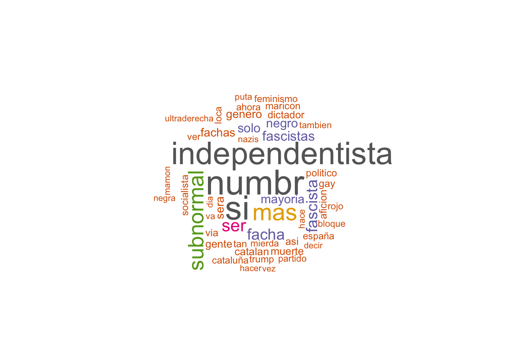
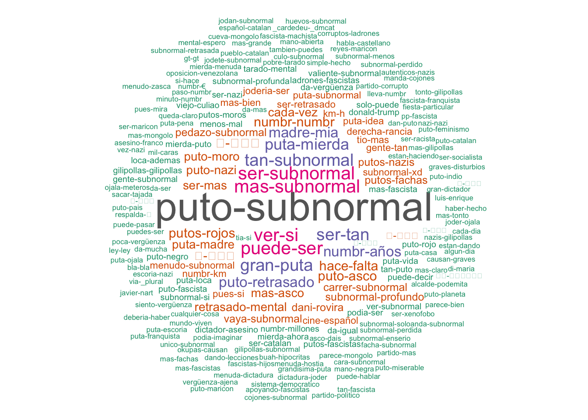
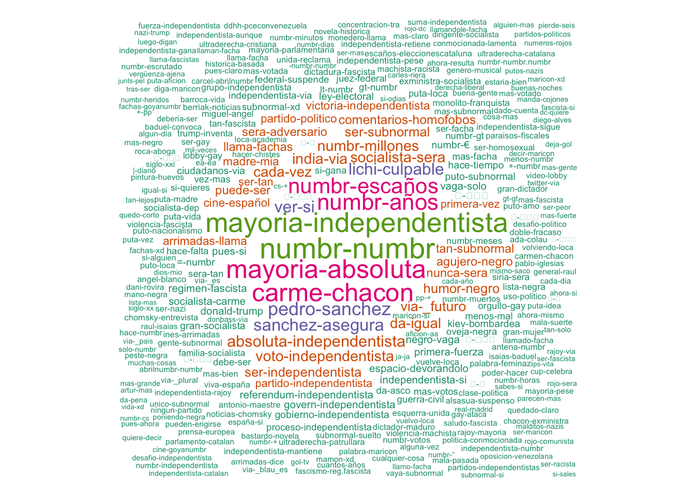
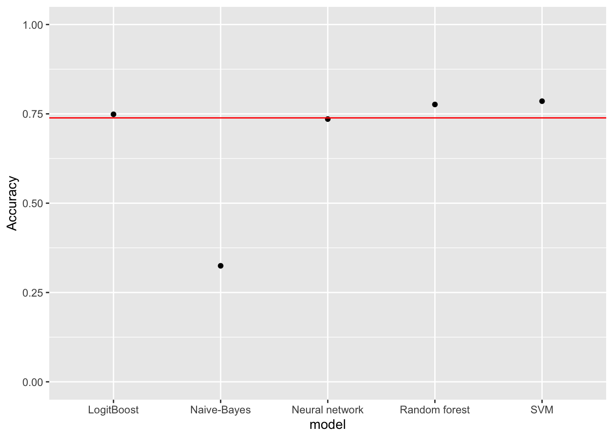
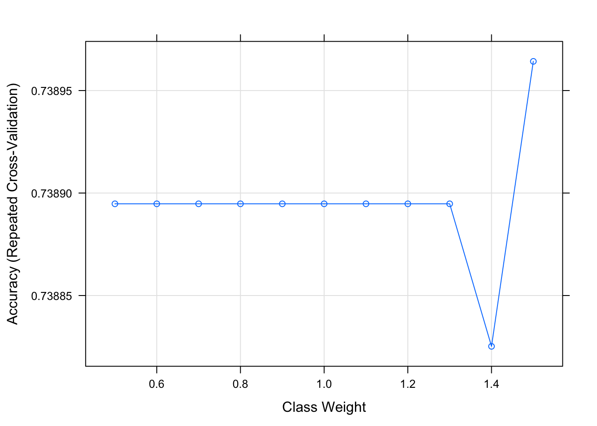

Objetivo: Con el objetivo de indagar en la interpretación del lenguaje natural, se analizarán diferentes twits, con la finalidad de analizar el complejo idioma español para clasificar el odio.
En el siguiente enlace podéis encontrar diferentes datasets a traves del buscador de para datasets de google https://datasetsearch.research.google.com/search?query=twitter%20spanish&docid=lMO2p37witpZBzb2AAAAAA%3D%3D
Los siguientes enlaces son páginas donde encontrar más datasets, algunos son gratuitos y otros de pago https://zenodo.org/record/3520150#.X_MH1On0nOQ http://tass.sepln.org/tass_data/download.php http://www.sepln.org/
Los datos que vamos a usar despues de mucho buscar para este trabajo van a ser los siguientes: https://zenodo.org/record/2592149#.X_MHjOn0lQJ
Cómo no hemos conseguido encontrar un buen dataset en español que nos diera twits con mensajes de odio de diferentes tipos y mensajes sin odio, decidimos usar el dataset anterior. En este dataset podemos encontrar 6.000 twits de odio y no odio relacionados con haternet (Delitos de odio) clasificados por 0 y 1. Tambien aporta 2 millnes de twits sin clasificar. ….
library(C50)
library(caret)## Loading required package: lattice## Loading required package: ggplot2library(quanteda)## Package version: 2.1.2## Parallel computing: 2 of 8 threads used.## See https://quanteda.io for tutorials and examples.##
## Attaching package: 'quanteda'## The following object is masked from 'package:utils':
##
## Viewlibrary(tidyverse)## ── Attaching packages ────────────────────────────────────────────────────────────────────── tidyverse 1.3.0 ──## ✓ tibble 3.0.3 ✓ dplyr 1.0.2
## ✓ tidyr 1.1.2 ✓ stringr 1.4.0
## ✓ readr 1.3.1 ✓ forcats 0.5.0
## ✓ purrr 0.3.4## ── Conflicts ───────────────────────────────────────────────────────────────────────── tidyverse_conflicts() ──
## x dplyr::filter() masks stats::filter()
## x dplyr::lag() masks stats::lag()
## x purrr::lift() masks caret::lift()library(tidytext)
library(e1071)
library(tm)## Loading required package: NLP##
## Attaching package: 'NLP'## The following objects are masked from 'package:quanteda':
##
## meta, meta<-## The following object is masked from 'package:ggplot2':
##
## annotate##
## Attaching package: 'tm'## The following objects are masked from 'package:quanteda':
##
## as.DocumentTermMatrix, stopwords#system("sed 's/;||;/\t/g' ./dataset/labeled_corpus_6K.txt > HateSpeechData.txt")datos <- read.csv("./dataset/HateSpeechData.csv", encoding="UTF-8", header = FALSE, sep = "\t")
summary(datos)## V1 V2 V3
## Length:6000 Length:6000 Min. :0.0000
## Class :character Class :character 1st Qu.:0.0000
## Mode :character Mode :character Median :0.0000
## Mean :0.2612
## 3rd Qu.:1.0000
## Max. :1.0000apply(is.na(datos),2,sum)## V1 V2 V3
## 0 0 0which(is.na(datos$V3))## integer(0)head(datos)## V1
## 1 id=828025263321657348
## 2 id=828025128797741057
## 3 id=828025087815274496
## 4 id=828025006626058241
## 5 id=828024709761658880
## 6 id=828024543847600128
## V2
## 1 Ismael es egocentrico porque se vuelve loca si le dicen que tiene el pelo bonito\U0001f602\U0001f602\U0001f602\U0001f602 eso se define con otro objetivo #FirstDates251
## 2 ..ya tardaba en salir quien pronunciase nombre catalán sílaba aguda como si fuese plana [es Eduááárd],[Ernééést],[Albééért] no son ingleses
## 3 (Esto no es un discurso político y razonado, obviamente, solo una llamada de atención en plan "JODER, NO CUESTA TANTO SABER COSAS")
## 4 Muy despreciados,siiii,pero todos vestidos de alta costura española o extranjera como la derechona burguesa verdad,… https://t.co/5UnIo6C3YF
## 5 marica explicame porque a veces no te entiendo. — En vez de venir a ensuciar mi cc con insultos homof... https://t.co/hSGMfcEtos
## 6 Abusan de 1400 niñas durante 16 años porque la policía tenía miedo de que les llamasen racistas, eran moros #MuslimBan https://t.co/2LItT1ZqFN
## V3
## 1 0
## 2 0
## 3 0
## 4 1
## 5 1
## 6 0df <- setNames(datos, c("id", "text", "class"))
df$class <- as.factor(df$class)
summary(df)## id text class
## Length:6000 Length:6000 0:4433
## Class :character Class :character 1:1567
## Mode :character Mode :characterstr(df)## 'data.frame': 6000 obs. of 3 variables:
## $ id : chr "id=828025263321657348" "id=828025128797741057" "id=828025087815274496" "id=828025006626058241" ...
## $ text : chr "Ismael es egocentrico porque se vuelve loca si le dicen que tiene el pelo bonito\U0001f602\U0001f602\U0001f602\"| __truncated__ "..ya tardaba en salir quien pronunciase nombre catalán sílaba aguda como si fuese plana [es Eduááárd],[Ernééést"| __truncated__ "(Esto no es un discurso político y razonado, obviamente, solo una llamada de atención en plan \"JODER, NO CUEST"| __truncated__ "Muy despreciados,siiii,pero todos vestidos de alta costura española o extranjera como la derechona burguesa ver"| __truncated__ ...
## $ class: Factor w/ 2 levels "0","1": 1 1 1 2 2 1 1 1 2 1 ...head(df)## id
## 1 id=828025263321657348
## 2 id=828025128797741057
## 3 id=828025087815274496
## 4 id=828025006626058241
## 5 id=828024709761658880
## 6 id=828024543847600128
## text
## 1 Ismael es egocentrico porque se vuelve loca si le dicen que tiene el pelo bonito\U0001f602\U0001f602\U0001f602\U0001f602 eso se define con otro objetivo #FirstDates251
## 2 ..ya tardaba en salir quien pronunciase nombre catalán sílaba aguda como si fuese plana [es Eduááárd],[Ernééést],[Albééért] no son ingleses
## 3 (Esto no es un discurso político y razonado, obviamente, solo una llamada de atención en plan "JODER, NO CUESTA TANTO SABER COSAS")
## 4 Muy despreciados,siiii,pero todos vestidos de alta costura española o extranjera como la derechona burguesa verdad,… https://t.co/5UnIo6C3YF
## 5 marica explicame porque a veces no te entiendo. — En vez de venir a ensuciar mi cc con insultos homof... https://t.co/hSGMfcEtos
## 6 Abusan de 1400 niñas durante 16 años porque la policía tenía miedo de que les llamasen racistas, eran moros #MuslimBan https://t.co/2LItT1ZqFN
## class
## 1 0
## 2 0
## 3 0
## 4 1
## 5 1
## 6 0df$text[1]## [1] "Ismael es egocentrico porque se vuelve loca si le dicen que tiene el pelo bonito\U0001f602\U0001f602\U0001f602\U0001f602 eso se define con otro objetivo #FirstDates251"df$text <- gsub("[\U0001F600-\U0001F64F]+", "", df$text)
df$text[1]## [1] "Ismael es egocentrico porque se vuelve loca si le dicen que tiene el pelo bonito eso se define con otro objetivo #FirstDates251"df$text[1]## [1] "Ismael es egocentrico porque se vuelve loca si le dicen que tiene el pelo bonito eso se define con otro objetivo #FirstDates251"df$text <- tolower(df$text)
df$text[1]## [1] "ismael es egocentrico porque se vuelve loca si le dicen que tiene el pelo bonito eso se define con otro objetivo #firstdates251"df$text[1858]## [1] "-(niño)papá ella se ha pasado el semáforo en rojo con la bici! -es que la srta no sabrá los colores la srta era yo con mi cara d vergüenza"df$text <- gsub("[!^á]", "a", df$text)
df$text[1858]## [1] "-(niño)papa ella se ha pasado el semaforo en rojo con la bicia -es que la srta no sabra los colores la srta era yo con mi cara d vergüenza"df$text[1874]## [1] "@fcbdreams no sé de qué te ríes. tú seguro que la tabla periódica la utilizas para ponerte las clenchas, puto subnormal, te repito."df$text <- gsub("[!^é]", "e", df$text)
df$text[1874]## [1] "@fcbdreams no se de que te ríes. tú seguro que la tabla periódica la utilizas para ponerte las clenchas, puto subnormal, te repito."df$text[1874]## [1] "@fcbdreams no se de que te ríes. tú seguro que la tabla periódica la utilizas para ponerte las clenchas, puto subnormal, te repito."df$text <- gsub("[!^í]", "i", df$text)
df$text[1874]## [1] "@fcbdreams no se de que te ries. tú seguro que la tabla periódica la utilizas para ponerte las clenchas, puto subnormal, te repito."df$text[1874]## [1] "@fcbdreams no se de que te ries. tú seguro que la tabla periódica la utilizas para ponerte las clenchas, puto subnormal, te repito."df$text <- gsub("[!^ó]", "o", df$text)
df$text[1874]## [1] "@fcbdreams no se de que te ries. tú seguro que la tabla periodica la utilizas para ponerte las clenchas, puto subnormal, te repito."df$text[1868]## [1] "pero tú eres subnormal o que te pasa? https://t.co/m41bqs4xip"df$text <- gsub("[!^ú]", "u", df$text)
df$text[1868]## [1] "pero tu eres subnormal o que te pasa? https://t.co/m41bqs4xip"df$text[17]## [1] "eres socialista? del psoe? https://t.co/5shb4ob2q7"df$text <- gsub('(f|ht)tp\\S+\\s*',"", df$text)
df$text[17]## [1] "eres socialista? del psoe? "df$text[9]## [1] "@superfalete jajajajaja. te jodes maricon."# removal of @name[mention]
df$text <- gsub('@[a-zA-Z0-9]{1,15}',"", df$text)
df$text[9]## [1] " jajajajaja. te jodes maricon."df$text[39]## [1] "un independentista (ergo facha) me llama «nacionalista» #oletu "df$text <- gsub('#',"", df$text)
df$text[39]## [1] "un independentista (ergo facha) me llama «nacionalista» oletu "df$text[48]## [1] "el dictador me parece una pelicula de 5 en _es"# replace normal numbers with numbr
df$text <- gsub('\\d+(\\.\\d+)?',"numbr", df$text)
df$text[48]## [1] "el dictador me parece una pelicula de numbr en _es"df$text[9]## [1] " jajajajaja. te jodes maricon."# remove leading and trailing whitespace
df$text <- gsub('^\\s+|\\s+?$',"", df$text)
df$text[9]## [1] "jajajajaja. te jodes maricon."df$text[39]## [1] "un independentista (ergo facha) me llama «nacionalista» oletu"# remove whitespace with a single space
df$text <- gsub('\\s+'," ", df$text)
df$text[39]## [1] "un independentista (ergo facha) me llama «nacionalista» oletu"hate <- corpus(df$text[df$class==1])
not_hate <- corpus(df$text[df$class==0])
length(hate)## [1] 1567summary(hate)## Corpus consisting of 1567 documents, showing 100 documents:
##
## Text Types Tokens Sentences
## text1 19 21 1
## text2 20 24 1
## text3 5 6 1
## text4 7 7 1
## text5 21 25 1
## text6 16 17 1
## text7 16 16 2
## text8 10 12 1
## text9 22 23 1
## text10 17 17 1
## text11 24 26 1
## text12 18 21 1
## text13 19 21 1
## text14 11 13 1
## text15 12 12 1
## text16 14 15 1
## text17 18 21 1
## text18 11 11 1
## text19 4 4 1
## text20 11 11 1
## text21 11 11 1
## text22 23 28 1
## text23 24 29 2
## text24 10 10 1
## text25 19 25 1
## text26 21 26 1
## text27 16 16 1
## text28 20 21 1
## text29 17 51 2
## text30 9 9 1
## text31 21 30 2
## text32 17 17 1
## text33 16 19 1
## text34 24 29 1
## text35 20 24 1
## text36 8 8 1
## text37 21 22 1
## text38 18 21 1
## text39 23 28 1
## text40 13 13 1
## text41 19 22 1
## text42 19 26 1
## text43 19 19 1
## text44 17 22 1
## text45 21 27 1
## text46 11 12 1
## text47 15 15 1
## text48 21 28 1
## text49 15 18 2
## text50 13 14 1
## text51 10 10 1
## text52 16 18 1
## text53 9 10 1
## text54 14 16 1
## text55 19 23 1
## text56 9 10 1
## text57 18 18 1
## text58 15 16 1
## text59 14 18 1
## text60 24 30 1
## text61 11 13 2
## text62 17 18 1
## text63 12 12 1
## text64 16 16 1
## text65 22 24 1
## text66 13 17 1
## text67 10 11 1
## text68 17 28 1
## text69 10 10 1
## text70 9 9 1
## text71 20 23 1
## text72 27 28 1
## text73 7 7 1
## text74 8 8 1
## text75 6 6 1
## text76 18 19 1
## text77 23 25 1
## text78 24 26 1
## text79 17 18 1
## text80 27 34 1
## text81 9 12 1
## text82 21 26 1
## text83 10 10 1
## text84 20 21 1
## text85 16 20 2
## text86 26 31 2
## text87 24 30 1
## text88 21 25 1
## text89 12 12 1
## text90 4 4 1
## text91 24 29 1
## text92 21 25 1
## text93 15 15 1
## text94 22 22 1
## text95 16 16 1
## text96 16 20 2
## text97 10 11 1
## text98 15 18 1
## text99 10 11 1
## text100 22 22 1class(hate)## [1] "corpus" "character"length(not_hate)## [1] 4433summary(not_hate)## Corpus consisting of 4433 documents, showing 100 documents:
##
## Text Types Tokens Sentences
## text1 21 22 1
## text2 25 31 1
## text3 25 29 1
## text4 19 21 1
## text5 22 25 1
## text6 14 14 1
## text7 20 22 1
## text8 25 29 1
## text9 21 26 1
## text10 14 18 1
## text11 11 11 1
## text12 5 6 2
## text13 16 18 1
## text14 21 23 1
## text15 20 23 1
## text16 5 5 1
## text17 19 27 1
## text18 23 26 1
## text19 18 20 1
## text20 5 5 1
## text21 11 11 1
## text22 8 8 1
## text23 11 12 1
## text24 12 12 1
## text25 22 25 1
## text26 23 28 1
## text27 12 12 1
## text28 16 19 1
## text29 7 8 1
## text30 22 27 1
## text31 21 27 1
## text32 11 11 1
## text33 7 10 2
## text34 10 10 1
## text35 16 17 1
## text36 21 24 1
## text37 21 24 1
## text38 24 27 1
## text39 13 14 1
## text40 17 18 1
## text41 4 4 1
## text42 6 6 1
## text43 11 11 1
## text44 15 18 1
## text45 7 7 1
## text46 13 15 1
## text47 11 12 1
## text48 26 29 1
## text49 27 33 1
## text50 15 17 1
## text51 24 29 1
## text52 17 17 1
## text53 23 24 1
## text54 22 25 1
## text55 13 16 1
## text56 24 24 2
## text57 15 15 1
## text58 25 32 1
## text59 20 22 1
## text60 10 10 1
## text61 14 15 1
## text62 22 25 2
## text63 16 21 1
## text64 21 22 2
## text65 17 19 1
## text66 21 22 1
## text67 11 12 1
## text68 17 17 1
## text69 16 17 1
## text70 12 13 1
## text71 13 16 3
## text72 12 12 1
## text73 22 26 2
## text74 12 12 1
## text75 13 14 1
## text76 21 23 1
## text77 24 28 1
## text78 18 22 1
## text79 25 27 1
## text80 18 25 1
## text81 8 8 1
## text82 10 10 1
## text83 7 8 1
## text84 24 26 1
## text85 23 28 1
## text86 15 15 1
## text87 12 12 1
## text88 20 35 1
## text89 20 21 1
## text90 22 32 1
## text91 17 19 1
## text92 18 18 1
## text93 18 19 1
## text94 16 27 1
## text95 19 19 1
## text96 14 14 1
## text97 9 9 1
## text98 20 26 2
## text99 7 7 1
## text100 23 26 1class(not_hate)## [1] "corpus" "character"sparse_hate <- dfm(hate,
remove = stopwords("spanish"),
stem = FALSE,
remove_punct = TRUE)
topfeatures(sparse_hate, 100) # 20 top words## subnormal mierda si mas puto
## 375 155 146 133 115
## puta ser numbr fascista fachas
## 114 114 104 101 86
## facha maricon q fascistas ver
## 77 74 72 69 53
## retrasado gilipollas asco nazi solo
## 50 50 48 48 47
## nazis gente mongolo tan catalan
## 44 43 39 39 38
## bien da hijo culo putos
## 37 36 36 35 34
## puede pues asi españa dice
## 33 32 31 31 31
## ahora madre racista hace hoy
## 31 30 29 29 28
## mejor tambien xd rojos estan
## 27 27 27 26 26
## vergüenza vete vez va aqui
## 26 26 25 25 25
## tonto vaya claro d menos
## 25 24 24 24 23
## pedazo negro pp marica voy
## 23 23 23 22 22
## pais independentista madrid imbecil franquista
## 22 22 21 21 21
## cataluña dictador partido gran dia
## 21 20 20 20 20
## cara verdad gusta mira cojones
## 20 19 19 19 19
## loca hacer español tio vas
## 19 19 19 19 19
## hijos _tomasroncero joder parece gay
## 19 19 18 18 18
## cago basura escoria feminismo tarado
## 18 18 18 18 18
## podemita igual usted politico siempre
## 18 17 17 17 17
## tener ahi eh hecho cosa
## 16 16 16 16 16sparse_not_hate <- dfm(not_hate,
remove = stopwords("spanish"),
stem = FALSE,
remove_punct = TRUE)
topfeatures(sparse_not_hate, 100) # 20 top words## numbr si independentista mas
## 578 560 516 371
## subnormal ser fascista facha
## 328 249 216 212
## q fascistas solo negro
## 203 176 159 156
## mayoria fachas sera genero
## 152 143 140 139
## gente catalan muerte asi
## 124 121 121 117
## dictador aficion via gay
## 115 113 113 112
## politico socialista tan maricon
## 108 108 106 106
## cataluña trump ahora españa
## 103 102 101 101
## loca ver feminismo rojo
## 100 100 99 98
## partido mierda bloque tambien
## 95 95 93 91
## va puta hace nazis
## 89 88 88 87
## ultraderecha mamon dia hacer
## 84 84 83 83
## negra decir vez dice
## 82 81 81 78
## xd hoy votos da
## 78 76 76 75
## puto claro + bien
## 74 73 73 72
## puede menos cosas ciudadanos
## 69 69 68 68
## nunca luego joder vida
## 67 67 66 66
## igual pues verdad nazi
## 66 65 65 64
## mejor dos refugiados pp
## 63 61 61 60
## feminazi aqui mismo machista
## 60 60 59 58
## siempre escaños eleccionescataluna d
## 57 57 57 56
## bueno violencia racista odio
## 56 55 54 54
## arrimadas años chacon parece
## 53 51 51 50
## mal elecciones cojones vergüenza
## 50 50 49 49
## mujer creo voy gran
## 49 49 49 47additional_stopwords <- c("rt",
"lol",
"q",
"d"
)
#, stopwords(source = "smart")
mystopwords <- c(stopwords("spanish"), additional_stopwords)
sparse_hate <- dfm(hate,
remove = mystopwords,
stem = FALSE,
remove_punct = TRUE)
topfeatures(sparse_hate, 100) # 20 top words## subnormal mierda si mas puto
## 375 155 146 133 115
## puta ser numbr fascista fachas
## 114 114 104 101 86
## facha maricon fascistas ver retrasado
## 77 74 69 53 50
## gilipollas asco nazi solo nazis
## 50 48 48 47 44
## gente mongolo tan catalan bien
## 43 39 39 38 37
## da hijo culo putos puede
## 36 36 35 34 33
## pues asi españa dice ahora
## 32 31 31 31 31
## madre racista hace hoy mejor
## 30 29 29 28 27
## tambien xd rojos estan vergüenza
## 27 27 26 26 26
## vete vez va aqui tonto
## 26 25 25 25 25
## vaya claro menos pedazo negro
## 24 24 23 23 23
## pp marica voy pais independentista
## 23 22 22 22 22
## madrid imbecil franquista cataluña dictador
## 21 21 21 21 20
## partido gran dia cara verdad
## 20 20 20 20 19
## gusta mira cojones loca hacer
## 19 19 19 19 19
## español tio vas hijos _tomasroncero
## 19 19 19 19 19
## joder parece gay cago basura
## 18 18 18 18 18
## escoria feminismo tarado podemita igual
## 18 18 18 18 17
## usted politico siempre tener ahi
## 17 17 17 16 16
## eh hecho cosa mamon sabes
## 16 16 16 16 16sparse_not_hate <- dfm(not_hate,
remove = mystopwords,
stem = FALSE,
remove_punct = TRUE)
topfeatures(sparse_not_hate, 100) # 20 top words## numbr si independentista mas
## 578 560 516 371
## subnormal ser fascista facha
## 328 249 216 212
## fascistas solo negro mayoria
## 176 159 156 152
## fachas sera genero gente
## 143 140 139 124
## catalan muerte asi dictador
## 121 121 117 115
## aficion via gay politico
## 113 113 112 108
## socialista tan maricon cataluña
## 108 106 106 103
## trump ahora españa loca
## 102 101 101 100
## ver feminismo rojo partido
## 100 99 98 95
## mierda bloque tambien va
## 95 93 91 89
## puta hace nazis ultraderecha
## 88 88 87 84
## mamon dia hacer negra
## 84 83 83 82
## decir vez dice xd
## 81 81 78 78
## hoy votos da puto
## 76 76 75 74
## claro + bien puede
## 73 73 72 69
## menos cosas ciudadanos nunca
## 69 68 68 67
## luego joder vida igual
## 67 66 66 66
## pues verdad nazi mejor
## 65 65 64 63
## dos refugiados pp feminazi
## 61 61 60 60
## aqui mismo machista siempre
## 60 59 58 57
## escaños eleccionescataluna bueno violencia
## 57 57 56 55
## racista odio arrimadas años
## 54 54 53 51
## chacon parece mal elecciones
## 51 50 50 50
## cojones vergüenza mujer creo
## 49 49 49 49
## voy gran mundo llama
## 49 47 47 46set.seed(100)
textplot_wordcloud(sparse_hate,
min_count = 25,
random_order = FALSE,
rotation = .25,
color = RColorBrewer::brewer.pal(8,"Dark2"))textplot_wordcloud(sparse_not_hate,
min_count = 80,
random_order = FALSE,
rotation = .25,
color = RColorBrewer::brewer.pal(8,"Dark2"))
mytoks <-
tokens(hate,
remove_punct = TRUE,
remove_numbers = TRUE) %>%
tokens_remove(mystopwords, padding = TRUE)
mytoks## Tokens consisting of 1,567 documents.
## text1 :
## [1] "" "despreciados" "siiii" "" ""
## [6] "vestidos" "" "alta" "costura" "española"
## [11] "" "extranjera"
## [ ... and 5 more ]
##
## text2 :
## [1] "marica" "explicame" "" "" "veces" ""
## [7] "" "entiendo" "" "vez" "" "venir"
## [ ... and 7 more ]
##
## text3 :
## [1] "jajajajaja" "" "jodes" "maricon"
##
## text4 :
## [1] "rovira" "lleva" "" "subnormal" "" "numbr"
##
## text5 :
## [1] "dale" "" "" "gusta" "" ""
## [7] "pagina" "" "facebook" "" "recibiras" ""
## [ ... and 10 more ]
##
## text6 :
## [1] "buah" "" "" "" "haria" "nunca" ""
## [8] "twitter" "" "" "lleno" ""
## [ ... and 3 more ]
##
## [ reached max_ndoc ... 1,561 more documents ]mytoks_2 <- tokens_ngrams(mytoks, n = 2,
concatenator = "-")
print(mytoks_2)## Tokens consisting of 1,567 documents.
## text1 :
## [1] "despreciados-siiii" "alta-costura" "costura-española"
## [4] "derechona-burguesa" "burguesa-verdad"
##
## text2 :
## [1] "marica-explicame" "insultos-homof"
##
## text3 :
## [1] "jodes-maricon"
##
## text4 :
## [1] "rovira-lleva"
##
## text5 :
## [1] "numbr-horas" "sodomita-enloquecido"
##
## text6 :
## [1] "haria-nunca"
##
## [ reached max_ndoc ... 1,561 more documents ]quant_dfm <- dfm(mytoks_2)
quant_dfm <- dfm_trim(quant_dfm, min_termfreq = 2)
quant_dfm## Document-feature matrix of: 1,567 documents, 211 features (99.8% sparse).
## features
## docs gran-puta gilipollas-subnormal puto-subnormal subnormal-solo
## text1 0 0 0 0
## text2 0 0 0 0
## text3 0 0 0 0
## text4 0 0 0 0
## text5 0 0 0 0
## text6 0 0 0 0
## features
## docs mas-subnormal ver-si cualquier-cosa puto-asco asco-dais puto-retrasado
## text1 0 0 0 0 0 0
## text2 0 0 0 0 0 0
## text3 0 0 0 0 0 0
## text4 0 0 0 0 0 0
## text5 0 0 0 0 0 0
## text6 0 0 0 0 0 0
## [ reached max_ndoc ... 1,561 more documents, reached max_nfeat ... 201 more features ]topfeatures(quant_dfm, 100) # 100 top bigrams## puto-subnormal mas-subnormal ver-si
## 29 11 11
## ser-subnormal puede-ser gran-puta
## 11 11 10
## ser-tan tan-subnormal puta-mierda
## 10 10 9
## puto-retrasado numbr-años madre-mia
## 8 8 8
## puto-asco hace-falta numbr-numbr
## 7 7 7
## putos-rojos \U0001f923-\U0001f923 mas-asco
## 7 7 6
## puto-nazi cada-vez puto-moro
## 6 6 6
## puta-madre ser-mas retrasado-mental
## 6 6 6
## \U0001f44f-\U0001f44f dani-rovira pedazo-subnormal
## 6 5 5
## vaya-subnormal subnormal-profundo putos-fachas
## 5 5 5
## putos-nazis carrer-subnormal ser-retrasado
## 5 5 4
## menudo-subnormal cine-español \U0001f4a9-\U0001f4a9
## 4 4 4
## gente-tan tio-mas derecha-rancia
## 4 4 4
## puta-idea subnormal-xd numbr-km
## 4 4 4
## km-h puta-subnormal joderia-ser
## 4 4 4
## pues-si mas-bien putos-moros
## 4 4 3
## numbr-millones puta-vida menos-mal
## 3 3 3
## donald-trump mierda-puto da-vergüenza
## 3 3 3
## tan-puto mierda-ahora puta-loca
## 3 3 3
## podia-ser ladrones-fascistas dictador-asesino
## 3 3 3
## puto-rojo subnormal-profunda solo-puede
## 3 3 3
## ser-catalan da-igual mas-fascista
## 3 3 3
## putos-fascistas ser-nazi puto-fascista
## 3 3 3
## puede-decir valiente-subnormal tarado-mental
## 3 3 3
## ver-subnormal subnormal-si viejo-culiao
## 3 3 3
## loca-ademas puto-negro gilipollas-gilipollas
## 3 3 3
## gente-subnormal gilipollas-subnormal subnormal-solo
## 3 2 2
## cualquier-cosa asco-dais puta-casa
## 2 2 2
## dan-puto podia-imaginar pobre-tarado
## 2 2 2
## ser-racista buah-hipocritas parece-mongolo
## 2 2 2
## estan-haciendo da-ser subnormal-enserio
## 2 2 2
## mas-gilipollas simple-hecho nazis-gilipollas
## 2 2 2
## lleva-numbr partido-corrupto \U0001f5d1-\U0001f5d1
## 2 2 2
## culo-subnormal
## 2textplot_wordcloud(quant_dfm,
min_count = 2,
random_order = FALSE,
rotation = 0,
color = RColorBrewer::brewer.pal(8,"Dark2"))
mytoks <-
tokens(not_hate,
remove_punct = TRUE,
remove_numbers = TRUE) %>%
tokens_remove(mystopwords, padding = TRUE)
mytoks## Tokens consisting of 4,433 documents.
## text1 :
## [1] "ismael" "" "egocentrico" "" ""
## [6] "vuelve" "loca" "si" "" "dicen"
## [11] "" ""
## [ ... and 10 more ]
##
## text2 :
## [1] "" "tardaba" "" "salir" ""
## [6] "pronunciase" "nombre" "catalan" "silaba" "aguda"
## [11] "" "si"
## [ ... and 9 more ]
##
## text3 :
## [1] "" "" "" "" "discurso"
## [6] "politico" "" "razonado" "obviamente" "solo"
## [11] "" "llamada"
## [ ... and 10 more ]
##
## text4 :
## [1] "abusan" "" "numbr" "niñas" "" "numbr" "años"
## [8] "" "" "policia" "tenia" "miedo"
## [ ... and 8 more ]
##
## text5 :
## [1] "" "ridiculo" "ayer" "" "dije" ""
## [7] "" "arabe" "" "" "" "necesario"
## [ ... and 12 more ]
##
## text6 :
## [1] "numbr" "" "considero" "genero" ""
## [6] "binario" "" "" "pronombres" ""
## [11] "" "elle"
##
## [ reached max_ndoc ... 4,427 more documents ]mytoks_2 <- tokens_ngrams(mytoks, n = 2,
concatenator = "-")
print(mytoks_2)## Tokens consisting of 4,433 documents.
## text1 :
## [1] "vuelve-loca" "loca-si"
## [3] "pelo-bonito" "objetivo-firstdatesnumbr"
##
## text2 :
## [1] "pronunciase-nombre" "nombre-catalan" "catalan-silaba"
## [4] "silaba-aguda" "eduaaard-erneeest" "erneeest-albeeert"
##
## text3 :
## [1] "discurso-politico" "razonado-obviamente" "obviamente-solo"
## [4] "plan-joder" "saber-cosas"
##
## text4 :
## [1] "numbr-niñas" "numbr-años" "policia-tenia"
## [4] "tenia-miedo" "llamasen-racistas" "moros-muslimban"
##
## text5 :
## [1] "ridiculo-ayer" "necesario-comer" "comer-culos"
##
## text6 :
## [1] "considero-genero"
##
## [ reached max_ndoc ... 4,427 more documents ]quant_dfm <- dfm(mytoks_2)
quant_dfm <- dfm_trim(quant_dfm, min_termfreq = 2)
quant_dfm## Document-feature matrix of: 4,433 documents, 1,089 features (99.9% sparse).
## features
## docs vuelve-loca numbr-años puta-vida puta-gracia humor-negro solo-existen
## text1 1 0 0 0 0 0
## text2 0 0 0 0 0 0
## text3 0 0 0 0 0 0
## text4 0 1 0 0 0 0
## text5 0 0 0 0 0 0
## text6 0 0 0 0 0 0
## features
## docs progre-guay mejor-momento cuya-aficion puta-aficion
## text1 0 0 0 0
## text2 0 0 0 0
## text3 0 0 0 0
## text4 0 0 0 0
## text5 0 0 0 0
## text6 0 0 0 0
## [ reached max_ndoc ... 4,427 more documents, reached max_nfeat ... 1,079 more features ]topfeatures(quant_dfm, 100) # 100 top bigrams## bloque-independentista numbr-numbr
## 78 44
## mayoria-independentista mayoria-absoluta
## 41 38
## carme-chacon numbr-años
## 37 32
## numbr-escaños pedro-sanchez
## 30 24
## sanchez-asegura ver-si
## 21 20
## lichi-culpable absoluta-independentista
## 20 19
## socialista-sera india-via
## 17 17
## numbr-millones voto-independentista
## 17 17
## cada-vez da-igual
## 16 16
## via-_futuro humor-negro
## 15 14
## ser-subnormal ser-independentista
## 14 14
## comentarios-homofobos nunca-sera
## 13 12
## sera-adversario agujero-negro
## 12 12
## puede-ser tan-subnormal
## 12 12
## llama-fachas partido-politico
## 12 11
## cine-español madre-mia
## 11 11
## arrimadas-llama victoria-independentista
## 11 11
## ser-tan primera-vez
## 10 10
## partido-independentista pues-si
## 10 9
## referendum-independentista regimen-fascista
## 9 9
## donald-trump independentista-si
## 9 9
## govern-independentista negro-vaga
## 9 9
## vaga-solo espacio-devorandolo
## 9 9
## socialista-carme primera-fuerza
## 9 9
## kiev-bombardea \U0001f44f-\U0001f44f
## 8 8
## hace-tiempo numbr-€
## 8 8
## puto-subnormal ley-electoral
## 8 8
## ciudadanos-via gobierno-independentista
## 8 8
## =-numbr gran-socialista
## 8 8
## menos-mal vez-mas
## 7 7
## sera-tan oveja-negra
## 7 7
## subnormal-xd debe-ser
## 7 7
## da-asco orgullo-gay
## 7 7
## mas-facha hace-falta
## 7 7
## puta-loca numbr-gt
## 7 7
## gt-numbr guerra-civil
## 7 7
## juez-federal federal-suspende
## 7 7
## proceso-independentista si-gana
## 7 7
## independentista-via mas-votos
## 7 7
## puta-vida ser-facha
## 6 6
## dictadura-fascista siria-sera
## 6 6
## tan-fascista lobby-gay
## 6 6
## \U0001f914-\U0001f914 trump-inventa
## 6 6
## monolito-franquista lt-numbr
## 6 6
## miguel-angel si-quieres
## 6 6
## numbr-meses lista-negra
## 6 6
## independentista-pese familia-socialista
## 6 6
## socialista-dep exministra-socialista
## 6 6
## grupo-independentista vuelve-loca
## 6 5
## puto-nacionalismo puta-madre
## 5 5textplot_wordcloud(quant_dfm,
min_count = 2,
random_order = FALSE,
rotation = 0,
color = RColorBrewer::brewer.pal(8,"Dark2"))## Warning in wordcloud(x, min_size, max_size, min_count, max_words, color, :
## bloque-independentista could not be fit on page. It will not be plotted.## Warning in wordcloud(x, min_size, max_size, min_count, max_words, color, :
## independentista-numbr.numbr could not be fit on page. It will not be plotted.## Warning in wordcloud(x, min_size, max_size, min_count, max_words, color, :
## leopoldo-lopez could not be fit on page. It will not be plotted.## Warning in wordcloud(x, min_size, max_size, min_count, max_words, color, :
## pueblo-catalan could not be fit on page. It will not be plotted.## Warning in wordcloud(x, min_size, max_size, min_count, max_words, color, :
## independentista-merlos could not be fit on page. It will not be plotted.## Warning in wordcloud(x, min_size, max_size, min_count, max_words, color, :
## preso-politico could not be fit on page. It will not be plotted.## Warning in wordcloud(x, min_size, max_size, min_count, max_words, color, :
## national-geographic could not be fit on page. It will not be plotted.## Warning in wordcloud(x, min_size, max_size, min_count, max_words, color, :
## numbr-euros could not be fit on page. It will not be plotted.## Warning in wordcloud(x, min_size, max_size, min_count, max_words, color, : tres-
## refugiados could not be fit on page. It will not be plotted.## Warning in wordcloud(x, min_size, max_size, min_count, max_words, color, :
## algun-subnormal could not be fit on page. It will not be plotted.## Warning in wordcloud(x, min_size, max_size, min_count, max_words, color, :
## dictador-genocida could not be fit on page. It will not be plotted.## Warning in wordcloud(x, min_size, max_size, min_count, max_words, color, :
## feminismo-liberal could not be fit on page. It will not be plotted.## Warning in wordcloud(x, min_size, max_size, min_count, max_words, color, :
## nicolas-maduro could not be fit on page. It will not be plotted.## Warning in wordcloud(x, min_size, max_size, min_count, max_words, color, :
## guerra-mundial could not be fit on page. It will not be plotted.## Warning in wordcloud(x, min_size, max_size, min_count, max_words, color, :
## propaganda-independentista could not be fit on page. It will not be plotted.## Warning in wordcloud(x, min_size, max_size, min_count, max_words, color, :
## refugiados-via could not be fit on page. It will not be plotted.## Warning in wordcloud(x, min_size, max_size, min_count, max_words, color, : arco-
## politico could not be fit on page. It will not be plotted.## Warning in wordcloud(x, min_size, max_size, min_count, max_words, color, :
## monumento-fascista could not be fit on page. It will not be plotted.## Warning in wordcloud(x, min_size, max_size, min_count, max_words, color, :
## panorama-politico could not be fit on page. It will not be plotted.## Warning in wordcloud(x, min_size, max_size, min_count, max_words, color, :
## mucha-gente could not be fit on page. It will not be plotted.## Warning in wordcloud(x, min_size, max_size, min_count, max_words, color, :
## chiste-bombardea could not be fit on page. It will not be plotted.## Warning in wordcloud(x, min_size, max_size, min_count, max_words, color, :
## miserables-izquierdistas could not be fit on page. It will not be plotted.## Warning in wordcloud(x, min_size, max_size, min_count, max_words, color, :
## independentismo-catalan could not be fit on page. It will not be plotted.## Warning in wordcloud(x, min_size, max_size, min_count, max_words, color, :
## numbr-personas could not be fit on page. It will not be plotted.## Warning in wordcloud(x, min_size, max_size, min_count, max_words, color, : hace-
## gracia could not be fit on page. It will not be plotted.## Warning in wordcloud(x, min_size, max_size, min_count, max_words, color, :
## ultraderecha-tambien could not be fit on page. It will not be plotted.## Warning in wordcloud(x, min_size, max_size, min_count, max_words, color, :
## tambien-habitaba could not be fit on page. It will not be plotted.## Warning in wordcloud(x, min_size, max_size, min_count, max_words, color, :
## cualquier-caso could not be fit on page. It will not be plotted.## Warning in wordcloud(x, min_size, max_size, min_count, max_words, color, :
## termino-feminazi could not be fit on page. It will not be plotted.## Warning in wordcloud(x, min_size, max_size, min_count, max_words, color, :
## sanchez-subraya could not be fit on page. It will not be plotted.## Warning in wordcloud(x, min_size, max_size, min_count, max_words, color, :
## puigdemont-pone could not be fit on page. It will not be plotted.## Warning in wordcloud(x, min_size, max_size, min_count, max_words, color, :
## romper-estereotipos could not be fit on page. It will not be plotted.## Warning in wordcloud(x, min_size, max_size, min_count, max_words, color, :
## cuanto-menos could not be fit on page. It will not be plotted.## Warning in wordcloud(x, min_size, max_size, min_count, max_words, color, :
## ultimos-momentos could not be fit on page. It will not be plotted.## Warning in wordcloud(x, min_size, max_size, min_count, max_words, color, :
## proyecto-separatista could not be fit on page. It will not be plotted.## Warning in wordcloud(x, min_size, max_size, min_count, max_words, color, :
## deberian-haber could not be fit on page. It will not be plotted.## Warning in wordcloud(x, min_size, max_size, min_count, max_words, color, :
## genero-literario could not be fit on page. It will not be plotted.## Warning in wordcloud(x, min_size, max_size, min_count, max_words, color, :
## twitter-destroza could not be fit on page. It will not be plotted.## Warning in wordcloud(x, min_size, max_size, min_count, max_words, color, :
## rapero-podemita could not be fit on page. It will not be plotted.## Warning in wordcloud(x, min_size, max_size, min_count, max_words, color, :
## podemita-hasel could not be fit on page. It will not be plotted.## Warning in wordcloud(x, min_size, max_size, min_count, max_words, color, :
## españa-🇪🇸 could not be fit on page. It will not be plotted.## Warning in wordcloud(x, min_size, max_size, min_count, max_words, color, :
## policia-local could not be fit on page. It will not be plotted.## Warning in wordcloud(x, min_size, max_size, min_count, max_words, color, :
## estan-haciendo could not be fit on page. It will not be plotted.## Warning in wordcloud(x, min_size, max_size, min_count, max_words, color, :
## numbr-segundos could not be fit on page. It will not be plotted.## Warning in wordcloud(x, min_size, max_size, min_count, max_words, color, :
## argentina-brutal could not be fit on page. It will not be plotted.## Warning in wordcloud(x, min_size, max_size, min_count, max_words, color, :
## brutal-represion could not be fit on page. It will not be plotted.## Warning in wordcloud(x, min_size, max_size, min_count, max_words, color, :
## multinacional-yanki could not be fit on page. It will not be plotted.## Warning in wordcloud(x, min_size, max_size, min_count, max_words, color, :
## yanki-pepsico could not be fit on page. It will not be plotted.## Warning in wordcloud(x, min_size, max_size, min_count, max_words, color, :
## florida-videos could not be fit on page. It will not be plotted.## Warning in wordcloud(x, min_size, max_size, min_count, max_words, color, :
## genero-masculino could not be fit on page. It will not be plotted.## Warning in wordcloud(x, min_size, max_size, min_count, max_words, color, :
## racistas-machistas could not be fit on page. It will not be plotted.## Warning in wordcloud(x, min_size, max_size, min_count, max_words, color, :
## catalan-solo could not be fit on page. It will not be plotted.## Warning in wordcloud(x, min_size, max_size, min_count, max_words, color, :
## asesora-estrella could not be fit on page. It will not be plotted.## Warning in wordcloud(x, min_size, max_size, min_count, max_words, color, :
## refugiados-| could not be fit on page. It will not be plotted.## Warning in wordcloud(x, min_size, max_size, min_count, max_words, color, :
## diario-publico could not be fit on page. It will not be plotted.## Warning in wordcloud(x, min_size, max_size, min_count, max_words, color, :
## ultraderecha-ataca could not be fit on page. It will not be plotted.## Warning in wordcloud(x, min_size, max_size, min_count, max_words, color, :
## numbr-paises could not be fit on page. It will not be plotted.## Warning in wordcloud(x, min_size, max_size, min_count, max_words, color, :
## independentista-catalana could not be fit on page. It will not be plotted.## Warning in wordcloud(x, min_size, max_size, min_count, max_words, color, :
## marea-independentista could not be fit on page. It will not be plotted.## Warning in wordcloud(x, min_size, max_size, min_count, max_words, color, : culo-
## negro could not be fit on page. It will not be plotted.## Warning in wordcloud(x, min_size, max_size, min_count, max_words, color, :
## manifestacion-independentista could not be fit on page. It will not be plotted.## Warning in wordcloud(x, min_size, max_size, min_count, max_words, color, : tres-
## motores could not be fit on page. It will not be plotted.## Warning in wordcloud(x, min_size, max_size, min_count, max_words, color, :
## dictador-franco could not be fit on page. It will not be plotted.## Warning in wordcloud(x, min_size, max_size, min_count, max_words, color, :
## colau-clasifica could not be fit on page. It will not be plotted.## Warning in wordcloud(x, min_size, max_size, min_count, max_words, color, :
## puedes-ser could not be fit on page. It will not be plotted.## Warning in wordcloud(x, min_size, max_size, min_count, max_words, color, :
## ciruelas-negras could not be fit on page. It will not be plotted.## Warning in wordcloud(x, min_size, max_size, min_count, max_words, color, :
## estan-verdes could not be fit on page. It will not be plotted.## Warning in wordcloud(x, min_size, max_size, min_count, max_words, color, :
## subnormal-jaja could not be fit on page. It will not be plotted.## Warning in wordcloud(x, min_size, max_size, min_count, max_words, color, :
## guardia-civil could not be fit on page. It will not be plotted.## Warning in wordcloud(x, min_size, max_size, min_count, max_words, color, :
## numbr-paraisos could not be fit on page. It will not be plotted.## Warning in wordcloud(x, min_size, max_size, min_count, max_words, color, :
## novio-subnormal could not be fit on page. It will not be plotted.## Warning in wordcloud(x, min_size, max_size, min_count, max_words, color, :
## regimen-franquista could not be fit on page. It will not be plotted.## Warning in wordcloud(x, min_size, max_size, min_count, max_words, color, :
## numero-numbr could not be fit on page. It will not be plotted.## Warning in wordcloud(x, min_size, max_size, min_count, max_words, color, :
## arrimadas-llamandole could not be fit on page. It will not be plotted.## Warning in wordcloud(x, min_size, max_size, min_count, max_words, color, :
## bestia-negra could not be fit on page. It will not be plotted.## Warning in wordcloud(x, min_size, max_size, min_count, max_words, color, :
## arrimadas-llamandola could not be fit on page. It will not be plotted.## Warning in wordcloud(x, min_size, max_size, min_count, max_words, color, :
## llamandola-facha could not be fit on page. It will not be plotted.## Warning in wordcloud(x, min_size, max_size, min_count, max_words, color, :
## cocina-india could not be fit on page. It will not be plotted.## Warning in wordcloud(x, min_size, max_size, min_count, max_words, color, :
## derecha-fascista could not be fit on page. It will not be plotted.## Warning in wordcloud(x, min_size, max_size, min_count, max_words, color, :
## carcel-carcel could not be fit on page. It will not be plotted.## Warning in wordcloud(x, min_size, max_size, min_count, max_words, color, :
## catalana-independentista could not be fit on page. It will not be plotted.## Warning in wordcloud(x, min_size, max_size, min_count, max_words, color, : mata-
## decimos could not be fit on page. It will not be plotted.## Warning in wordcloud(x, min_size, max_size, min_count, max_words, color, :
## decimos-violencia could not be fit on page. It will not be plotted.## Warning in wordcloud(x, min_size, max_size, min_count, max_words, color, :
## parlamento-independentista could not be fit on page. It will not be plotted.## Warning in wordcloud(x, min_size, max_size, min_count, max_words, color, :
## independentista-gt could not be fit on page. It will not be plotted.## Warning in wordcloud(x, min_size, max_size, min_count, max_words, color, : gt-
## elecciones could not be fit on page. It will not be plotted.## Warning in wordcloud(x, min_size, max_size, min_count, max_words, color, : toda-
## cataluña could not be fit on page. It will not be plotted.## Warning in wordcloud(x, min_size, max_size, min_count, max_words, color, :
## marhuenda-franco could not be fit on page. It will not be plotted.## Warning in wordcloud(x, min_size, max_size, min_count, max_words, color, : frio-
## maricon could not be fit on page. It will not be plotted.## Warning in wordcloud(x, min_size, max_size, min_count, max_words, color, :
## eleccionsnumbrd-eleccionescataluna could not be fit on page. It will not be
## plotted.## Warning in wordcloud(x, min_size, max_size, min_count, max_words, color, :
## cataluña-independentista could not be fit on page. It will not be plotted.## Warning in wordcloud(x, min_size, max_size, min_count, max_words, color, :
## independentista-eleccionescataluna could not be fit on page. It will not be
## plotted.## Warning in wordcloud(x, min_size, max_size, min_count, max_words, color, :
## catalan-sera could not be fit on page. It will not be plotted.## Warning in wordcloud(x, min_size, max_size, min_count, max_words, color, :
## signo-politico could not be fit on page. It will not be plotted.## Warning in wordcloud(x, min_size, max_size, min_count, max_words, color, :
## eleccionescataluña-numbrd could not be fit on page. It will not be plotted.## Warning in wordcloud(x, min_size, max_size, min_count, max_words, color, :
## independentista-eleccionescataluña could not be fit on page. It will not be
## plotted.## Warning in wordcloud(x, min_size, max_size, min_count, max_words, color, :
## numbr.numbr-numbr could not be fit on page. It will not be plotted.## Warning in wordcloud(x, min_size, max_size, min_count, max_words, color, :
## puigdemont-pulveriza could not be fit on page. It will not be plotted.## Warning in wordcloud(x, min_size, max_size, min_count, max_words, color, :
## pulveriza-todas could not be fit on page. It will not be plotted.## Warning in wordcloud(x, min_size, max_size, min_count, max_words, color, :
## menos-votos could not be fit on page. It will not be plotted.## Warning in wordcloud(x, min_size, max_size, min_count, max_words, color, :
## parlamentaria-independentista could not be fit on page. It will not be plotted.## Warning in wordcloud(x, min_size, max_size, min_count, max_words, color, :
## numbr-bloque could not be fit on page. It will not be plotted.## Warning in wordcloud(x, min_size, max_size, min_count, max_words, color, :
## ciudadanos-numbr could not be fit on page. It will not be plotted.## Warning in wordcloud(x, min_size, max_size, min_count, max_words, color, :
## sentido-pesame could not be fit on page. It will not be plotted.## Warning in wordcloud(x, min_size, max_size, min_count, max_words, color, :
## riera-obtiene could not be fit on page. It will not be plotted.## Warning in wordcloud(x, min_size, max_size, min_count, max_words, color, :
## obtiene-cuatro could not be fit on page. It will not be plotted.## Warning in wordcloud(x, min_size, max_size, min_count, max_words, color, :
## cuatro-escaños could not be fit on page. It will not be plotted.## Warning in wordcloud(x, min_size, max_size, min_count, max_words, color, : seis-
## respecto could not be fit on page. It will not be plotted.## Warning in wordcloud(x, min_size, max_size, min_count, max_words, color, :
## ciudadanos-gana could not be fit on page. It will not be plotted.## Warning in wordcloud(x, min_size, max_size, min_count, max_words, color, :
## eleccionescataluna-numbrd could not be fit on page. It will not be plotted.## Warning in wordcloud(x, min_size, max_size, min_count, max_words, color, :
## exito-historico could not be fit on page. It will not be plotted.## Warning in wordcloud(x, min_size, max_size, min_count, max_words, color, :
## queda-empañado could not be fit on page. It will not be plotted.## Warning in wordcloud(x, min_size, max_size, min_count, max_words, color, :
## numbr-eleccionescataluna could not be fit on page. It will not be plotted.## Warning in wordcloud(x, min_size, max_size, min_count, max_words, color, :
## versus-numbr could not be fit on page. It will not be plotted.## Warning in wordcloud(x, min_size, max_size, min_count, max_words, color, :
## santos-cojones could not be fit on page. It will not be plotted.## Warning in wordcloud(x, min_size, max_size, min_count, max_words, color, : loca-
## semana could not be fit on page. It will not be plotted.## Warning in wordcloud(x, min_size, max_size, min_count, max_words, color, :
## deben-pensar could not be fit on page. It will not be plotted.## Warning in wordcloud(x, min_size, max_size, min_count, max_words, color, :
## personas-forzadas could not be fit on page. It will not be plotted.## Warning in wordcloud(x, min_size, max_size, min_count, max_words, color, :
## europea-via could not be fit on page. It will not be plotted.## Warning in wordcloud(x, min_size, max_size, min_count, max_words, color, :
## puede-decir could not be fit on page. It will not be plotted.## Warning in wordcloud(x, min_size, max_size, min_count, max_words, color, :
## gente-homofoba could not be fit on page. It will not be plotted.## Warning in wordcloud(x, min_size, max_size, min_count, max_words, color, :
## llevar-numbr could not be fit on page. It will not be plotted.## Warning in wordcloud(x, min_size, max_size, min_count, max_words, color, :
## leyenda-negra could not be fit on page. It will not be plotted.## Warning in wordcloud(x, min_size, max_size, min_count, max_words, color, :
## arriba-españa could not be fit on page. It will not be plotted.## Warning in wordcloud(x, min_size, max_size, min_count, max_words, color, :
## numbr-partido could not be fit on page. It will not be plotted.## Warning in wordcloud(x, min_size, max_size, min_count, max_words, color, :
## fascista-video could not be fit on page. It will not be plotted.## Warning in wordcloud(x, min_size, max_size, min_count, max_words, color, :
## retiraban-propaganda could not be fit on page. It will not be plotted.## Warning in wordcloud(x, min_size, max_size, min_count, max_words, color, : mas-
## mamon could not be fit on page. It will not be plotted.## Warning in wordcloud(x, min_size, max_size, min_count, max_words, color, : rojo-
## puton could not be fit on page. It will not be plotted.## Warning in wordcloud(x, min_size, max_size, min_count, max_words, color, :
## llamando-puta could not be fit on page. It will not be plotted.## Warning in wordcloud(x, min_size, max_size, min_count, max_words, color, : mas-
## homofobo could not be fit on page. It will not be plotted.## Warning in wordcloud(x, min_size, max_size, min_count, max_words, color, : dos-
## tipos could not be fit on page. It will not be plotted.## Warning in wordcloud(x, min_size, max_size, min_count, max_words, color, : caso-
## futbolista could not be fit on page. It will not be plotted.## Warning in wordcloud(x, min_size, max_size, min_count, max_words, color, :
## riesgo-independentista could not be fit on page. It will not be plotted.## Warning in wordcloud(x, min_size, max_size, min_count, max_words, color, :
## tener-razon could not be fit on page. It will not be plotted.## Warning in wordcloud(x, min_size, max_size, min_count, max_words, color, :
## ivanka-trump could not be fit on page. It will not be plotted.## Warning in wordcloud(x, min_size, max_size, min_count, max_words, color, :
## causa-independentista could not be fit on page. It will not be plotted.## Warning in wordcloud(x, min_size, max_size, min_count, max_words, color, :
## constituyente-impondra could not be fit on page. It will not be plotted.## Warning in wordcloud(x, min_size, max_size, min_count, max_words, color, :
## puede-haber could not be fit on page. It will not be plotted.## Warning in wordcloud(x, min_size, max_size, min_count, max_words, color, :
## pueden-ser could not be fit on page. It will not be plotted.## Warning in wordcloud(x, min_size, max_size, min_count, max_words, color, : ser-
## hetero could not be fit on page. It will not be plotted.## Warning in wordcloud(x, min_size, max_size, min_count, max_words, color, :
## holocausto-azteca could not be fit on page. It will not be plotted.## Warning in wordcloud(x, min_size, max_size, min_count, max_words, color, :
## callate-subnormal could not be fit on page. It will not be plotted.## Warning in wordcloud(x, min_size, max_size, min_count, max_words, color, : ser-
## ignorante could not be fit on page. It will not be plotted.## Warning in wordcloud(x, min_size, max_size, min_count, max_words, color, : solo-
## pueden could not be fit on page. It will not be plotted.## Warning in wordcloud(x, min_size, max_size, min_count, max_words, color, :
## fascistas-españoles could not be fit on page. It will not be plotted.## Warning in wordcloud(x, min_size, max_size, min_count, max_words, color, :
## policia-nacional could not be fit on page. It will not be plotted.## Warning in wordcloud(x, min_size, max_size, min_count, max_words, color, : mas-
## rancia could not be fit on page. It will not be plotted.## Warning in wordcloud(x, min_size, max_size, min_count, max_words, color, :
## familia-independentista could not be fit on page. It will not be plotted.## Warning in wordcloud(x, min_size, max_size, min_count, max_words, color, : mas-
## conservador could not be fit on page. It will not be plotted.## Warning in wordcloud(x, min_size, max_size, min_count, max_words, color, :
## patriotismo-constitucional could not be fit on page. It will not be plotted.## Warning in wordcloud(x, min_size, max_size, min_count, max_words, color, :
## tambien-lucha could not be fit on page. It will not be plotted.## Warning in wordcloud(x, min_size, max_size, min_count, max_words, color, :
## palabra-facha could not be fit on page. It will not be plotted.## Warning in wordcloud(x, min_size, max_size, min_count, max_words, color, :
## independentista-ahora could not be fit on page. It will not be plotted.## Warning in wordcloud(x, min_size, max_size, min_count, max_words, color, : si-
## encima could not be fit on page. It will not be plotted.## Warning in wordcloud(x, min_size, max_size, min_count, max_words, color, :
## llaman-fascistas could not be fit on page. It will not be plotted.## Warning in wordcloud(x, min_size, max_size, min_count, max_words, color, :
## republica-gt could not be fit on page. It will not be plotted.## Warning in wordcloud(x, min_size, max_size, min_count, max_words, color, :
## prohibe-meme could not be fit on page. It will not be plotted.## Warning in wordcloud(x, min_size, max_size, min_count, max_words, color, :
## trump--gt could not be fit on page. It will not be plotted.## Warning in wordcloud(x, min_size, max_size, min_count, max_words, color, :
## clave-independentista could not be fit on page. It will not be plotted.## Warning in wordcloud(x, min_size, max_size, min_count, max_words, color, :
## sacado-mas could not be fit on page. It will not be plotted.## Warning in wordcloud(x, min_size, max_size, min_count, max_words, color, :
## ciudades-mas could not be fit on page. It will not be plotted.## Warning in wordcloud(x, min_size, max_size, min_count, max_words, color, :
## maduro-publica could not be fit on page. It will not be plotted.## Warning in wordcloud(x, min_size, max_size, min_count, max_words, color, :
## escaños-gana could not be fit on page. It will not be plotted.## Warning in wordcloud(x, min_size, max_size, min_count, max_words, color, :
## perdido-votos could not be fit on page. It will not be plotted.## Warning in wordcloud(x, min_size, max_size, min_count, max_words, color, : per-
## catalunya could not be fit on page. It will not be plotted.## Warning in wordcloud(x, min_size, max_size, min_count, max_words, color, : gran-
## ministra could not be fit on page. It will not be plotted.## Warning in wordcloud(x, min_size, max_size, min_count, max_words, color, :
## columpioa-video could not be fit on page. It will not be plotted.
data_counts <- map_df(1:2,
~ unnest_tokens(df, word, text,
token = "ngrams", n = .x)) %>%
anti_join(stop_words, by = "word") %>%
count(id, word, sort = TRUE)
words_10 <- data_counts %>%
group_by(word) %>%
summarise(n = n()) %>%
filter(n >= 10) %>%
select(word)## `summarise()` ungrouping output (override with `.groups` argument)data_dtm <- data_counts %>%
right_join(words_10, by = "word") %>%
bind_tf_idf(word, id, n) %>%
cast_dtm(id, word, tf_idf)
meta <- tibble(id = dimnames(data_dtm)[[1]]) %>%
left_join(df[!duplicated(df$id), ], by = "id")
set.seed(1234)
trainIndex <- createDataPartition(meta$class, p = 0.8, list = FALSE, times = 1)
data_df_train <- data_dtm[trainIndex, ] %>% as.matrix() %>% as.data.frame()
data_df_test <- data_dtm[-trainIndex, ] %>% as.matrix() %>% as.data.frame()
response_train <- meta$class[trainIndex]
response_test <- meta$class[-trainIndex]
summary(data_df_train)## numbr numbr numbr gt las
## Min. :0.00000 Min. :0.00000 Min. :0.000000 Min. :0.00000
## 1st Qu.:0.00000 1st Qu.:0.00000 1st Qu.:0.000000 1st Qu.:0.00000
## Median :0.00000 Median :0.00000 Median :0.000000 Median :0.00000
## Mean :0.01818 Mean :0.00259 Mean :0.003744 Mean :0.01616
## 3rd Qu.:0.00000 3rd Qu.:0.00000 3rd Qu.:0.000000 3rd Qu.:0.00000
## Max. :1.24892 Max. :0.99214 Max. :2.781427 Max. :0.81936
## al soy los en
## Min. :0.00000 Min. :0.00000 Min. :0.00000 Min. :0.00000
## 1st Qu.:0.00000 1st Qu.:0.00000 1st Qu.:0.00000 1st Qu.:0.00000
## Median :0.00000 Median :0.00000 Median :0.00000 Median :0.00000
## Mean :0.01601 Mean :0.01255 Mean :0.02824 Mean :0.02741
## 3rd Qu.:0.00000 3rd Qu.:0.00000 3rd Qu.:0.00000 3rd Qu.:0.00000
## Max. :1.40382 Max. :1.60059 Max. :0.78292 Max. :0.53421
## de la subnormal gilipollas
## Min. :0.00000 Min. :0.00000 Min. :0.00000 Min. :0.000000
## 1st Qu.:0.00000 1st Qu.:0.00000 1st Qu.:0.00000 1st Qu.:0.000000
## Median :0.02059 Median :0.00000 Median :0.00000 Median :0.000000
## Mean :0.03472 Mean :0.03305 Mean :0.02992 Mean :0.004502
## 3rd Qu.:0.06176 3rd Qu.:0.06003 3rd Qu.:0.00000 3rd Qu.:0.000000
## Max. :0.33970 Max. :0.54029 Max. :2.16747 Max. :2.022660
## nacionalismo puto el con
## Min. :0.000000 Min. :0.00000 Min. :0.00000 Min. :0.0000
## 1st Qu.:0.000000 1st Qu.:0.00000 1st Qu.:0.00000 1st Qu.:0.0000
## Median :0.000000 Median :0.00000 Median :0.00000 Median :0.0000
## Mean :0.001102 Mean :0.01023 Mean :0.03235 Mean :0.0199
## 3rd Qu.:0.000000 3rd Qu.:0.00000 3rd Qu.:0.05767 3rd Qu.:0.0000
## Max. :2.863842 Max. :1.75828 Max. :0.57674 Max. :0.8340
## del no soy pero ley
## Min. :0.00000 Min. :0.000000 Min. :0.00000 Min. :0.000000
## 1st Qu.:0.00000 1st Qu.:0.000000 1st Qu.:0.00000 1st Qu.:0.000000
## Median :0.00000 Median :0.000000 Median :0.00000 Median :0.000000
## Mean :0.02027 Mean :0.002664 Mean :0.01661 Mean :0.001388
## 3rd Qu.:0.00000 3rd Qu.:0.000000 3rd Qu.:0.00000 3rd Qu.:0.000000
## Max. :1.11688 Max. :1.645716 Max. :0.76937 Max. :0.900418
## ni se se la es
## Min. :0.000000 Min. :0.00000 Min. :0.0000000 Min. :0.0000
## 1st Qu.:0.000000 1st Qu.:0.00000 1st Qu.:0.0000000 1st Qu.:0.0000
## Median :0.000000 Median :0.00000 Median :0.0000000 Median :0.0000
## Mean :0.008799 Mean :0.01849 Mean :0.0006376 Mean :0.0268
## 3rd Qu.:0.000000 3rd Qu.:0.00000 3rd Qu.:0.0000000 3rd Qu.:0.0000
## Max. :1.418022 Max. :0.67166 Max. :0.9435997 Max. :0.7676
## nazi eres llaman nos
## Min. :0.000000 Min. :0.0000 Min. :0.000000 Min. :0.000000
## 1st Qu.:0.000000 1st Qu.:0.0000 1st Qu.:0.000000 1st Qu.:0.000000
## Median :0.000000 Median :0.0000 Median :0.000000 Median :0.000000
## Mean :0.005422 Mean :0.0205 Mean :0.002076 Mean :0.006221
## 3rd Qu.:0.000000 3rd Qu.:0.0000 3rd Qu.:0.000000 3rd Qu.:0.000000
## Max. :1.018344 Max. :1.3184 Max. :1.332763 Max. :1.963831
## tan ser por rojo
## Min. :0.000000 Min. :0.00000 Min. :0.00000 Min. :0.000000
## 1st Qu.:0.000000 1st Qu.:0.00000 1st Qu.:0.00000 1st Qu.:0.000000
## Median :0.000000 Median :0.00000 Median :0.00000 Median :0.000000
## Mean :0.007045 Mean :0.01168 Mean :0.02139 Mean :0.007635
## 3rd Qu.:0.000000 3rd Qu.:0.00000 3rd Qu.:0.00000 3rd Qu.:0.000000
## Max. :1.261897 Max. :0.96743 Max. :0.96435 Max. :4.073375
## carcel una tu lo
## Min. :0.000000 Min. :0.00000 Min. :0.00000 Min. :0.00000
## 1st Qu.:0.000000 1st Qu.:0.00000 1st Qu.:0.00000 1st Qu.:0.00000
## Median :0.000000 Median :0.00000 Median :0.00000 Median :0.00000
## Mean :0.002165 Mean :0.01807 Mean :0.01509 Mean :0.01928
## 3rd Qu.:0.000000 3rd Qu.:0.00000 3rd Qu.:0.00000 3rd Qu.:0.00000
## Max. :0.857167 Max. :0.91857 Max. :1.42595 Max. :0.48887
## su primero a veces veces
## Min. :0.00000 Min. :0.000000 Min. :0.0000000 Min. :0.000000
## 1st Qu.:0.00000 1st Qu.:0.000000 1st Qu.:0.0000000 1st Qu.:0.000000
## Median :0.00000 Median :0.000000 Median :0.0000000 Median :0.000000
## Mean :0.01079 Mean :0.001969 Mean :0.0008821 Mean :0.001997
## 3rd Qu.:0.00000 3rd Qu.:0.000000 3rd Qu.:0.0000000 3rd Qu.:0.000000
## Max. :1.01296 Max. :2.903988 Max. :1.4539505 Max. :1.246733
## han no no gays son
## Min. :0.000000 Min. :0.000000 Min. :0.000000 Min. :0.00000
## 1st Qu.:0.000000 1st Qu.:0.000000 1st Qu.:0.000000 1st Qu.:0.00000
## Median :0.000000 Median :0.000000 Median :0.000000 Median :0.00000
## Mean :0.005051 Mean :0.001303 Mean :0.000861 Mean :0.02209
## 3rd Qu.:0.000000 3rd Qu.:0.000000 3rd Qu.:0.000000 3rd Qu.:0.00000
## Max. :0.986189 Max. :1.451994 Max. :0.710640 Max. :1.08301
## esto unos vaya la de
## Min. :0.000000 Min. :0.000000 Min. :0.000000 Min. :0.0000000
## 1st Qu.:0.000000 1st Qu.:0.000000 1st Qu.:0.000000 1st Qu.:0.0000000
## Median :0.000000 Median :0.000000 Median :0.000000 Median :0.0000000
## Mean :0.005143 Mean :0.004037 Mean :0.005241 Mean :0.0008678
## 3rd Qu.:0.000000 3rd Qu.:0.000000 3rd Qu.:0.000000 3rd Qu.:0.0000000
## Max. :0.994962 Max. :0.677625 Max. :2.327648 Max. :1.0457221
## si mierda todos xd
## Min. :0.00000 Min. :0.000000 Min. :0.00000 Min. :0.000000
## 1st Qu.:0.00000 1st Qu.:0.000000 1st Qu.:0.00000 1st Qu.:0.000000
## Median :0.00000 Median :0.000000 Median :0.00000 Median :0.000000
## Mean :0.01765 Mean :0.009089 Mean :0.00609 Mean :0.005148
## 3rd Qu.:0.00000 3rd Qu.:0.000000 3rd Qu.:0.00000 3rd Qu.:0.000000
## Max. :1.11377 Max. :1.069803 Max. :0.99504 Max. :1.542517
## que me no tengo tengo para
## Min. :0.000000 Min. :0.000000 Min. :0.000000 Min. :0.0000
## 1st Qu.:0.000000 1st Qu.:0.000000 1st Qu.:0.000000 1st Qu.:0.0000
## Median :0.000000 Median :0.000000 Median :0.000000 Median :0.0000
## Mean :0.005798 Mean :0.001202 Mean :0.005192 Mean :0.0142
## 3rd Qu.:0.000000 3rd Qu.:0.000000 3rd Qu.:0.000000 3rd Qu.:0.0000
## Max. :0.986189 Max. :1.314300 Max. :1.414667 Max. :0.6234
## le negro vida te
## Min. :0.000000 Min. :0.000000 Min. :0.000000 Min. :0.00000
## 1st Qu.:0.000000 1st Qu.:0.000000 1st Qu.:0.000000 1st Qu.:0.00000
## Median :0.000000 Median :0.000000 Median :0.000000 Median :0.00000
## Mean :0.009515 Mean :0.009628 Mean :0.004109 Mean :0.01916
## 3rd Qu.:0.000000 3rd Qu.:0.000000 3rd Qu.:0.000000 3rd Qu.:0.00000
## Max. :0.790253 Max. :1.775427 Max. :1.455871 Max. :2.59579
## negra sin mi mucho
## Min. :0.000000 Min. :0.000000 Min. :0.00000 Min. :0.00000
## 1st Qu.:0.000000 1st Qu.:0.000000 1st Qu.:0.00000 1st Qu.:0.00000
## Median :0.000000 Median :0.000000 Median :0.00000 Median :0.00000
## Mean :0.005445 Mean :0.005514 Mean :0.01111 Mean :0.00477
## 3rd Qu.:0.000000 3rd Qu.:0.000000 3rd Qu.:0.00000 3rd Qu.:0.00000
## Max. :1.407004 Max. :1.998933 Max. :0.75115 Max. :2.15816
## mas barrio por su politico
## Min. :0.00000 Min. :0.000000 Min. :0.000000 Min. :0.000000
## 1st Qu.:0.00000 1st Qu.:0.000000 1st Qu.:0.000000 1st Qu.:0.000000
## Median :0.00000 Median :0.000000 Median :0.000000 Median :0.000000
## Mean :0.01465 Mean :0.001247 Mean :0.001184 Mean :0.006093
## 3rd Qu.:0.00000 3rd Qu.:0.000000 3rd Qu.:0.000000 3rd Qu.:0.000000
## Max. :0.84431 Max. :1.009882 Max. :1.009882 Max. :1.951278
## de que esta por la millones
## Min. :0.000000 Min. :0.00000 Min. :0.000000 Min. :0.00000
## 1st Qu.:0.000000 1st Qu.:0.00000 1st Qu.:0.000000 1st Qu.:0.00000
## Median :0.000000 Median :0.00000 Median :0.000000 Median :0.00000
## Mean :0.003721 Mean :0.01106 Mean :0.004241 Mean :0.00117
## 3rd Qu.:0.000000 3rd Qu.:0.00000 3rd Qu.:0.000000 3rd Qu.:0.00000
## Max. :0.592067 Max. :1.52645 Max. :0.694291 Max. :0.92714
## numbr millones cuando mata seria
## Min. :0.0000000 Min. :0.000000 Min. :0.000000 Min. :0.000000
## 1st Qu.:0.0000000 1st Qu.:0.000000 1st Qu.:0.000000 1st Qu.:0.000000
## Median :0.0000000 Median :0.000000 Median :0.000000 Median :0.000000
## Mean :0.0006762 Mean :0.009457 Mean :0.001216 Mean :0.002101
## 3rd Qu.:0.0000000 3rd Qu.:0.000000 3rd Qu.:0.000000 3rd Qu.:0.000000
## Max. :0.4887612 Max. :0.840202 Max. :0.876200 Max. :1.369868
## violencia da aficion a que
## Min. :0.000000 Min. :0.000000 Min. :0.000000 Min. :0.000000
## 1st Qu.:0.000000 1st Qu.:0.000000 1st Qu.:0.000000 1st Qu.:0.000000
## Median :0.000000 Median :0.000000 Median :0.000000 Median :0.000000
## Mean :0.003019 Mean :0.004686 Mean :0.005953 Mean :0.001565
## 3rd Qu.:0.000000 3rd Qu.:0.000000 3rd Qu.:0.000000 3rd Qu.:0.000000
## Max. :0.852912 Max. :0.666311 Max. :0.971541 Max. :1.401826
## os yo yo no detras
## Min. :0.000000 Min. :0.00000 Min. :0.000000 Min. :0.0000000
## 1st Qu.:0.000000 1st Qu.:0.00000 1st Qu.:0.000000 1st Qu.:0.0000000
## Median :0.000000 Median :0.00000 Median :0.000000 Median :0.0000000
## Mean :0.004995 Mean :0.01107 Mean :0.001933 Mean :0.0004489
## 3rd Qu.:0.000000 3rd Qu.:0.00000 3rd Qu.:0.000000 3rd Qu.:0.0000000
## Max. :1.320716 Max. :0.74698 Max. :1.265190 Max. :0.7875565
## estan gay que no cuñado
## Min. :0.000000 Min. :0.00000 Min. :0.000000 Min. :0.000000
## 1st Qu.:0.000000 1st Qu.:0.00000 1st Qu.:0.000000 1st Qu.:0.000000
## Median :0.000000 Median :0.00000 Median :0.000000 Median :0.000000
## Mean :0.003784 Mean :0.00743 Mean :0.009151 Mean :0.002175
## 3rd Qu.:0.000000 3rd Qu.:0.00000 3rd Qu.:0.000000 3rd Qu.:0.000000
## Max. :1.123414 Max. :1.30362 Max. :0.773136 Max. :1.292997
## diga y me perdido votos
## Min. :0.000000 Min. :0.000000 Min. :0.000000 Min. :0.000000
## 1st Qu.:0.000000 1st Qu.:0.000000 1st Qu.:0.000000 1st Qu.:0.000000
## Median :0.000000 Median :0.000000 Median :0.000000 Median :0.000000
## Mean :0.001592 Mean :0.003136 Mean :0.001118 Mean :0.002343
## 3rd Qu.:0.000000 3rd Qu.:0.000000 3rd Qu.:0.000000 3rd Qu.:0.000000
## Max. :1.425654 Max. :0.680932 Max. :0.967996 Max. :0.892848
## españa de derechas derechas escaños
## Min. :0.000000 Min. :0.0000000 Min. :0.000000 Min. :0.000000
## 1st Qu.:0.000000 1st Qu.:0.0000000 1st Qu.:0.000000 1st Qu.:0.000000
## Median :0.000000 Median :0.0000000 Median :0.000000 Median :0.000000
## Mean :0.005954 Mean :0.0009509 Mean :0.001003 Mean :0.001773
## 3rd Qu.:0.000000 3rd Qu.:0.0000000 3rd Qu.:0.000000 3rd Qu.:0.000000
## Max. :0.774007 Max. :0.4073297 Max. :0.480626 Max. :0.431555
## numbr escaños mayoria bloque independentista
## Min. :0.0000000 Min. :0.00000 Min. :0.000000 Min. :0.00000
## 1st Qu.:0.0000000 1st Qu.:0.00000 1st Qu.:0.000000 1st Qu.:0.00000
## Median :0.0000000 Median :0.00000 Median :0.000000 Median :0.00000
## Mean :0.0009616 Mean :0.00687 Mean :0.003651 Mean :0.01841
## 3rd Qu.:0.0000000 3rd Qu.:0.00000 3rd Qu.:0.000000 3rd Qu.:0.00000
## Max. :0.3778946 Max. :1.22046 Max. :0.472855 Max. :1.22612
## derecha voto lo que puede
## Min. :0.000000 Min. :0.000000 Min. :0.000000 Min. :0.00000
## 1st Qu.:0.000000 1st Qu.:0.000000 1st Qu.:0.000000 1st Qu.:0.00000
## Median :0.000000 Median :0.000000 Median :0.000000 Median :0.00000
## Mean :0.001927 Mean :0.001727 Mean :0.007822 Mean :0.00372
## 3rd Qu.:0.000000 3rd Qu.:0.000000 3rd Qu.:0.000000 3rd Qu.:0.00000
## Max. :0.695672 Max. :0.685733 Max. :0.546302 Max. :0.51290
## el negro feliz ve por que
## Min. :0.0000000 Min. :0.000000 Min. :0.000000 Min. :0.000000
## 1st Qu.:0.0000000 1st Qu.:0.000000 1st Qu.:0.000000 1st Qu.:0.000000
## Median :0.0000000 Median :0.000000 Median :0.000000 Median :0.000000
## Mean :0.0008936 Mean :0.001483 Mean :0.001242 Mean :0.004265
## 3rd Qu.:0.0000000 3rd Qu.:0.000000 3rd Qu.:0.000000 3rd Qu.:0.000000
## Max. :0.8656129 Max. :2.100151 Max. :0.604472 Max. :1.095215
## sabe amiga hay que el
## Min. :0.000000 Min. :0.0000000 Min. :0.000000 Min. :0.000000
## 1st Qu.:0.000000 1st Qu.:0.0000000 1st Qu.:0.000000 1st Qu.:0.000000
## Median :0.000000 Median :0.0000000 Median :0.000000 Median :0.000000
## Mean :0.001721 Mean :0.0005898 Mean :0.009174 Mean :0.004925
## 3rd Qu.:0.000000 3rd Qu.:0.0000000 3rd Qu.:0.000000 3rd Qu.:0.000000
## Max. :0.989136 Max. :0.6213441 Max. :1.592459 Max. :0.775613
## esto es los mismos mismos nada
## Min. :0.000000 Min. :0.0000000 Min. :0.0000000 Min. :0.000000
## 1st Qu.:0.000000 1st Qu.:0.0000000 1st Qu.:0.0000000 1st Qu.:0.000000
## Median :0.000000 Median :0.0000000 Median :0.0000000 Median :0.000000
## Mean :0.001528 Mean :0.0006927 Mean :0.0009549 Mean :0.005213
## 3rd Qu.:0.000000 3rd Qu.:0.0000000 3rd Qu.:0.0000000 3rd Qu.:0.000000
## Max. :1.390713 Max. :0.5402992 Max. :0.7407198 Max. :0.973582
## luego no se que te a los
## Min. :0.000000 Min. :0.00000 Min. :0.000000 Min. :0.000000
## 1st Qu.:0.000000 1st Qu.:0.00000 1st Qu.:0.000000 1st Qu.:0.000000
## Median :0.000000 Median :0.00000 Median :0.000000 Median :0.000000
## Mean :0.003899 Mean :0.00626 Mean :0.004777 Mean :0.008652
## 3rd Qu.:0.000000 3rd Qu.:0.00000 3rd Qu.:0.000000 3rd Qu.:0.000000
## Max. :1.079080 Max. :0.72215 Max. :1.046872 Max. :0.652054
## fachas los fachas sociedad como
## Min. :0.00000 Min. :0.000000 Min. :0.0000000 Min. :0.00000
## 1st Qu.:0.00000 1st Qu.:0.000000 1st Qu.:0.0000000 1st Qu.:0.00000
## Median :0.00000 Median :0.000000 Median :0.0000000 Median :0.00000
## Mean :0.00989 Mean :0.003874 Mean :0.0008904 Mean :0.01765
## 3rd Qu.:0.00000 3rd Qu.:0.000000 3rd Qu.:0.0000000 3rd Qu.:0.00000
## Max. :1.10157 Max. :1.119710 Max. :1.2426882 Max. :1.15489
## hasta y la ha ver
## Min. :0.000000 Min. :0.000000 Min. :0.0000 Min. :0.00000
## 1st Qu.:0.000000 1st Qu.:0.000000 1st Qu.:0.0000 1st Qu.:0.00000
## Median :0.000000 Median :0.000000 Median :0.0000 Median :0.00000
## Mean :0.004083 Mean :0.004248 Mean :0.0098 Mean :0.00606
## 3rd Qu.:0.000000 3rd Qu.:0.000000 3rd Qu.:0.0000 3rd Qu.:0.00000
## Max. :0.858326 Max. :0.833150 Max. :1.0212 Max. :1.22924
## insulto un insulto dia se le
## Min. :0.000000 Min. :0.0000000 Min. :0.000000 Min. :0.0000000
## 1st Qu.:0.000000 1st Qu.:0.0000000 1st Qu.:0.000000 1st Qu.:0.0000000
## Median :0.000000 Median :0.0000000 Median :0.000000 Median :0.0000000
## Mean :0.001704 Mean :0.0009357 Mean :0.005544 Mean :0.0008635
## 3rd Qu.:0.000000 3rd Qu.:0.0000000 3rd Qu.:0.000000 3rd Qu.:0.0000000
## Max. :1.360063 Max. :0.9000646 Max. :1.392186 Max. :0.7766801
## y se de un dictador somos
## Min. :0.000000 Min. :0.00000 Min. :0.000000 Min. :0.000000
## 1st Qu.:0.000000 1st Qu.:0.00000 1st Qu.:0.000000 1st Qu.:0.000000
## Median :0.000000 Median :0.00000 Median :0.000000 Median :0.000000
## Mean :0.001389 Mean :0.00482 Mean :0.008248 Mean :0.003564
## 3rd Qu.:0.000000 3rd Qu.:0.00000 3rd Qu.:0.000000 3rd Qu.:0.000000
## Max. :0.472894 Max. :1.03612 Max. :1.892846 Max. :2.364028
## trump que es los que fascista
## Min. :0.000000 Min. :0.000000 Min. :0.000000 Min. :0.00000
## 1st Qu.:0.000000 1st Qu.:0.000000 1st Qu.:0.000000 1st Qu.:0.00000
## Median :0.000000 Median :0.000000 Median :0.000000 Median :0.00000
## Mean :0.006966 Mean :0.004209 Mean :0.003268 Mean :0.01371
## 3rd Qu.:0.000000 3rd Qu.:0.000000 3rd Qu.:0.000000 3rd Qu.:0.00000
## Max. :0.981916 Max. :0.672485 Max. :0.506341 Max. :1.47928
## sea llamar atencion vas
## Min. :0.000000 Min. :0.000000 Min. :0.0000000 Min. :0.000000
## 1st Qu.:0.000000 1st Qu.:0.000000 1st Qu.:0.0000000 1st Qu.:0.000000
## Median :0.000000 Median :0.000000 Median :0.0000000 Median :0.000000
## Mean :0.003583 Mean :0.002102 Mean :0.0009015 Mean :0.002943
## 3rd Qu.:0.000000 3rd Qu.:0.000000 3rd Qu.:0.0000000 3rd Qu.:0.000000
## Max. :1.079080 Max. :0.852471 Max. :0.7666748 Max. :0.992136
## que son hay que negros y luego
## Min. :0.00000 Min. :0.000000 Min. :0.000000 Min. :0.00000
## 1st Qu.:0.00000 1st Qu.:0.000000 1st Qu.:0.000000 1st Qu.:0.00000
## Median :0.00000 Median :0.000000 Median :0.000000 Median :0.00000
## Mean :0.00344 Mean :0.002902 Mean :0.003722 Mean :0.00136
## 3rd Qu.:0.00000 3rd Qu.:0.000000 3rd Qu.:0.000000 3rd Qu.:0.00000
## Max. :0.63367 Max. :0.744040 Max. :1.182014 Max. :0.92714
## a lo lo mejor mejor sabia
## Min. :0.000000 Min. :0.000000 Min. :0.000000 Min. :0.000000
## 1st Qu.:0.000000 1st Qu.:0.000000 1st Qu.:0.000000 1st Qu.:0.000000
## Median :0.000000 Median :0.000000 Median :0.000000 Median :0.000000
## Mean :0.001239 Mean :0.000613 Mean :0.004262 Mean :0.001505
## 3rd Qu.:0.000000 3rd Qu.:0.000000 3rd Qu.:0.000000 3rd Qu.:0.000000
## Max. :0.706728 Max. :0.544573 Max. :0.851139 Max. :1.198059
## podria asco dice dice que
## Min. :0.000000 Min. :0.000000 Min. :0.000000 Min. :0.000000
## 1st Qu.:0.000000 1st Qu.:0.000000 1st Qu.:0.000000 1st Qu.:0.000000
## Median :0.000000 Median :0.000000 Median :0.000000 Median :0.000000
## Mean :0.001282 Mean :0.004679 Mean :0.004594 Mean :0.001825
## 3rd Qu.:0.000000 3rd Qu.:0.000000 3rd Qu.:0.000000 3rd Qu.:0.000000
## Max. :0.987626 Max. :1.399513 Max. :0.810791 Max. :0.734714
## pasa que asco pedro pedro sanchez
## Min. :0.000000 Min. :0.000000 Min. :0.000000 Min. :0.000000
## 1st Qu.:0.000000 1st Qu.:0.000000 1st Qu.:0.000000 1st Qu.:0.000000
## Median :0.000000 Median :0.000000 Median :0.000000 Median :0.000000
## Mean :0.002852 Mean :0.001705 Mean :0.002064 Mean :0.001213
## 3rd Qu.:0.000000 3rd Qu.:0.000000 3rd Qu.:0.000000 3rd Qu.:0.000000
## Max. :0.949421 Max. :1.869102 Max. :1.788714 Max. :0.487592
## sanchez fascismo cosas si eres
## Min. :0.000000 Min. :0.000000 Min. :0.000000 Min. :0.000000
## 1st Qu.:0.000000 1st Qu.:0.000000 1st Qu.:0.000000 1st Qu.:0.000000
## Median :0.000000 Median :0.000000 Median :0.000000 Median :0.000000
## Mean :0.001624 Mean :0.001088 Mean :0.003903 Mean :0.002572
## 3rd Qu.:0.000000 3rd Qu.:0.000000 3rd Qu.:0.000000 3rd Qu.:0.000000
## Max. :0.466621 Max. :0.814659 Max. :1.455871 Max. :1.040368
## lo de ya en el juega
## Min. :0.00000 Min. :0.00000 Min. :0.000000 Min. :0.000000
## 1st Qu.:0.00000 1st Qu.:0.00000 1st Qu.:0.000000 1st Qu.:0.000000
## Median :0.00000 Median :0.00000 Median :0.000000 Median :0.000000
## Mean :0.00311 Mean :0.01138 Mean :0.007657 Mean :0.001017
## 3rd Qu.:0.00000 3rd Qu.:0.00000 3rd Qu.:0.000000 3rd Qu.:0.000000
## Max. :0.57140 Max. :0.98405 Max. :0.478070 Max. :2.071147
## maricon y no fiesta malo
## Min. :0.0000 Min. :0.000000 Min. :0.000000 Min. :0.000000
## 1st Qu.:0.0000 1st Qu.:0.000000 1st Qu.:0.000000 1st Qu.:0.000000
## Median :0.0000 Median :0.000000 Median :0.000000 Median :0.000000
## Mean :0.0137 Mean :0.004795 Mean :0.001009 Mean :0.001026
## 3rd Qu.:0.0000 3rd Qu.:0.000000 3rd Qu.:0.000000 3rd Qu.:0.000000
## Max. :1.7639 Max. :0.788951 Max. :0.913680 Max. :0.681489
## muy mala de futbol futbol
## Min. :0.000000 Min. :0.000000 Min. :0.000000 Min. :0.000000
## 1st Qu.:0.000000 1st Qu.:0.000000 1st Qu.:0.000000 1st Qu.:0.000000
## Median :0.000000 Median :0.000000 Median :0.000000 Median :0.000000
## Mean :0.007391 Mean :0.001898 Mean :0.000852 Mean :0.001707
## 3rd Qu.:0.000000 3rd Qu.:0.000000 3rd Qu.:0.000000 3rd Qu.:0.000000
## Max. :1.183618 Max. :1.350628 Max. :0.840060 Max. :0.701915
## importa centro es un no es
## Min. :0.000000 Min. :0.0000000 Min. :0.000000 Min. :0.000000
## 1st Qu.:0.000000 1st Qu.:0.0000000 1st Qu.:0.000000 1st Qu.:0.000000
## Median :0.000000 Median :0.0000000 Median :0.000000 Median :0.000000
## Mean :0.001314 Mean :0.0006072 Mean :0.007419 Mean :0.004562
## 3rd Qu.:0.000000 3rd Qu.:0.0000000 3rd Qu.:0.000000 3rd Qu.:0.000000
## Max. :0.977522 Max. :0.5727684 Max. :1.189483 Max. :0.769263
## partido catalanofobia eso a un
## Min. :0.000000 Min. :0.000000 Min. :0.000000 Min. :0.000000
## 1st Qu.:0.000000 1st Qu.:0.000000 1st Qu.:0.000000 1st Qu.:0.000000
## Median :0.000000 Median :0.000000 Median :0.000000 Median :0.000000
## Mean :0.004084 Mean :0.003037 Mean :0.007483 Mean :0.005263
## 3rd Qu.:0.000000 3rd Qu.:0.000000 3rd Qu.:0.000000 3rd Qu.:0.000000
## Max. :0.613664 Max. :0.877393 Max. :0.689215 Max. :1.430543
## izquierda sera facha betis
## Min. :0.000000 Min. :0.000000 Min. :0.00000 Min. :0.000000
## 1st Qu.:0.000000 1st Qu.:0.000000 1st Qu.:0.00000 1st Qu.:0.000000
## Median :0.000000 Median :0.000000 Median :0.00000 Median :0.000000
## Mean :0.002153 Mean :0.007545 Mean :0.01623 Mean :0.001251
## 3rd Qu.:0.000000 3rd Qu.:0.000000 3rd Qu.:0.00000 3rd Qu.:0.000000
## Max. :0.861998 Max. :1.837233 Max. :3.03887 Max. :0.798706
## y lo es la es una super
## Min. :0.000000 Min. :0.000000 Min. :0.000000 Min. :0.000000
## 1st Qu.:0.000000 1st Qu.:0.000000 1st Qu.:0.000000 1st Qu.:0.000000
## Median :0.000000 Median :0.000000 Median :0.000000 Median :0.000000
## Mean :0.002438 Mean :0.002885 Mean :0.003648 Mean :0.001125
## 3rd Qu.:0.000000 3rd Qu.:0.000000 3rd Qu.:0.000000 3rd Qu.:0.000000
## Max. :0.766888 Max. :0.637749 Max. :1.478556 Max. :1.185152
## no la cateto personas asi
## Min. :0.0000000 Min. :0.0000000 Min. :0.000000 Min. :0.000000
## 1st Qu.:0.0000000 1st Qu.:0.0000000 1st Qu.:0.000000 1st Qu.:0.000000
## Median :0.0000000 Median :0.0000000 Median :0.000000 Median :0.000000
## Mean :0.0005869 Mean :0.0008745 Mean :0.002102 Mean :0.005918
## 3rd Qu.:0.0000000 3rd Qu.:0.0000000 3rd Qu.:0.000000 3rd Qu.:0.000000
## Max. :0.4278784 Max. :1.5989406 Max. :0.839131 Max. :0.745707
## cine el cine gusta le gusta
## Min. :0.00000 Min. :0.0000000 Min. :0.000000 Min. :0.0000000
## 1st Qu.:0.00000 1st Qu.:0.0000000 1st Qu.:0.000000 1st Qu.:0.0000000
## Median :0.00000 Median :0.0000000 Median :0.000000 Median :0.0000000
## Mean :0.00205 Mean :0.0009519 Mean :0.002319 Mean :0.0006916
## 3rd Qu.:0.00000 3rd Qu.:0.0000000 3rd Qu.:0.000000 3rd Qu.:0.0000000
## Max. :0.72678 Max. :0.5445725 Max. :0.474710 Max. :0.5727684
## porque club de los el club
## Min. :0.000000 Min. :0.000000 Min. :0.000000 Min. :0.0000000
## 1st Qu.:0.000000 1st Qu.:0.000000 1st Qu.:0.000000 1st Qu.:0.0000000
## Median :0.000000 Median :0.000000 Median :0.000000 Median :0.0000000
## Mean :0.009108 Mean :0.001166 Mean :0.006798 Mean :0.0006488
## 3rd Qu.:0.000000 3rd Qu.:0.000000 3rd Qu.:0.000000 3rd Qu.:0.0000000
## Max. :1.551818 Max. :0.639323 Max. :0.591809 Max. :0.5814329
## muertos era regimen enano
## Min. :0.000000 Min. :0.000000 Min. :0.000000 Min. :0.000000
## 1st Qu.:0.000000 1st Qu.:0.000000 1st Qu.:0.000000 1st Qu.:0.000000
## Median :0.000000 Median :0.000000 Median :0.000000 Median :0.000000
## Mean :0.003029 Mean :0.005647 Mean :0.002263 Mean :0.002354
## 3rd Qu.:0.000000 3rd Qu.:0.000000 3rd Qu.:0.000000 3rd Qu.:0.000000
## Max. :1.678262 Max. :1.371127 Max. :1.800837 Max. :1.884608
## estaba y las a la homosexualidad
## Min. :0.00000 Min. :0.000000 Min. :0.000000 Min. :0.000000
## 1st Qu.:0.00000 1st Qu.:0.000000 1st Qu.:0.000000 1st Qu.:0.000000
## Median :0.00000 Median :0.000000 Median :0.000000 Median :0.000000
## Mean :0.00222 Mean :0.001474 Mean :0.008579 Mean :0.001118
## 3rd Qu.:0.00000 3rd Qu.:0.000000 3rd Qu.:0.000000 3rd Qu.:0.000000
## Max. :1.38007 Max. :0.695357 Max. :1.053671 Max. :1.226680
## mal hablo ahora bueno
## Min. :0.000000 Min. :0.000000 Min. :0.000000 Min. :0.000000
## 1st Qu.:0.000000 1st Qu.:0.000000 1st Qu.:0.000000 1st Qu.:0.000000
## Median :0.000000 Median :0.000000 Median :0.000000 Median :0.000000
## Mean :0.003073 Mean :0.001061 Mean :0.005799 Mean :0.004183
## 3rd Qu.:0.000000 3rd Qu.:0.000000 3rd Qu.:0.000000 3rd Qu.:0.000000
## Max. :1.146868 Max. :0.900065 Max. :0.961579 Max. :1.523738
## o es boca pais de la
## Min. :0.0000000 Min. :0.0000000 Min. :0.00000 Min. :0.00000
## 1st Qu.:0.0000000 1st Qu.:0.0000000 1st Qu.:0.00000 1st Qu.:0.00000
## Median :0.0000000 Median :0.0000000 Median :0.00000 Median :0.00000
## Mean :0.0005058 Mean :0.0009891 Mean :0.00291 Mean :0.01163
## 3rd Qu.:0.0000000 3rd Qu.:0.0000000 3rd Qu.:0.00000 3rd Qu.:0.00000
## Max. :0.6540464 Max. :1.1507817 Max. :0.50613 Max. :0.53114
## español de facha con un tio
## Min. :0.000000 Min. :0.000000 Min. :0.000000 Min. :0.00000
## 1st Qu.:0.000000 1st Qu.:0.000000 1st Qu.:0.000000 1st Qu.:0.00000
## Median :0.000000 Median :0.000000 Median :0.000000 Median :0.00000
## Mean :0.002923 Mean :0.002146 Mean :0.002297 Mean :0.00374
## 3rd Qu.:0.000000 3rd Qu.:0.000000 3rd Qu.:0.000000 3rd Qu.:0.00000
## Max. :1.168249 Max. :1.955045 Max. :0.620085 Max. :1.55177
## ni de se que claro viven
## Min. :0.000000 Min. :0.000000 Min. :0.000000 Min. :0.0000000
## 1st Qu.:0.000000 1st Qu.:0.000000 1st Qu.:0.000000 1st Qu.:0.0000000
## Median :0.000000 Median :0.000000 Median :0.000000 Median :0.0000000
## Mean :0.001079 Mean :0.001384 Mean :0.003695 Mean :0.0009756
## 3rd Qu.:0.000000 3rd Qu.:0.000000 3rd Qu.:0.000000 3rd Qu.:0.0000000
## Max. :0.704741 Max. :0.670768 Max. :0.689000 Max. :0.5508446
## estas vas a dos fascistas
## Min. :0.000000 Min. :0.000000 Min. :0.000000 Min. :0.00000
## 1st Qu.:0.000000 1st Qu.:0.000000 1st Qu.:0.000000 1st Qu.:0.00000
## Median :0.000000 Median :0.000000 Median :0.000000 Median :0.00000
## Mean :0.005177 Mean :0.001797 Mean :0.004494 Mean :0.01246
## 3rd Qu.:0.000000 3rd Qu.:0.000000 3rd Qu.:0.000000 3rd Qu.:0.00000
## Max. :1.473894 Max. :1.104059 Max. :0.881578 Max. :1.60470
## los fascistas vez habia dictadura
## Min. :0.000000 Min. :0.000000 Min. :0.000000 Min. :0.000000
## 1st Qu.:0.000000 1st Qu.:0.000000 1st Qu.:0.000000 1st Qu.:0.000000
## Median :0.000000 Median :0.000000 Median :0.000000 Median :0.000000
## Mean :0.004499 Mean :0.004384 Mean :0.001704 Mean :0.001852
## 3rd Qu.:0.000000 3rd Qu.:0.000000 3rd Qu.:0.000000 3rd Qu.:0.000000
## Max. :0.873523 Max. :1.015905 Max. :1.413456 Max. :1.104059
## hasta los franco pp que un
## Min. :0.0000000 Min. :0.000000 Min. :0.000000 Min. :0.000000
## 1st Qu.:0.0000000 1st Qu.:0.000000 1st Qu.:0.000000 1st Qu.:0.000000
## Median :0.0000000 Median :0.000000 Median :0.000000 Median :0.000000
## Mean :0.0004941 Mean :0.003267 Mean :0.003545 Mean :0.002838
## 3rd Qu.:0.0000000 3rd Qu.:0.000000 3rd Qu.:0.000000 3rd Qu.:0.000000
## Max. :0.7106403 Max. :1.258696 Max. :0.868328 Max. :1.653559
## quien la aficion que si cual
## Min. :0.000000 Min. :0.000000 Min. :0.000000 Min. :0.000000
## 1st Qu.:0.000000 1st Qu.:0.000000 1st Qu.:0.000000 1st Qu.:0.000000
## Median :0.000000 Median :0.000000 Median :0.000000 Median :0.000000
## Mean :0.004802 Mean :0.003146 Mean :0.002168 Mean :0.001269
## 3rd Qu.:0.000000 3rd Qu.:0.000000 3rd Qu.:0.000000 3rd Qu.:0.000000
## Max. :0.828894 Max. :1.146868 Max. :0.791184 Max. :2.071147
## no quiero quiero contra mitad
## Min. :0.0000000 Min. :0.000000 Min. :0.000000 Min. :0.000000
## 1st Qu.:0.0000000 1st Qu.:0.000000 1st Qu.:0.000000 1st Qu.:0.000000
## Median :0.0000000 Median :0.000000 Median :0.000000 Median :0.000000
## Mean :0.0005857 Mean :0.002649 Mean :0.004774 Mean :0.001064
## 3rd Qu.:0.0000000 3rd Qu.:0.000000 3rd Qu.:0.000000 3rd Qu.:0.000000
## Max. :0.5917563 Max. :2.468574 Max. :1.028345 Max. :2.071147
## tiempo catalan por ser muchos
## Min. :0.00000 Min. :0.000000 Min. :0.000000 Min. :0.000000
## 1st Qu.:0.00000 1st Qu.:0.000000 1st Qu.:0.000000 1st Qu.:0.000000
## Median :0.00000 Median :0.000000 Median :0.000000 Median :0.000000
## Mean :0.00179 Mean :0.008202 Mean :0.001944 Mean :0.002229
## 3rd Qu.:0.00000 3rd Qu.:0.000000 3rd Qu.:0.000000 3rd Qu.:0.000000
## Max. :0.89436 Max. :1.814722 Max. :0.795690 Max. :1.022966
## padre retrasado ser subnormal subnormal y
## Min. :0.000000 Min. :0.000000 Min. :0.000000 Min. :0.000000
## 1st Qu.:0.000000 1st Qu.:0.000000 1st Qu.:0.000000 1st Qu.:0.000000
## Median :0.000000 Median :0.000000 Median :0.000000 Median :0.000000
## Mean :0.001705 Mean :0.004763 Mean :0.001695 Mean :0.002669
## 3rd Qu.:0.000000 3rd Qu.:0.000000 3rd Qu.:0.000000 3rd Qu.:0.000000
## Max. :0.906709 Max. :2.210841 Max. :0.920049 Max. :0.992136
## española ahi jajajajaja cosa
## Min. :0.000000 Min. :0.00000 Min. :0.000000 Min. :0.000000
## 1st Qu.:0.000000 1st Qu.:0.00000 1st Qu.:0.000000 1st Qu.:0.000000
## Median :0.000000 Median :0.00000 Median :0.000000 Median :0.000000
## Mean :0.001014 Mean :0.00268 Mean :0.005186 Mean :0.002624
## 3rd Qu.:0.000000 3rd Qu.:0.00000 3rd Qu.:0.000000 3rd Qu.:0.000000
## Max. :0.633624 Max. :1.63805 Max. :5.607305 Max. :0.683761
## es ser pues mierda de una mierda
## Min. :0.0000000 Min. :0.000000 Min. :0.000000 Min. :0.000000
## 1st Qu.:0.0000000 1st Qu.:0.000000 1st Qu.:0.000000 1st Qu.:0.000000
## Median :0.0000000 Median :0.000000 Median :0.000000 Median :0.000000
## Mean :0.0008099 Mean :0.005252 Mean :0.001307 Mean :0.001067
## 3rd Qu.:0.0000000 3rd Qu.:0.000000 3rd Qu.:0.000000 3rd Qu.:0.000000
## Max. :0.6300452 Max. :2.072235 Max. :0.618095 Max. :0.513984
## son los usted es lo chica
## Min. :0.000000 Min. :0.000000 Min. :0.000000 Min. :0.0000000
## 1st Qu.:0.000000 1st Qu.:0.000000 1st Qu.:0.000000 1st Qu.:0.0000000
## Median :0.000000 Median :0.000000 Median :0.000000 Median :0.0000000
## Mean :0.003944 Mean :0.002791 Mean :0.002314 Mean :0.0009887
## 3rd Qu.:0.000000 3rd Qu.:0.000000 3rd Qu.:0.000000 3rd Qu.:0.0000000
## Max. :1.079080 Max. :1.704943 Max. :0.472805 Max. :1.2118580
## esa mongolo eso es en contra
## Min. :0.000000 Min. :0.000000 Min. :0.000000 Min. :0.000000
## 1st Qu.:0.000000 1st Qu.:0.000000 1st Qu.:0.000000 1st Qu.:0.000000
## Median :0.000000 Median :0.000000 Median :0.000000 Median :0.000000
## Mean :0.004643 Mean :0.007421 Mean :0.002075 Mean :0.001107
## 3rd Qu.:0.000000 3rd Qu.:0.000000 3rd Qu.:0.000000 3rd Qu.:0.000000
## Max. :2.170819 Max. :4.523960 Max. :0.857167 Max. :0.556285
## ojos vamos puta gracias
## Min. :0.000000 Min. :0.000000 Min. :0.000000 Min. :0.000000
## 1st Qu.:0.000000 1st Qu.:0.000000 1st Qu.:0.000000 1st Qu.:0.000000
## Median :0.000000 Median :0.000000 Median :0.000000 Median :0.000000
## Mean :0.001586 Mean :0.003017 Mean :0.008771 Mean :0.002145
## 3rd Qu.:0.000000 3rd Qu.:0.000000 3rd Qu.:0.000000 3rd Qu.:0.000000
## Max. :1.211858 Max. :1.609049 Max. :0.855058 Max. :1.350628
## es que otra el dia mano
## Min. :0.000000 Min. :0.000000 Min. :0.000000 Min. :0.0000000
## 1st Qu.:0.000000 1st Qu.:0.000000 1st Qu.:0.000000 1st Qu.:0.0000000
## Median :0.000000 Median :0.000000 Median :0.000000 Median :0.0000000
## Mean :0.005102 Mean :0.003428 Mean :0.001777 Mean :0.0007502
## 3rd Qu.:0.000000 3rd Qu.:0.000000 3rd Qu.:0.000000 3rd Qu.:0.0000000
## Max. :0.614619 Max. :1.130990 Max. :0.596238 Max. :1.1980594
## las que blanco me he amigos
## Min. :0.000000 Min. :0.00000 Min. :0.000000 Min. :0.000000
## 1st Qu.:0.000000 1st Qu.:0.00000 1st Qu.:0.000000 1st Qu.:0.000000
## Median :0.000000 Median :0.00000 Median :0.000000 Median :0.000000
## Mean :0.001064 Mean :0.00278 Mean :0.001706 Mean :0.001271
## 3rd Qu.:0.000000 3rd Qu.:0.00000 3rd Qu.:0.000000 3rd Qu.:0.000000
## Max. :0.876200 Max. :1.23429 Max. :0.794693 Max. :0.927142
## me gusta poco gente tenia
## Min. :0.000000 Min. :0.000000 Min. :0.000000 Min. :0.000000
## 1st Qu.:0.000000 1st Qu.:0.000000 1st Qu.:0.000000 1st Qu.:0.000000
## Median :0.000000 Median :0.000000 Median :0.000000 Median :0.000000
## Mean :0.001069 Mean :0.004715 Mean :0.006306 Mean :0.001813
## 3rd Qu.:0.000000 3rd Qu.:0.000000 3rd Qu.:0.000000 3rd Qu.:0.000000
## Max. :0.580798 Max. :1.082225 Max. :1.207725 Max. :0.927142
## imbecil en las madre mamona
## Min. :0.000000 Min. :0.000000 Min. :0.000000 Min. :0.00000
## 1st Qu.:0.000000 1st Qu.:0.000000 1st Qu.:0.000000 1st Qu.:0.00000
## Median :0.000000 Median :0.000000 Median :0.000000 Median :0.00000
## Mean :0.001712 Mean :0.002104 Mean :0.003111 Mean :0.00589
## 3rd Qu.:0.000000 3rd Qu.:0.000000 3rd Qu.:0.000000 3rd Qu.:0.00000
## Max. :2.803653 Max. :0.734714 Max. :1.038444 Max. :2.60092
## monguer tanto demasiado pase
## Min. :0.000000 Min. :0.000000 Min. :0.000000 Min. :0.0000000
## 1st Qu.:0.000000 1st Qu.:0.000000 1st Qu.:0.000000 1st Qu.:0.0000000
## Median :0.000000 Median :0.000000 Median :0.000000 Median :0.0000000
## Mean :0.005002 Mean :0.004685 Mean :0.001552 Mean :0.0008559
## 3rd Qu.:0.000000 3rd Qu.:0.000000 3rd Qu.:0.000000 3rd Qu.:0.0000000
## Max. :5.009468 Max. :1.091903 Max. :2.301563 Max. :0.9136803
## tiene medio feminazi gordo
## Min. :0.00000 Min. :0.000000 Min. :0.000000 Min. :0.000000
## 1st Qu.:0.00000 1st Qu.:0.000000 1st Qu.:0.000000 1st Qu.:0.000000
## Median :0.00000 Median :0.000000 Median :0.000000 Median :0.000000
## Mean :0.00686 Mean :0.001136 Mean :0.005634 Mean :0.001078
## 3rd Qu.:0.00000 3rd Qu.:0.000000 3rd Qu.:0.000000 3rd Qu.:0.000000
## Max. :0.89360 Max. :0.740720 Max. :1.478556 Max. :1.150782
## me ha españoles racista mis
## Min. :0.000000 Min. :0.000000 Min. :0.000000 Min. :0.000000
## 1st Qu.:0.000000 1st Qu.:0.000000 1st Qu.:0.000000 1st Qu.:0.000000
## Median :0.000000 Median :0.000000 Median :0.000000 Median :0.000000
## Mean :0.001914 Mean :0.002027 Mean :0.004773 Mean :0.003511
## 3rd Qu.:0.000000 3rd Qu.:0.000000 3rd Qu.:0.000000 3rd Qu.:0.000000
## Max. :0.888509 Max. :1.316090 Max. :2.151949 Max. :1.602176
## hace eres el tu eres que tu
## Min. :0.000000 Min. :0.0000000 Min. :0.000000 Min. :0.000000
## 1st Qu.:0.000000 1st Qu.:0.0000000 1st Qu.:0.000000 1st Qu.:0.000000
## Median :0.000000 Median :0.0000000 Median :0.000000 Median :0.000000
## Mean :0.005348 Mean :0.0009881 Mean :0.002936 Mean :0.001731
## 3rd Qu.:0.000000 3rd Qu.:0.0000000 3rd Qu.:0.000000 3rd Qu.:0.000000
## Max. :0.788951 Max. :0.8378763 Max. :0.992136 Max. :0.934551
## socialista persona india voy
## Min. :0.00000 Min. :0.00000 Min. :0.000000 Min. :0.000000
## 1st Qu.:0.00000 1st Qu.:0.00000 1st Qu.:0.000000 1st Qu.:0.000000
## Median :0.00000 Median :0.00000 Median :0.000000 Median :0.000000
## Mean :0.00611 Mean :0.00241 Mean :0.002083 Mean :0.003845
## 3rd Qu.:0.00000 3rd Qu.:0.00000 3rd Qu.:0.000000 3rd Qu.:0.000000
## Max. :0.98619 Max. :1.66982 Max. :0.978337 Max. :0.741642
## voy a gitano niño trabajo
## Min. :0.000000 Min. :0.000000 Min. :0.000000 Min. :0.000000
## 1st Qu.:0.000000 1st Qu.:0.000000 1st Qu.:0.000000 1st Qu.:0.000000
## Median :0.000000 Median :0.000000 Median :0.000000 Median :0.000000
## Mean :0.003522 Mean :0.002268 Mean :0.001362 Mean :0.001016
## 3rd Qu.:0.000000 3rd Qu.:0.000000 3rd Qu.:0.000000 3rd Qu.:0.000000
## Max. :0.761869 Max. :1.869102 Max. :2.962879 Max. :0.807905
## estoy gustan dios iguales
## Min. :0.000000 Min. :0.000000 Min. :0.00000 Min. :0.0000000
## 1st Qu.:0.000000 1st Qu.:0.000000 1st Qu.:0.00000 1st Qu.:0.0000000
## Median :0.000000 Median :0.000000 Median :0.00000 Median :0.0000000
## Mean :0.005973 Mean :0.001257 Mean :0.00377 Mean :0.0009411
## 3rd Qu.:0.000000 3rd Qu.:0.000000 3rd Qu.:0.00000 3rd Qu.:0.0000000
## Max. :1.392186 Max. :1.089145 Max. :2.48034 Max. :1.0500754
## para mi pedir como el si que
## Min. :0.000000 Min. :0.0000000 Min. :0.000000 Min. :0.0000
## 1st Qu.:0.000000 1st Qu.:0.0000000 1st Qu.:0.000000 1st Qu.:0.0000
## Median :0.000000 Median :0.0000000 Median :0.000000 Median :0.0000
## Mean :0.001013 Mean :0.0008026 Mean :0.002204 Mean :0.0015
## 3rd Qu.:0.000000 3rd Qu.:0.0000000 3rd Qu.:0.000000 3rd Qu.:0.0000
## Max. :1.009882 Max. :0.7309930 Max. :0.830796 Max. :0.9423
## y a en numbr defensa no hay
## Min. :0.000000 Min. :0.000000 Min. :0.000000 Min. :0.000000
## 1st Qu.:0.000000 1st Qu.:0.000000 1st Qu.:0.000000 1st Qu.:0.000000
## Median :0.000000 Median :0.000000 Median :0.000000 Median :0.000000
## Mean :0.003672 Mean :0.001185 Mean :0.001087 Mean :0.002026
## 3rd Qu.:0.000000 3rd Qu.:0.000000 3rd Qu.:0.000000 3rd Qu.:0.000000
## Max. :0.887134 Max. :0.814659 Max. :0.658418 Max. :0.543520
## humor sois con la xq
## Min. :0.000000 Min. :0.000000 Min. :0.000000 Min. :0.0000000
## 1st Qu.:0.000000 1st Qu.:0.000000 1st Qu.:0.000000 1st Qu.:0.0000000
## Median :0.000000 Median :0.000000 Median :0.000000 Median :0.0000000
## Mean :0.001588 Mean :0.004957 Mean :0.003625 Mean :0.0008133
## 3rd Qu.:0.000000 3rd Qu.:0.000000 3rd Qu.:0.000000 3rd Qu.:0.0000000
## Max. :0.690037 Max. :2.190430 Max. :0.848800 Max. :0.9000646
## jajaja fue pobre tarado
## Min. :0.000000 Min. :0.000000 Min. :0.000000 Min. :0.000000
## 1st Qu.:0.000000 1st Qu.:0.000000 1st Qu.:0.000000 1st Qu.:0.000000
## Median :0.000000 Median :0.000000 Median :0.000000 Median :0.000000
## Mean :0.004132 Mean :0.002619 Mean :0.001247 Mean :0.005814
## 3rd Qu.:0.000000 3rd Qu.:0.000000 3rd Qu.:0.000000 3rd Qu.:0.000000
## Max. :2.632180 Max. :0.692600 Max. :1.089145 Max. :2.445842
## por los joder gran una gran
## Min. :0.000000 Min. :0.000000 Min. :0.000000 Min. :0.0000000
## 1st Qu.:0.000000 1st Qu.:0.000000 1st Qu.:0.000000 1st Qu.:0.0000000
## Median :0.000000 Median :0.000000 Median :0.000000 Median :0.0000000
## Mean :0.001356 Mean :0.005393 Mean :0.003705 Mean :0.0004971
## 3rd Qu.:0.000000 3rd Qu.:0.000000 3rd Qu.:0.000000 3rd Qu.:0.0000000
## Max. :0.600279 Max. :1.426502 Max. :1.146868 Max. :0.5116610
## carme de carme familia la familia
## Min. :0.000000 Min. :0.000000 Min. :0.000000 Min. :0.0000000
## 1st Qu.:0.000000 1st Qu.:0.000000 1st Qu.:0.000000 1st Qu.:0.0000000
## Median :0.000000 Median :0.000000 Median :0.000000 Median :0.0000000
## Mean :0.002341 Mean :0.001006 Mean :0.001605 Mean :0.0007102
## 3rd Qu.:0.000000 3rd Qu.:0.000000 3rd Qu.:0.000000 3rd Qu.:0.0000000
## Max. :1.001894 Max. :0.431331 Max. :0.734714 Max. :0.5445725
## dan miedo mujeres que le
## Min. :0.000000 Min. :0.000000 Min. :0.000000 Min. :0.00000
## 1st Qu.:0.000000 1st Qu.:0.000000 1st Qu.:0.000000 1st Qu.:0.00000
## Median :0.000000 Median :0.000000 Median :0.000000 Median :0.00000
## Mean :0.001697 Mean :0.001646 Mean :0.001819 Mean :0.00224
## 3rd Qu.:0.000000 3rd Qu.:0.000000 3rd Qu.:0.000000 3rd Qu.:0.00000
## Max. :1.066210 Max. :1.425654 Max. :1.192476 Max. :0.67014
## muerte jaja les la muerte
## Min. :0.0000 Min. :0.000000 Min. :0.000000 Min. :0.000000
## 1st Qu.:0.0000 1st Qu.:0.000000 1st Qu.:0.000000 1st Qu.:0.000000
## Median :0.0000 Median :0.000000 Median :0.000000 Median :0.000000
## Mean :0.0046 Mean :0.002725 Mean :0.004741 Mean :0.003672
## 3rd Qu.:0.0000 3rd Qu.:0.000000 3rd Qu.:0.000000 3rd Qu.:0.000000
## Max. :0.6437 Max. :2.932567 Max. :1.001750 Max. :0.454798
## los numbr mismo triste uno
## Min. :0.00000 Min. :0.000000 Min. :0.0000000 Min. :0.000000
## 1st Qu.:0.00000 1st Qu.:0.000000 1st Qu.:0.0000000 1st Qu.:0.000000
## Median :0.00000 Median :0.000000 Median :0.0000000 Median :0.000000
## Mean :0.00159 Mean :0.003428 Mean :0.0008026 Mean :0.002707
## 3rd Qu.:0.00000 3rd Qu.:0.000000 3rd Qu.:0.0000000 3rd Qu.:0.000000
## Max. :0.74171 Max. :0.881578 Max. :0.5807976 Max. :0.920801
## veo hetero con los monguers
## Min. :0.000000 Min. :0.0000 Min. :0.000000 Min. :0.000000
## 1st Qu.:0.000000 1st Qu.:0.0000 1st Qu.:0.000000 1st Qu.:0.000000
## Median :0.000000 Median :0.0000 Median :0.000000 Median :0.000000
## Mean :0.002695 Mean :0.0016 Mean :0.003002 Mean :0.003064
## 3rd Qu.:0.000000 3rd Qu.:0.0000 3rd Qu.:0.000000 3rd Qu.:0.000000
## Max. :1.678262 Max. :1.9009 Max. :0.927581 Max. :2.720125
## el problema problema rumano rancia
## Min. :0.0000000 Min. :0.000000 Min. :0.0000000 Min. :0.000000
## 1st Qu.:0.0000000 1st Qu.:0.000000 1st Qu.:0.0000000 1st Qu.:0.000000
## Median :0.0000000 Median :0.000000 Median :0.0000000 Median :0.000000
## Mean :0.0006917 Mean :0.001356 Mean :0.0009631 Mean :0.001156
## 3rd Qu.:0.0000000 3rd Qu.:0.000000 3rd Qu.:0.0000000 3rd Qu.:0.000000
## Max. :0.5508446 Max. :0.690037 Max. :0.9000646 Max. :0.828459
## policia tus y los color
## Min. :0.000000 Min. :0.000000 Min. :0.000000 Min. :0.000000
## 1st Qu.:0.000000 1st Qu.:0.000000 1st Qu.:0.000000 1st Qu.:0.000000
## Median :0.000000 Median :0.000000 Median :0.000000 Median :0.000000
## Mean :0.002733 Mean :0.002805 Mean :0.002151 Mean :0.001353
## 3rd Qu.:0.000000 3rd Qu.:0.000000 3rd Qu.:0.000000 3rd Qu.:0.000000
## Max. :1.661592 Max. :1.645716 Max. :0.591007 Max. :0.913245
## de color de las razon tienes
## Min. :0.0000000 Min. :0.000000 Min. :0.000000 Min. :0.000000
## 1st Qu.:0.0000000 1st Qu.:0.000000 1st Qu.:0.000000 1st Qu.:0.000000
## Median :0.0000000 Median :0.000000 Median :0.000000 Median :0.000000
## Mean :0.0007156 Mean :0.003162 Mean :0.001472 Mean :0.003968
## 3rd Qu.:0.0000000 3rd Qu.:0.000000 3rd Qu.:0.000000 3rd Qu.:0.000000
## Max. :1.0500754 Max. :0.895768 Max. :1.130765 Max. :1.168249
## eran año cada una persona
## Min. :0.000000 Min. :0.000000 Min. :0.000000 Min. :0.000000
## 1st Qu.:0.000000 1st Qu.:0.000000 1st Qu.:0.000000 1st Qu.:0.000000
## Median :0.000000 Median :0.000000 Median :0.000000 Median :0.000000
## Mean :0.001646 Mean :0.001707 Mean :0.002946 Mean :0.001021
## 3rd Qu.:0.000000 3rd Qu.:0.000000 3rd Qu.:0.000000 3rd Qu.:0.000000
## Max. :1.935992 Max. :0.982275 Max. :0.870241 Max. :0.611366
## un dia bajo hijos misma
## Min. :0.000000 Min. :0.00000 Min. :0.000000 Min. :0.00000
## 1st Qu.:0.000000 1st Qu.:0.00000 1st Qu.:0.000000 1st Qu.:0.00000
## Median :0.000000 Median :0.00000 Median :0.000000 Median :0.00000
## Mean :0.001362 Mean :0.00096 Mean :0.002305 Mean :0.00171
## 3rd Qu.:0.000000 3rd Qu.:0.00000 3rd Qu.:0.000000 3rd Qu.:0.00000
## Max. :1.198059 Max. :1.26009 Max. :0.882858 Max. :1.09589
## cago cago en me cago la vida
## Min. :0.000000 Min. :0.000000 Min. :0.000000 Min. :0.000000
## 1st Qu.:0.000000 1st Qu.:0.000000 1st Qu.:0.000000 1st Qu.:0.000000
## Median :0.000000 Median :0.000000 Median :0.000000 Median :0.000000
## Mean :0.001678 Mean :0.001348 Mean :0.001626 Mean :0.001321
## 3rd Qu.:0.000000 3rd Qu.:0.000000 3rd Qu.:0.000000 3rd Qu.:0.000000
## Max. :0.684934 Max. :0.719239 Max. :0.690037 Max. :0.670768
## le ha que se odio perdona
## Min. :0.0000000 Min. :0.000000 Min. :0.000000 Min. :0.0000000
## 1st Qu.:0.0000000 1st Qu.:0.000000 1st Qu.:0.000000 1st Qu.:0.0000000
## Median :0.0000000 Median :0.000000 Median :0.000000 Median :0.0000000
## Mean :0.0008875 Mean :0.005639 Mean :0.004273 Mean :0.0009553
## 3rd Qu.:0.0000000 3rd Qu.:0.000000 3rd Qu.:0.000000 3rd Qu.:0.0000000
## Max. :0.6300452 Max. :0.597727 Max. :2.224926 Max. :0.7875565
## ningun asesinos maduro orgullo
## Min. :0.000000 Min. :0.0000000 Min. :0.000000 Min. :0.0000000
## 1st Qu.:0.000000 1st Qu.:0.0000000 1st Qu.:0.000000 1st Qu.:0.0000000
## Median :0.000000 Median :0.0000000 Median :0.000000 Median :0.0000000
## Mean :0.002218 Mean :0.0007168 Mean :0.002258 Mean :0.0009189
## 3rd Qu.:0.000000 3rd Qu.:0.0000000 3rd Qu.:0.000000 3rd Qu.:0.0000000
## Max. :1.477710 Max. :0.9136803 Max. :0.882858 Max. :0.7000502
## seguro por si sobre venga
## Min. :0.000000 Min. :0.000000 Min. :0.000000 Min. :0.00000
## 1st Qu.:0.000000 1st Qu.:0.000000 1st Qu.:0.000000 1st Qu.:0.00000
## Median :0.000000 Median :0.000000 Median :0.000000 Median :0.00000
## Mean :0.001498 Mean :0.001092 Mean :0.003836 Mean :0.00157
## 3rd Qu.:0.000000 3rd Qu.:0.000000 3rd Qu.:0.000000 3rd Qu.:0.00000
## Max. :1.360063 Max. :0.852768 Max. :0.870908 Max. :0.94230
## la gente amigo hola sus
## Min. :0.000000 Min. :0.000000 Min. :0.000000 Min. :0.000000
## 1st Qu.:0.000000 1st Qu.:0.000000 1st Qu.:0.000000 1st Qu.:0.000000
## Median :0.000000 Median :0.000000 Median :0.000000 Median :0.000000
## Mean :0.002277 Mean :0.001142 Mean :0.001569 Mean :0.005178
## 3rd Qu.:0.000000 3rd Qu.:0.000000 3rd Qu.:0.000000 3rd Qu.:0.000000
## Max. :0.573434 Max. :1.451994 Max. :2.071147 Max. :0.820646
## por el unico paso no me
## Min. :0.000000 Min. :0.000000 Min. :0.000000 Min. :0.000000
## 1st Qu.:0.000000 1st Qu.:0.000000 1st Qu.:0.000000 1st Qu.:0.000000
## Median :0.000000 Median :0.000000 Median :0.000000 Median :0.000000
## Mean :0.002981 Mean :0.001794 Mean :0.001607 Mean :0.005157
## 3rd Qu.:0.000000 3rd Qu.:0.000000 3rd Qu.:0.000000 3rd Qu.:0.000000
## Max. :0.483838 Max. :0.584929 Max. :0.782782 Max. :1.015905
## solo otro tonto chiste
## Min. :0.000000 Min. :0.000000 Min. :0.000000 Min. :0.000000
## 1st Qu.:0.000000 1st Qu.:0.000000 1st Qu.:0.000000 1st Qu.:0.000000
## Median :0.000000 Median :0.000000 Median :0.000000 Median :0.000000
## Mean :0.008422 Mean :0.005276 Mean :0.002642 Mean :0.001031
## 3rd Qu.:0.000000 3rd Qu.:0.000000 3rd Qu.:0.000000 3rd Qu.:0.000000
## Max. :1.123490 Max. :1.403237 Max. :2.648575 Max. :0.681489
## hacer insultar que ser siento
## Min. :0.000000 Min. :0.000000 Min. :0.000000 Min. :0.000000
## 1st Qu.:0.000000 1st Qu.:0.000000 1st Qu.:0.000000 1st Qu.:0.000000
## Median :0.000000 Median :0.000000 Median :0.000000 Median :0.000000
## Mean :0.004306 Mean :0.001614 Mean :0.002499 Mean :0.001359
## 3rd Qu.:0.000000 3rd Qu.:0.000000 3rd Qu.:0.000000 3rd Qu.:0.000000
## Max. :0.680538 Max. :1.413456 Max. :0.801088 Max. :1.080502
## tener plan ese forma
## Min. :0.000000 Min. :0.0000000 Min. :0.000000 Min. :0.0000000
## 1st Qu.:0.000000 1st Qu.:0.0000000 1st Qu.:0.000000 1st Qu.:0.0000000
## Median :0.000000 Median :0.0000000 Median :0.000000 Median :0.0000000
## Mean :0.002889 Mean :0.0005967 Mean :0.004603 Mean :0.0007015
## 3rd Qu.:0.000000 3rd Qu.:0.0000000 3rd Qu.:0.000000 3rd Qu.:0.0000000
## Max. :0.934599 Max. :0.8527683 Max. :1.085410 Max. :0.4380999
## la misma marica y con que era
## Min. :0.000000 Min. :0.000000 Min. :0.000000 Min. :0.00000
## 1st Qu.:0.000000 1st Qu.:0.000000 1st Qu.:0.000000 1st Qu.:0.00000
## Median :0.000000 Median :0.000000 Median :0.000000 Median :0.00000
## Mean :0.001283 Mean :0.005776 Mean :0.001544 Mean :0.00159
## 3rd Qu.:0.000000 3rd Qu.:0.000000 3rd Qu.:0.000000 3rd Qu.:0.00000
## Max. :0.829711 Max. :2.413573 Max. :0.882858 Max. :1.40183
## todas _es tia numbr:numbr
## Min. :0.000000 Min. :0.00000 Min. :0.0000000 Min. :0.000000
## 1st Qu.:0.000000 1st Qu.:0.00000 1st Qu.:0.0000000 1st Qu.:0.000000
## Median :0.000000 Median :0.00000 Median :0.0000000 Median :0.000000
## Mean :0.002565 Mean :0.00266 Mean :0.0007498 Mean :0.001794
## 3rd Qu.:0.000000 3rd Qu.:0.00000 3rd Qu.:0.0000000 3rd Qu.:0.000000
## Max. :0.881491 Max. :1.01749 Max. :0.6395762 Max. :2.019763
## culo el culo en mi todo
## Min. :0.000000 Min. :0.000000 Min. :0.000000 Min. :0.000000
## 1st Qu.:0.000000 1st Qu.:0.000000 1st Qu.:0.000000 1st Qu.:0.000000
## Median :0.000000 Median :0.000000 Median :0.000000 Median :0.000000
## Mean :0.004304 Mean :0.001337 Mean :0.002069 Mean :0.007751
## 3rd Qu.:0.000000 3rd Qu.:0.000000 3rd Qu.:0.000000 3rd Qu.:0.000000
## Max. :1.523738 Max. :1.059430 Max. :0.747516 Max. :1.663855
## y todo decir siendo me dice
## Min. :0.0000000 Min. :0.000000 Min. :0.000000 Min. :0.0000000
## 1st Qu.:0.0000000 1st Qu.:0.000000 1st Qu.:0.000000 1st Qu.:0.0000000
## Median :0.0000000 Median :0.000000 Median :0.000000 Median :0.0000000
## Mean :0.0008098 Mean :0.003377 Mean :0.002654 Mean :0.0009595
## 3rd Qu.:0.0000000 3rd Qu.:0.000000 3rd Qu.:0.000000 3rd Qu.:0.0000000
## Max. :0.7875565 Max. :0.831010 Max. :0.987429 Max. :0.8761997
## genero el de los de que los
## Min. :0.000000 Min. :0.000000 Min. :0.000000 Min. :0.00000
## 1st Qu.:0.000000 1st Qu.:0.000000 1st Qu.:0.000000 1st Qu.:0.00000
## Median :0.000000 Median :0.000000 Median :0.000000 Median :0.00000
## Mean :0.006839 Mean :0.001483 Mean :0.001685 Mean :0.00455
## 3rd Qu.:0.000000 3rd Qu.:0.000000 3rd Qu.:0.000000 3rd Qu.:0.00000
## Max. :0.747101 Max. :0.777179 Max. :0.726776 Max. :0.68900
## de numbr equipo equipo de al que
## Min. :0.000000 Min. :0.000000 Min. :0.000000 Min. :0.00000
## 1st Qu.:0.000000 1st Qu.:0.000000 1st Qu.:0.000000 1st Qu.:0.00000
## Median :0.000000 Median :0.000000 Median :0.000000 Median :0.00000
## Mean :0.001953 Mean :0.002114 Mean :0.001043 Mean :0.00107
## 3rd Qu.:0.000000 3rd Qu.:0.000000 3rd Qu.:0.000000 3rd Qu.:0.00000
## Max. :0.426456 Max. :1.017486 Max. :1.279152 Max. :0.86561
## que lo soy un dalas asi de
## Min. :0.00000 Min. :0.000000 Min. :0.000000 Min. :0.0000000
## 1st Qu.:0.00000 1st Qu.:0.000000 1st Qu.:0.000000 1st Qu.:0.0000000
## Median :0.00000 Median :0.000000 Median :0.000000 Median :0.0000000
## Mean :0.00214 Mean :0.002375 Mean :0.001112 Mean :0.0008384
## 3rd Qu.:0.00000 3rd Qu.:0.000000 3rd Qu.:0.000000 3rd Qu.:0.0000000
## Max. :0.69881 Max. :1.826491 Max. :0.829711 Max. :0.6300452
## foto el numbr pa barça
## Min. :0.000000 Min. :0.00000 Min. :0.000000 Min. :0.000000
## 1st Qu.:0.000000 1st Qu.:0.00000 1st Qu.:0.000000 1st Qu.:0.000000
## Median :0.000000 Median :0.00000 Median :0.000000 Median :0.000000
## Mean :0.002007 Mean :0.00163 Mean :0.003032 Mean :0.001321
## 3rd Qu.:0.000000 3rd Qu.:0.00000 3rd Qu.:0.000000 3rd Qu.:0.000000
## Max. :1.401826 Max. :0.61714 Max. :1.285750 Max. :1.380073
## cholo partidos loca victimas
## Min. :0.0000000 Min. :0.000000 Min. :0.000000 Min. :0.000000
## 1st Qu.:0.0000000 1st Qu.:0.000000 1st Qu.:0.000000 1st Qu.:0.000000
## Median :0.0000000 Median :0.000000 Median :0.000000 Median :0.000000
## Mean :0.0008316 Mean :0.001831 Mean :0.008297 Mean :0.001165
## 3rd Qu.:0.0000000 3rd Qu.:0.000000 3rd Qu.:0.000000 3rd Qu.:0.000000
## Max. :0.9435997 Max. :1.059430 Max. :1.968087 Max. :0.552029
## siguen ademas haya que haya
## Min. :0.000000 Min. :0.000000 Min. :0.000000 Min. :0.0000000
## 1st Qu.:0.000000 1st Qu.:0.000000 1st Qu.:0.000000 1st Qu.:0.0000000
## Median :0.000000 Median :0.000000 Median :0.000000 Median :0.0000000
## Mean :0.001105 Mean :0.001968 Mean :0.001668 Mean :0.0009381
## 3rd Qu.:0.000000 3rd Qu.:0.000000 3rd Qu.:0.000000 3rd Qu.:0.0000000
## Max. :1.400100 Max. :0.852471 Max. :0.734714 Max. :0.8761997
## es gay algo y que leer
## Min. :0.0000000 Min. :0.000000 Min. :0.000000 Min. :0.000000
## 1st Qu.:0.0000000 1st Qu.:0.000000 1st Qu.:0.000000 1st Qu.:0.000000
## Median :0.0000000 Median :0.000000 Median :0.000000 Median :0.000000
## Mean :0.0009612 Mean :0.004115 Mean :0.002665 Mean :0.000515
## 3rd Qu.:0.0000000 3rd Qu.:0.000000 3rd Qu.:0.000000 3rd Qu.:0.000000
## Max. :0.7215762 Max. :2.122000 Max. :1.138803 Max. :0.613340
## estar constitucion la constitucion es el
## Min. :0.000000 Min. :0.000000 Min. :0.000000 Min. :0.000000
## 1st Qu.:0.000000 1st Qu.:0.000000 1st Qu.:0.000000 1st Qu.:0.000000
## Median :0.000000 Median :0.000000 Median :0.000000 Median :0.000000
## Mean :0.002218 Mean :0.002877 Mean :0.001943 Mean :0.003701
## 3rd Qu.:0.000000 3rd Qu.:0.000000 3rd Qu.:0.000000 3rd Qu.:0.000000
## Max. :1.704943 Max. :0.978337 Max. :0.501368 Max. :0.545952
## desde mañana machista derecho
## Min. :0.000000 Min. :0.000000 Min. :0.000000 Min. :0.000000
## 1st Qu.:0.000000 1st Qu.:0.000000 1st Qu.:0.000000 1st Qu.:0.000000
## Median :0.000000 Median :0.000000 Median :0.000000 Median :0.000000
## Mean :0.003173 Mean :0.001795 Mean :0.004242 Mean :0.001068
## 3rd Qu.:0.000000 3rd Qu.:0.000000 3rd Qu.:0.000000 3rd Qu.:0.000000
## Max. :0.791184 Max. :1.046522 Max. :1.469296 Max. :0.665589
## hombre medios pone morir
## Min. :0.000000 Min. :0.0000000 Min. :0.000000 Min. :0.000000
## 1st Qu.:0.000000 1st Qu.:0.0000000 1st Qu.:0.000000 1st Qu.:0.000000
## Median :0.000000 Median :0.0000000 Median :0.000000 Median :0.000000
## Mean :0.002887 Mean :0.0006883 Mean :0.002284 Mean :0.001262
## 3rd Qu.:0.000000 3rd Qu.:0.0000000 3rd Qu.:0.000000 3rd Qu.:0.000000
## Max. :1.609049 Max. :0.7407198 Max. :0.882858 Max. :0.829711
## ves en la aficion del tambien
## Min. :0.00000 Min. :0.000000 Min. :0.000000 Min. :0.000000
## 1st Qu.:0.00000 1st Qu.:0.000000 1st Qu.:0.000000 1st Qu.:0.000000
## Median :0.00000 Median :0.000000 Median :0.000000 Median :0.000000
## Mean :0.00102 Mean :0.007238 Mean :0.000984 Mean :0.005652
## 3rd Qu.:0.00000 3rd Qu.:0.000000 3rd Qu.:0.000000 3rd Qu.:0.000000
## Max. :0.72600 Max. :0.864150 Max. :0.757411 Max. :1.314919
## un hombre va lesbiana papa
## Min. :0.0000000 Min. :0.000000 Min. :0.000000 Min. :0.000000
## 1st Qu.:0.0000000 1st Qu.:0.000000 1st Qu.:0.000000 1st Qu.:0.000000
## Median :0.0000000 Median :0.000000 Median :0.000000 Median :0.000000
## Mean :0.0008747 Mean :0.004514 Mean :0.001939 Mean :0.001295
## 3rd Qu.:0.0000000 3rd Qu.:0.000000 3rd Qu.:0.000000 3rd Qu.:0.000000
## Max. :0.6814887 Max. :0.794192 Max. :2.876954 Max. :1.575113
## escoria tenemos terrorista bandera
## Min. :0.000000 Min. :0.000000 Min. :0.000000 Min. :0.000000
## 1st Qu.:0.000000 1st Qu.:0.000000 1st Qu.:0.000000 1st Qu.:0.000000
## Median :0.000000 Median :0.000000 Median :0.000000 Median :0.000000
## Mean :0.001548 Mean :0.002322 Mean :0.001416 Mean :0.001303
## 3rd Qu.:0.000000 3rd Qu.:0.000000 3rd Qu.:0.000000 3rd Qu.:0.000000
## Max. :0.814659 Max. :1.034397 Max. :1.497574 Max. :1.451994
## tanta que una arrimadas cuñado de
## Min. :0.000000 Min. :0.000000 Min. :0.000000 Min. :0.000000
## 1st Qu.:0.000000 1st Qu.:0.000000 1st Qu.:0.000000 1st Qu.:0.000000
## Median :0.000000 Median :0.000000 Median :0.000000 Median :0.000000
## Mean :0.001305 Mean :0.001007 Mean :0.002478 Mean :0.001482
## 3rd Qu.:0.000000 3rd Qu.:0.000000 3rd Qu.:0.000000 3rd Qu.:0.000000
## Max. :0.998383 Max. :0.673254 Max. :0.586377 Max. :0.547947
## el cuñado fachas a del pp hecho
## Min. :0.000000 Min. :0.000000 Min. :0.000000 Min. :0.000
## 1st Qu.:0.000000 1st Qu.:0.000000 1st Qu.:0.000000 1st Qu.:0.000
## Median :0.000000 Median :0.000000 Median :0.000000 Median :0.000
## Mean :0.001083 Mean :0.001092 Mean :0.001498 Mean :0.003
## 3rd Qu.:0.000000 3rd Qu.:0.000000 3rd Qu.:0.000000 3rd Qu.:0.000
## Max. :0.580798 Max. :0.586513 Max. :0.654076 Max. :2.302
## hecho de haces que eres van
## Min. :0.0000000 Min. :0.000000 Min. :0.000000 Min. :0.000000
## 1st Qu.:0.0000000 1st Qu.:0.000000 1st Qu.:0.000000 1st Qu.:0.000000
## Median :0.0000000 Median :0.000000 Median :0.000000 Median :0.000000
## Mean :0.0003398 Mean :0.001604 Mean :0.005161 Mean :0.002453
## 3rd Qu.:0.0000000 3rd Qu.:0.000000 3rd Qu.:0.000000 3rd Qu.:0.000000
## Max. :0.4568402 Max. :2.962879 Max. :1.414667 Max. :0.978337
## yo soy de ultraderecha nunca ultraderecha
## Min. :0.00000 Min. :0.000000 Min. :0.000000 Min. :0.000000
## 1st Qu.:0.00000 1st Qu.:0.000000 1st Qu.:0.000000 1st Qu.:0.000000
## Median :0.00000 Median :0.000000 Median :0.000000 Median :0.000000
## Mean :0.00165 Mean :0.001345 Mean :0.003448 Mean :0.005459
## 3rd Qu.:0.00000 3rd Qu.:0.000000 3rd Qu.:0.000000 3rd Qu.:0.000000
## Max. :1.09589 Max. :0.998383 Max. :1.098571 Max. :1.209268
## numbr o da igual igual me da
## Min. :0.000000 Min. :0.000000 Min. :0.000000 Min. :0.000000
## 1st Qu.:0.000000 1st Qu.:0.000000 1st Qu.:0.000000 1st Qu.:0.000000
## Median :0.000000 Median :0.000000 Median :0.000000 Median :0.000000
## Mean :0.000532 Mean :0.001019 Mean :0.003694 Mean :0.001686
## 3rd Qu.:0.000000 3rd Qu.:0.000000 3rd Qu.:0.000000 3rd Qu.:0.000000
## Max. :0.799470 Max. :0.483998 Max. :0.860780 Max. :0.747516
## o no libertad quiera aa
## Min. :0.000000 Min. :0.000000 Min. :0.0000000 Min. :0.000000
## 1st Qu.:0.000000 1st Qu.:0.000000 1st Qu.:0.0000000 1st Qu.:0.000000
## Median :0.000000 Median :0.000000 Median :0.0000000 Median :0.000000
## Mean :0.001647 Mean :0.001209 Mean :0.0007622 Mean :0.001412
## 3rd Qu.:0.000000 3rd Qu.:0.000000 3rd Qu.:0.0000000 3rd Qu.:0.000000
## Max. :0.588572 Max. :0.733142 Max. :0.5575816 Max. :0.846537
## patriotismo eh este quiere
## Min. :0.000000 Min. :0.000000 Min. :0.000000 Min. :0.000000
## 1st Qu.:0.000000 1st Qu.:0.000000 1st Qu.:0.000000 1st Qu.:0.000000
## Median :0.000000 Median :0.000000 Median :0.000000 Median :0.000000
## Mean :0.003317 Mean :0.002018 Mean :0.008039 Mean :0.002488
## 3rd Qu.:0.000000 3rd Qu.:0.000000 3rd Qu.:0.000000 3rd Qu.:0.000000
## Max. :1.661592 Max. :0.726776 Max. :0.680006 Max. :0.689592
## cuatro porque es usar cataluña
## Min. :0.000000 Min. :0.0000000 Min. :0.0000000 Min. :0.000000
## 1st Qu.:0.000000 1st Qu.:0.0000000 1st Qu.:0.0000000 1st Qu.:0.000000
## Median :0.000000 Median :0.0000000 Median :0.0000000 Median :0.000000
## Mean :0.001242 Mean :0.0007188 Mean :0.0005494 Mean :0.004096
## 3rd Qu.:0.000000 3rd Qu.:0.0000000 3rd Qu.:0.0000000 3rd Qu.:0.000000
## Max. :1.514822 Max. :0.5727684 Max. :0.4568402 Max. :0.435469
## paz ademas de ignorante la loca
## Min. :0.000000 Min. :0.0000000 Min. :0.0000000 Min. :0.0000000
## 1st Qu.:0.000000 1st Qu.:0.0000000 1st Qu.:0.0000000 1st Qu.:0.0000000
## Median :0.000000 Median :0.0000000 Median :0.0000000 Median :0.0000000
## Mean :0.000928 Mean :0.0006418 Mean :0.0009353 Mean :0.0008311
## 3rd Qu.:0.000000 3rd Qu.:0.0000000 3rd Qu.:0.0000000 3rd Qu.:0.0000000
## Max. :0.987626 Max. :1.0098817 Max. :0.4887612 Max. :0.7666748
## cree los perroflautas perroflautas gente que
## Min. :0.000000 Min. :0.0000000 Min. :0.000000 Min. :0.000000
## 1st Qu.:0.000000 1st Qu.:0.0000000 1st Qu.:0.000000 1st Qu.:0.000000
## Median :0.000000 Median :0.0000000 Median :0.000000 Median :0.000000
## Mean :0.001759 Mean :0.0008485 Mean :0.002101 Mean :0.001922
## 3rd Qu.:0.000000 3rd Qu.:0.0000000 3rd Qu.:0.000000 3rd Qu.:0.000000
## Max. :1.173027 Max. :1.0659604 Max. :1.869102 Max. :0.738855
## de ser tarde homofobos al menos
## Min. :0.000000 Min. :0.000000 Min. :0.000000 Min. :0.0000000
## 1st Qu.:0.000000 1st Qu.:0.000000 1st Qu.:0.000000 1st Qu.:0.0000000
## Median :0.000000 Median :0.000000 Median :0.000000 Median :0.0000000
## Mean :0.002319 Mean :0.001155 Mean :0.002954 Mean :0.0007459
## 3rd Qu.:0.000000 3rd Qu.:0.000000 3rd Qu.:0.000000 3rd Qu.:0.0000000
## Max. :0.598290 Max. :0.748787 Max. :0.996955 Max. :0.8219869
## menos de genero grupo presidente
## Min. :0.00000 Min. :0.000000 Min. :0.000000 Min. :0.000000
## 1st Qu.:0.00000 1st Qu.:0.000000 1st Qu.:0.000000 1st Qu.:0.000000
## Median :0.00000 Median :0.000000 Median :0.000000 Median :0.000000
## Mean :0.00379 Mean :0.004154 Mean :0.001386 Mean :0.001411
## 3rd Qu.:0.00000 3rd Qu.:0.000000 3rd Qu.:0.000000 3rd Qu.:0.000000
## Max. :0.60139 Max. :0.746473 Max. :0.934551 Max. :1.198059
## usa vosotros la ley señor
## Min. :0.0000000 Min. :0.000000 Min. :0.000000 Min. :0.000000
## 1st Qu.:0.0000000 1st Qu.:0.000000 1st Qu.:0.000000 1st Qu.:0.000000
## Median :0.0000000 Median :0.000000 Median :0.000000 Median :0.000000
## Mean :0.0008246 Mean :0.001752 Mean :0.001075 Mean :0.001943
## 3rd Qu.:0.0000000 3rd Qu.:0.000000 3rd Qu.:0.000000 3rd Qu.:0.000000
## Max. :0.5279978 Max. :1.059430 Max. :0.977522 Max. :2.760147
## bruselas donde democracia donald
## Min. :0.000000 Min. :0.000000 Min. :0.000000 Min. :0.000000
## 1st Qu.:0.000000 1st Qu.:0.000000 1st Qu.:0.000000 1st Qu.:0.000000
## Median :0.000000 Median :0.000000 Median :0.000000 Median :0.000000
## Mean :0.001029 Mean :0.004156 Mean :0.002152 Mean :0.000885
## 3rd Qu.:0.000000 3rd Qu.:0.000000 3rd Qu.:0.000000 3rd Qu.:0.000000
## Max. :0.673254 Max. :0.895768 Max. :1.777017 Max. :0.776680
## donald trump puedes nazis ellos
## Min. :0.0000000 Min. :0.00000 Min. :0.000000 Min. :0.000000
## 1st Qu.:0.0000000 1st Qu.:0.00000 1st Qu.:0.000000 1st Qu.:0.000000
## Median :0.0000000 Median :0.00000 Median :0.000000 Median :0.000000
## Mean :0.0008317 Mean :0.00248 Mean :0.007074 Mean :0.002351
## 3rd Qu.:0.0000000 3rd Qu.:0.00000 3rd Qu.:0.000000 3rd Qu.:0.000000
## Max. :0.7875565 Max. :1.05287 Max. :1.907773 Max. :0.672766
## hemos habla vergüenza tan subnormal
## Min. :0.000000 Min. :0.000000 Min. :0.000000 Min. :0.000000
## 1st Qu.:0.000000 1st Qu.:0.000000 1st Qu.:0.000000 1st Qu.:0.000000
## Median :0.000000 Median :0.000000 Median :0.000000 Median :0.000000
## Mean :0.001003 Mean :0.001824 Mean :0.004163 Mean :0.001526
## 3rd Qu.:0.000000 3rd Qu.:0.000000 3rd Qu.:0.000000 3rd Qu.:0.000000
## Max. :0.967996 Max. :2.826913 Max. :1.098571 Max. :0.807689
## que por la prensa prensa dicho
## Min. :0.00000 Min. :0.0000000 Min. :0.000000 Min. :0.000000
## 1st Qu.:0.00000 1st Qu.:0.0000000 1st Qu.:0.000000 1st Qu.:0.000000
## Median :0.00000 Median :0.0000000 Median :0.000000 Median :0.000000
## Mean :0.00098 Mean :0.0008668 Mean :0.001412 Mean :0.002375
## 3rd Qu.:0.00000 3rd Qu.:0.0000000 3rd Qu.:0.000000 3rd Qu.:0.000000
## Max. :0.75741 Max. :0.7574113 Max. :0.706728 Max. :1.733947
## bastante que os despues erc
## Min. :0.000000 Min. :0.000000 Min. :0.000000 Min. :0.0000000
## 1st Qu.:0.000000 1st Qu.:0.000000 1st Qu.:0.000000 1st Qu.:0.0000000
## Median :0.000000 Median :0.000000 Median :0.000000 Median :0.0000000
## Mean :0.001831 Mean :0.001308 Mean :0.001949 Mean :0.0009821
## 3rd Qu.:0.000000 3rd Qu.:0.000000 3rd Qu.:0.000000 3rd Qu.:0.0000000
## Max. :1.900872 Max. :0.604472 Max. :0.467545 Max. :1.1507817
## catalanes un numbr cs numbr de
## Min. :0.000000 Min. :0.0000000 Min. :0.000000 Min. :0.000000
## 1st Qu.:0.000000 1st Qu.:0.0000000 1st Qu.:0.000000 1st Qu.:0.000000
## Median :0.000000 Median :0.0000000 Median :0.000000 Median :0.000000
## Mean :0.001527 Mean :0.0009804 Mean :0.001434 Mean :0.001436
## 3rd Qu.:0.000000 3rd Qu.:0.0000000 3rd Qu.:0.000000 3rd Qu.:0.000000
## Max. :0.508743 Max. :0.7407198 Max. :0.547947 Max. :0.462494
## govern independentista en para que antes
## Min. :0.0000000 Min. :0.0000 Min. :0.000000 Min. :0.000000
## 1st Qu.:0.0000000 1st Qu.:0.0000 1st Qu.:0.000000 1st Qu.:0.000000
## Median :0.0000000 Median :0.0000 Median :0.000000 Median :0.000000
## Mean :0.0006668 Mean :0.0015 Mean :0.002282 Mean :0.002719
## 3rd Qu.:0.0000000 3rd Qu.:0.0000 3rd Qu.:0.000000 3rd Qu.:0.000000
## Max. :0.4717998 Max. :0.7886 Max. :0.527456 Max. :1.234287
## votado en un de votos millones de
## Min. :0.0000000 Min. :0.000000 Min. :0.000000 Min. :0.0000000
## 1st Qu.:0.0000000 1st Qu.:0.000000 1st Qu.:0.000000 1st Qu.:0.0000000
## Median :0.0000000 Median :0.000000 Median :0.000000 Median :0.0000000
## Mean :0.0009826 Mean :0.003314 Mean :0.000953 Mean :0.0007068
## 3rd Qu.:0.0000000 3rd Qu.:0.000000 3rd Qu.:0.000000 3rd Qu.:0.0000000
## Max. :0.4566226 Max. :0.801088 Max. :1.130765 Max. :0.5990297
## el bloque van a que hay suma
## Min. :0.000000 Min. :0.000000 Min. :0.000000 Min. :0.0000000
## 1st Qu.:0.000000 1st Qu.:0.000000 1st Qu.:0.000000 1st Qu.:0.0000000
## Median :0.000000 Median :0.000000 Median :0.000000 Median :0.0000000
## Mean :0.002631 Mean :0.001372 Mean :0.002355 Mean :0.0009659
## 3rd Qu.:0.000000 3rd Qu.:0.000000 3rd Qu.:0.000000 3rd Qu.:0.0000000
## Max. :0.509719 Max. :1.095894 Max. :0.606025 Max. :0.7875565
## votos y no independentista mujer no son
## Min. :0.0000000 Min. :0.000000 Min. :0.000000 Min. :0.000000
## 1st Qu.:0.0000000 1st Qu.:0.000000 1st Qu.:0.000000 1st Qu.:0.000000
## Median :0.0000000 Median :0.000000 Median :0.000000 Median :0.000000
## Mean :0.0003981 Mean :0.001692 Mean :0.002778 Mean :0.003832
## 3rd Qu.:0.0000000 3rd Qu.:0.000000 3rd Qu.:0.000000 3rd Qu.:0.000000
## Max. :0.3523704 Max. :0.617143 Max. :0.521224 Max. :0.734648
## lo es cara el mundo mundo
## Min. :0.0000000 Min. :0.000000 Min. :0.000000 Min. :0.000000
## 1st Qu.:0.0000000 1st Qu.:0.000000 1st Qu.:0.000000 1st Qu.:0.000000
## Median :0.0000000 Median :0.000000 Median :0.000000 Median :0.000000
## Mean :0.0007686 Mean :0.003424 Mean :0.001106 Mean :0.002685
## 3rd Qu.:0.0000000 3rd Qu.:0.000000 3rd Qu.:0.000000 3rd Qu.:0.000000
## Max. :0.6300452 Max. :1.616067 Max. :0.605675 Max. :0.670145
## independencia a su partido de un partido
## Min. :0.0000000 Min. :0.000000 Min. :0.000000 Min. :0.00000
## 1st Qu.:0.0000000 1st Qu.:0.000000 1st Qu.:0.000000 1st Qu.:0.00000
## Median :0.0000000 Median :0.000000 Median :0.000000 Median :0.00000
## Mean :0.0008236 Mean :0.002414 Mean :0.000698 Mean :0.00118
## 3rd Qu.:0.0000000 3rd Qu.:0.000000 3rd Qu.:0.000000 3rd Qu.:0.00000
## Max. :0.4533542 Max. :0.692600 Max. :0.673254 Max. :0.51430
## de mi y en es independentista en cataluña
## Min. :0.000000 Min. :0.000000 Min. :0.000000 Min. :0.000000
## 1st Qu.:0.000000 1st Qu.:0.000000 1st Qu.:0.000000 1st Qu.:0.000000
## Median :0.000000 Median :0.000000 Median :0.000000 Median :0.000000
## Mean :0.002168 Mean :0.001835 Mean :0.001566 Mean :0.001955
## 3rd Qu.:0.000000 3rd Qu.:0.000000 3rd Qu.:0.000000 3rd Qu.:0.000000
## Max. :1.017486 Max. :0.743120 Max. :1.826491 Max. :0.541078
## gobierno ganado ha ganado la izquierda
## Min. :0.000000 Min. :0.000000 Min. :0.0000000 Min. :0.000000
## 1st Qu.:0.000000 1st Qu.:0.000000 1st Qu.:0.0000000 1st Qu.:0.000000
## Median :0.000000 Median :0.000000 Median :0.0000000 Median :0.000000
## Mean :0.002747 Mean :0.001343 Mean :0.0008914 Mean :0.001276
## 3rd Qu.:0.000000 3rd Qu.:0.000000 3rd Qu.:0.0000000 3rd Qu.:0.000000
## Max. :1.240169 Max. :0.457708 Max. :0.4214978 Max. :0.807689
## que ha el pp cup independentistas
## Min. :0.000000 Min. :0.000000 Min. :0.000000 Min. :0.000000
## 1st Qu.:0.000000 1st Qu.:0.000000 1st Qu.:0.000000 1st Qu.:0.000000
## Median :0.000000 Median :0.000000 Median :0.000000 Median :0.000000
## Mean :0.001497 Mean :0.001069 Mean :0.001415 Mean :0.001377
## 3rd Qu.:0.000000 3rd Qu.:0.000000 3rd Qu.:0.000000 3rd Qu.:0.000000
## Max. :0.738855 Max. :0.370857 Max. :0.646498 Max. :0.747516
## como si fuera la ue ue
## Min. :0.000000 Min. :0.000000 Min. :0.0000000 Min. :0.0000000
## 1st Qu.:0.000000 1st Qu.:0.000000 1st Qu.:0.0000000 1st Qu.:0.0000000
## Median :0.000000 Median :0.000000 Median :0.0000000 Median :0.0000000
## Mean :0.001674 Mean :0.002159 Mean :0.0005678 Mean :0.0006115
## 3rd Qu.:0.000000 3rd Qu.:0.000000 3rd Qu.:0.0000000 3rd Qu.:0.0000000
## Max. :1.121461 Max. :0.503479 Max. :0.3066699 Max. :0.3029645
## visto el voto en votos independentista ha
## Min. :0.00000 Min. :0.000000 Min. :0.0000000 Min. :0.000000
## 1st Qu.:0.00000 1st Qu.:0.000000 1st Qu.:0.0000000 1st Qu.:0.000000
## Median :0.00000 Median :0.000000 Median :0.0000000 Median :0.000000
## Mean :0.00178 Mean :0.000605 Mean :0.0004726 Mean :0.000525
## 3rd Qu.:0.00000 3rd Qu.:0.000000 3rd Qu.:0.0000000 3rd Qu.:0.000000
## Max. :0.73886 Max. :0.613340 Max. :0.4232685 Max. :0.900065
## coño numbr y la mayoria de izquierdas
## Min. :0.000000 Min. :0.000000 Min. :0.000000 Min. :0.0000000
## 1st Qu.:0.000000 1st Qu.:0.000000 1st Qu.:0.000000 1st Qu.:0.0000000
## Median :0.000000 Median :0.000000 Median :0.000000 Median :0.0000000
## Mean :0.002935 Mean :0.001215 Mean :0.003887 Mean :0.0008192
## 3rd Qu.:0.000000 3rd Qu.:0.000000 3rd Qu.:0.000000 3rd Qu.:0.0000000
## Max. :1.292997 Max. :0.700913 Max. :0.711255 Max. :0.5331940
## izquierdas podemos ridiculo gana
## Min. :0.0000000 Min. :0.000000 Min. :0.00000 Min. :0.000000
## 1st Qu.:0.0000000 1st Qu.:0.000000 1st Qu.:0.00000 1st Qu.:0.000000
## Median :0.0000000 Median :0.000000 Median :0.00000 Median :0.000000
## Mean :0.0009214 Mean :0.002252 Mean :0.00227 Mean :0.001994
## 3rd Qu.:0.0000000 3rd Qu.:0.000000 3rd Qu.:0.00000 3rd Qu.:0.000000
## Max. :0.5230826 Max. :0.839131 Max. :1.30046 Max. :0.689592
## se puede bien siempre
## Min. :0.000000 Min. :0.000000 Min. :0.000000
## 1st Qu.:0.000000 1st Qu.:0.000000 1st Qu.:0.000000
## Median :0.000000 Median :0.000000 Median :0.000000
## Mean :0.001579 Mean :0.005383 Mean :0.004247
## 3rd Qu.:0.000000 3rd Qu.:0.000000 3rd Qu.:0.000000
## Max. :0.511483 Max. :1.004054 Max. :1.469296
## bloque independentista favor a pesar
## Min. :0.000000 Min. :0.00000 Min. :0.0000000
## 1st Qu.:0.000000 1st Qu.:0.00000 1st Qu.:0.0000000
## Median :0.000000 Median :0.00000 Median :0.0000000
## Mean :0.003164 Mean :0.00177 Mean :0.0005614
## 3rd Qu.:0.000000 3rd Qu.:0.00000 3rd Qu.:0.0000000
## Max. :0.483838 Max. :0.71564 Max. :0.4558276
## pesar pesar de politica hoy
## Min. :0.0000000 Min. :0.0000000 Min. :0.0000000 Min. :0.000000
## 1st Qu.:0.0000000 1st Qu.:0.0000000 1st Qu.:0.0000000 1st Qu.:0.000000
## Median :0.0000000 Median :0.0000000 Median :0.0000000 Median :0.000000
## Mean :0.0006386 Mean :0.0005323 Mean :0.0009265 Mean :0.005006
## 3rd Qu.:0.0000000 3rd Qu.:0.0000000 3rd Qu.:0.0000000 3rd Qu.:0.000000
## Max. :0.4467674 Max. :0.4779570 Max. :0.5139841 Max. :1.354540
## victoria igual que puta madre y por
## Min. :0.000000 Min. :0.000000 Min. :0.000 Min. :0.000000
## 1st Qu.:0.000000 1st Qu.:0.000000 1st Qu.:0.000 1st Qu.:0.000000
## Median :0.000000 Median :0.000000 Median :0.000 Median :0.000000
## Mean :0.002354 Mean :0.001336 Mean :0.001 Mean :0.001047
## 3rd Qu.:0.000000 3rd Qu.:0.000000 3rd Qu.:0.000 3rd Qu.:0.000000
## Max. :0.623097 Max. :0.623034 Max. :1.421 Max. :0.544025
## republica premio elecciones mayoria independentista
## Min. :0.0000 Min. :0.0000000 Min. :0.00000 Min. :0.000000
## 1st Qu.:0.0000 1st Qu.:0.0000000 1st Qu.:0.00000 1st Qu.:0.000000
## Median :0.0000 Median :0.0000000 Median :0.00000 Median :0.000000
## Mean :0.0013 Mean :0.0008456 Mean :0.00236 Mean :0.003004
## 3rd Qu.:0.0000 3rd Qu.:0.0000000 3rd Qu.:0.00000 3rd Qu.:0.000000
## Max. :0.8220 Max. :0.8876344 Max. :0.58412 Max. :1.252367
## de toda la derecha toda toda la
## Min. :0.0000000 Min. :0.000000 Min. :0.000000 Min. :0.000000
## 1st Qu.:0.0000000 1st Qu.:0.000000 1st Qu.:0.000000 1st Qu.:0.000000
## Median :0.0000000 Median :0.000000 Median :0.000000 Median :0.000000
## Mean :0.0002452 Mean :0.001403 Mean :0.002102 Mean :0.001247
## 3rd Qu.:0.0000000 3rd Qu.:0.000000 3rd Qu.:0.000000 3rd Qu.:0.000000
## Max. :0.2958781 Max. :0.761579 Max. :0.584125 Max. :0.523261
## voto independentista estado q no de verdad
## Min. :0.0000000 Min. :0.000000 Min. :0.0000000 Min. :0.000000
## 1st Qu.:0.0000000 1st Qu.:0.000000 1st Qu.:0.0000000 1st Qu.:0.000000
## Median :0.0000000 Median :0.000000 Median :0.0000000 Median :0.000000
## Mean :0.0007024 Mean :0.002799 Mean :0.0006096 Mean :0.002407
## 3rd Qu.:0.0000000 3rd Qu.:0.000000 3rd Qu.:0.0000000 3rd Qu.:0.000000
## Max. :0.5925759 Max. :0.513423 Max. :0.4660992 Max. :0.819026
## por un verdad acabo acabo de
## Min. :0.000000 Min. :0.000000 Min. :0.000000 Min. :0.00000
## 1st Qu.:0.000000 1st Qu.:0.000000 1st Qu.:0.000000 1st Qu.:0.00000
## Median :0.000000 Median :0.000000 Median :0.000000 Median :0.00000
## Mean :0.001692 Mean :0.004298 Mean :0.001473 Mean :0.00136
## 3rd Qu.:0.000000 3rd Qu.:0.000000 3rd Qu.:0.000000 3rd Qu.:0.00000
## Max. :1.130765 Max. :0.853506 Max. :0.670768 Max. :0.68493
## al subnormal del año subnormal del el subnormal
## Min. :0.00000 Min. :0.000000 Min. :0.000000 Min. :0.000000
## 1st Qu.:0.00000 1st Qu.:0.000000 1st Qu.:0.000000 1st Qu.:0.000000
## Median :0.00000 Median :0.000000 Median :0.000000 Median :0.000000
## Mean :0.00128 Mean :0.001053 Mean :0.001089 Mean :0.003404
## 3rd Qu.:0.00000 3rd Qu.:0.000000 3rd Qu.:0.000000 3rd Qu.:0.000000
## Max. :2.13192 Max. :0.913680 Max. :0.876200 Max. :0.938203
## ella entonces hacer el vipdirecto
## Min. :0.000000 Min. :0.000000 Min. :0.000000 Min. :0.000000
## 1st Qu.:0.000000 1st Qu.:0.000000 1st Qu.:0.000000 1st Qu.:0.000000
## Median :0.000000 Median :0.000000 Median :0.000000 Median :0.000000
## Mean :0.002282 Mean :0.002001 Mean :0.001509 Mean :0.001105
## 3rd Qu.:0.000000 3rd Qu.:0.000000 3rd Qu.:0.000000 3rd Qu.:0.000000
## Max. :1.034397 Max. :1.012152 Max. :0.540251 Max. :0.499191
## ya se digo la india la mierda
## Min. :0.000000 Min. :0.000000 Min. :0.0000000 Min. :0.000000
## 1st Qu.:0.000000 1st Qu.:0.000000 1st Qu.:0.0000000 1st Qu.:0.000000
## Median :0.000000 Median :0.000000 Median :0.0000000 Median :0.000000
## Mean :0.001146 Mean :0.002027 Mean :0.0008564 Mean :0.001572
## 3rd Qu.:0.000000 3rd Qu.:0.000000 3rd Qu.:0.0000000 3rd Qu.:0.000000
## Max. :1.009882 Max. :0.830796 Max. :0.9136803 Max. :0.571444
## no te se me comunistas el dictador
## Min. :0.000000 Min. :0.000000 Min. :0.000000 Min. :0.0000
## 1st Qu.:0.000000 1st Qu.:0.000000 1st Qu.:0.000000 1st Qu.:0.0000
## Median :0.000000 Median :0.000000 Median :0.000000 Median :0.0000
## Mean :0.003795 Mean :0.001579 Mean :0.002374 Mean :0.0026
## 3rd Qu.:0.000000 3rd Qu.:0.000000 3rd Qu.:0.000000 3rd Qu.:0.0000
## Max. :0.741642 Max. :1.150782 Max. :0.877393 Max. :1.0286
## entre parte poder por eso
## Min. :0.000000 Min. :0.000000 Min. :0.00000 Min. :0.000000
## 1st Qu.:0.000000 1st Qu.:0.000000 1st Qu.:0.00000 1st Qu.:0.000000
## Median :0.000000 Median :0.000000 Median :0.00000 Median :0.000000
## Mean :0.002723 Mean :0.003264 Mean :0.00169 Mean :0.001266
## 3rd Qu.:0.000000 3rd Qu.:0.000000 3rd Qu.:0.00000 3rd Qu.:0.000000
## Max. :0.683761 Max. :0.941873 Max. :0.78861 Max. :0.613366
## por lo rojo y boicotalosgoya creo
## Min. :0.0000000 Min. :0.000000 Min. :0.000000 Min. :0.000000
## 1st Qu.:0.0000000 1st Qu.:0.000000 1st Qu.:0.000000 1st Qu.:0.000000
## Median :0.0000000 Median :0.000000 Median :0.000000 Median :0.000000
## Mean :0.0006556 Mean :0.001014 Mean :0.001541 Mean :0.002435
## 3rd Qu.:0.0000000 3rd Qu.:0.000000 3rd Qu.:0.000000 3rd Qu.:0.000000
## Max. :0.4938132 Max. :0.876200 Max. :0.662144 Max. :1.557665
## me lo culiao maldito a las
## Min. :0.000000 Min. :0.000000 Min. :0.000000 Min. :0.000000
## 1st Qu.:0.000000 1st Qu.:0.000000 1st Qu.:0.000000 1st Qu.:0.000000
## Median :0.000000 Median :0.000000 Median :0.000000 Median :0.000000
## Mean :0.001226 Mean :0.001478 Mean :0.002469 Mean :0.002745
## 3rd Qu.:0.000000 3rd Qu.:0.000000 3rd Qu.:0.000000 3rd Qu.:0.000000
## Max. :1.104059 Max. :1.598941 Max. :5.990297 Max. :0.949421
## creo que dias el unico noticias
## Min. :0.000000 Min. :0.000000 Min. :0.000000 Min. :0.000000
## 1st Qu.:0.000000 1st Qu.:0.000000 1st Qu.:0.000000 1st Qu.:0.000000
## Median :0.000000 Median :0.000000 Median :0.000000 Median :0.000000
## Mean :0.002258 Mean :0.001379 Mean :0.001076 Mean :0.001082
## 3rd Qu.:0.000000 3rd Qu.:0.000000 3rd Qu.:0.000000 3rd Qu.:0.000000
## Max. :1.630562 Max. :0.690037 Max. :0.651682 Max. :0.757411
## que les que soy que tiene unas
## Min. :0.000000 Min. :0.000000 Min. :0.000000 Min. :0.000000
## 1st Qu.:0.000000 1st Qu.:0.000000 1st Qu.:0.000000 1st Qu.:0.000000
## Median :0.000000 Median :0.000000 Median :0.000000 Median :0.000000
## Mean :0.001019 Mean :0.002144 Mean :0.002147 Mean :0.001143
## 3rd Qu.:0.000000 3rd Qu.:0.000000 3rd Qu.:0.000000 3rd Qu.:0.000000
## Max. :0.560731 Max. :0.730690 Max. :0.861998 Max. :0.633624
## con el cuando eres juez deberia
## Min. :0.000000 Min. :0.000000 Min. :0.000000 Min. :0.000000
## 1st Qu.:0.000000 1st Qu.:0.000000 1st Qu.:0.000000 1st Qu.:0.000000
## Median :0.000000 Median :0.000000 Median :0.000000 Median :0.000000
## Mean :0.005059 Mean :0.001407 Mean :0.001328 Mean :0.001879
## 3rd Qu.:0.000000 3rd Qu.:0.000000 3rd Qu.:0.000000 3rd Qu.:0.000000
## Max. :1.011097 Max. :1.598941 Max. :1.211858 Max. :1.826491
## mamon pones que la el pelo
## Min. :0.00000 Min. :0.0000000 Min. :0.000000 Min. :0.000000
## 1st Qu.:0.00000 1st Qu.:0.0000000 1st Qu.:0.000000 1st Qu.:0.000000
## Median :0.00000 Median :0.0000000 Median :0.000000 Median :0.000000
## Mean :0.01271 Mean :0.0009003 Mean :0.003465 Mean :0.000773
## 3rd Qu.:0.00000 3rd Qu.:0.0000000 3rd Qu.:0.000000 3rd Qu.:0.000000
## Max. :4.09318 Max. :1.0500754 Max. :0.537987 Max. :0.710640
## negro y pelo y un esas
## Min. :0.0000000 Min. :0.00000 Min. :0.00000 Min. :0.000000
## 1st Qu.:0.0000000 1st Qu.:0.00000 1st Qu.:0.00000 1st Qu.:0.000000
## Median :0.0000000 Median :0.00000 Median :0.00000 Median :0.000000
## Mean :0.0007208 Mean :0.00151 Mean :0.00302 Mean :0.001389
## 3rd Qu.:0.0000000 3rd Qu.:0.00000 3rd Qu.:0.00000 3rd Qu.:0.000000
## Max. :0.5575816 Max. :1.16160 Max. :2.73974 Max. :2.019763
## gentuza son unos tienen dices
## Min. :0.000000 Min. :0.00000 Min. :0.000000 Min. :0.000000
## 1st Qu.:0.000000 1st Qu.:0.00000 1st Qu.:0.000000 1st Qu.:0.000000
## Median :0.000000 Median :0.00000 Median :0.000000 Median :0.000000
## Mean :0.000956 Mean :0.00118 Mean :0.002708 Mean :0.002233
## 3rd Qu.:0.000000 3rd Qu.:0.00000 3rd Qu.:0.000000 3rd Qu.:0.000000
## Max. :0.690382 Max. :0.69536 Max. :0.600816 Max. :1.006957
## que quiere de mierda de puta del mundo
## Min. :0.0000000 Min. :0.000000 Min. :0.000000 Min. :0.0000000
## 1st Qu.:0.0000000 1st Qu.:0.000000 1st Qu.:0.000000 1st Qu.:0.0000000
## Median :0.0000000 Median :0.000000 Median :0.000000 Median :0.0000000
## Mean :0.0007989 Mean :0.005884 Mean :0.003349 Mean :0.0006188
## 3rd Qu.:0.0000000 3rd Qu.:0.000000 3rd Qu.:0.000000 3rd Qu.:0.0000000
## Max. :0.4779570 Max. :0.975639 Max. :0.804524 Max. :0.4278784
## hijo hijo de lo peor ojala
## Min. :0.000000 Min. :0.000000 Min. :0.0000000 Min. :0.000000
## 1st Qu.:0.000000 1st Qu.:0.000000 1st Qu.:0.0000000 1st Qu.:0.000000
## Median :0.000000 Median :0.000000 Median :0.0000000 Median :0.000000
## Mean :0.003165 Mean :0.002625 Mean :0.0007509 Mean :0.002594
## 3rd Qu.:0.000000 3rd Qu.:0.000000 3rd Qu.:0.0000000 3rd Qu.:0.000000
## Max. :1.595441 Max. :1.695810 Max. :0.7106403 Max. :1.341536
## peor hasta que novia alguien
## Min. :0.000000 Min. :0.000000 Min. :0.000000 Min. :0.000000
## 1st Qu.:0.000000 1st Qu.:0.000000 1st Qu.:0.000000 1st Qu.:0.000000
## Median :0.000000 Median :0.000000 Median :0.000000 Median :0.000000
## Mean :0.001836 Mean :0.001171 Mean :0.001356 Mean :0.002624
## 3rd Qu.:0.000000 3rd Qu.:0.000000 3rd Qu.:0.000000 3rd Qu.:0.000000
## Max. :0.752051 Max. :0.855757 Max. :2.071147 Max. :0.672766
## el mamon que hace un facha romper
## Min. :0.0000000 Min. :0.00000 Min. :0.000000 Min. :0.000000
## 1st Qu.:0.0000000 1st Qu.:0.00000 1st Qu.:0.000000 1st Qu.:0.000000
## Median :0.0000000 Median :0.00000 Median :0.000000 Median :0.000000
## Mean :0.0006813 Mean :0.00111 Mean :0.002616 Mean :0.001323
## 3rd Qu.:0.0000000 3rd Qu.:0.00000 3rd Qu.:0.000000 3rd Qu.:0.000000
## Max. :0.9136803 Max. :0.58651 Max. :1.252367 Max. :1.211858
## comentario era un un socialista a ti
## Min. :0.0000000 Min. :0.000000 Min. :0.000000 Min. :0.000000
## 1st Qu.:0.0000000 1st Qu.:0.000000 1st Qu.:0.000000 1st Qu.:0.000000
## Median :0.0000000 Median :0.000000 Median :0.000000 Median :0.000000
## Mean :0.0006839 Mean :0.001224 Mean :0.001722 Mean :0.002227
## 3rd Qu.:0.0000000 3rd Qu.:0.000000 3rd Qu.:0.000000 3rd Qu.:0.000000
## Max. :0.5814329 Max. :1.161595 Max. :0.475692 Max. :1.088050
## cuenta huevos la cara normal
## Min. :0.000000 Min. :0.00000 Min. :0.000000 Min. :0.000000
## 1st Qu.:0.000000 1st Qu.:0.00000 1st Qu.:0.000000 1st Qu.:0.000000
## Median :0.000000 Median :0.00000 Median :0.000000 Median :0.000000
## Mean :0.002031 Mean :0.00274 Mean :0.001299 Mean :0.001227
## 3rd Qu.:0.000000 3rd Qu.:0.00000 3rd Qu.:0.000000 3rd Qu.:0.000000
## Max. :0.629348 Max. :1.75479 Max. :0.645331 Max. :0.814659
## ti de lo eres un un fascista
## Min. :0.00000 Min. :0.000000 Min. :0.000000 Min. :0.000000
## 1st Qu.:0.00000 1st Qu.:0.000000 1st Qu.:0.000000 1st Qu.:0.000000
## Median :0.00000 Median :0.000000 Median :0.000000 Median :0.000000
## Mean :0.00326 Mean :0.001967 Mean :0.005743 Mean :0.002215
## 3rd Qu.:0.00000 3rd Qu.:0.000000 3rd Qu.:0.000000 3rd Qu.:0.000000
## Max. :0.95726 Max. :0.498478 Max. :1.414667 Max. :1.285750
## aida cojones soy subnormal nada que
## Min. :0.000000 Min. :0.000000 Min. :0.000000 Min. :0.0000000
## 1st Qu.:0.000000 1st Qu.:0.000000 1st Qu.:0.000000 1st Qu.:0.0000000
## Median :0.000000 Median :0.000000 Median :0.000000 Median :0.0000000
## Mean :0.001463 Mean :0.003844 Mean :0.003177 Mean :0.0007054
## 3rd Qu.:0.000000 3rd Qu.:0.000000 3rd Qu.:0.000000 3rd Qu.:0.0000000
## Max. :0.725997 Max. :1.119710 Max. :1.234287 Max. :0.5445725
## no tiene para el son de y yo
## Min. :0.000000 Min. :0.000000 Min. :0.000000 Min. :0.00000
## 1st Qu.:0.000000 1st Qu.:0.000000 1st Qu.:0.000000 1st Qu.:0.00000
## Median :0.000000 Median :0.000000 Median :0.000000 Median :0.00000
## Mean :0.001708 Mean :0.001695 Mean :0.002276 Mean :0.00197
## 3rd Qu.:0.000000 3rd Qu.:0.000000 3rd Qu.:0.000000 3rd Qu.:0.00000
## Max. :0.857167 Max. :0.588572 Max. :0.730690 Max. :1.13077
## bonito dejar putos rojos
## Min. :0.0000000 Min. :0.000000 Min. :0.000000 Min. :0.000000
## 1st Qu.:0.0000000 1st Qu.:0.000000 1st Qu.:0.000000 1st Qu.:0.000000
## Median :0.0000000 Median :0.000000 Median :0.000000 Median :0.000000
## Mean :0.0009735 Mean :0.001368 Mean :0.003312 Mean :0.003706
## 3rd Qu.:0.0000000 3rd Qu.:0.000000 3rd Qu.:0.000000 3rd Qu.:0.000000
## Max. :1.2118580 Max. :0.552029 Max. :1.602176 Max. :0.911042
## terroristas dicen palabras antes de
## Min. :0.000000 Min. :0.000000 Min. :0.000000 Min. :0.000000
## 1st Qu.:0.000000 1st Qu.:0.000000 1st Qu.:0.000000 1st Qu.:0.000000
## Median :0.000000 Median :0.000000 Median :0.000000 Median :0.000000
## Mean :0.001037 Mean :0.001708 Mean :0.001252 Mean :0.001527
## 3rd Qu.:0.000000 3rd Qu.:0.000000 3rd Qu.:0.000000 3rd Qu.:0.000000
## Max. :0.740720 Max. :0.472894 Max. :0.998383 Max. :0.814659
## yanki a nazis ideologia los medios
## Min. :0.000000 Min. :0.000000 Min. :0.000000 Min. :0.0000000
## 1st Qu.:0.000000 1st Qu.:0.000000 1st Qu.:0.000000 1st Qu.:0.0000000
## Median :0.000000 Median :0.000000 Median :0.000000 Median :0.0000000
## Mean :0.001777 Mean :0.001002 Mean :0.001018 Mean :0.0004672
## 3rd Qu.:0.000000 3rd Qu.:0.000000 3rd Qu.:0.000000 3rd Qu.:0.0000000
## Max. :2.131921 Max. :0.900065 Max. :0.740720 Max. :0.4438172
## nazis de facha de haga blanco y
## Min. :0.0000000 Min. :0.000000 Min. :0.00000 Min. :0.000000
## 1st Qu.:0.0000000 1st Qu.:0.000000 1st Qu.:0.00000 1st Qu.:0.000000
## Median :0.0000000 Median :0.000000 Median :0.00000 Median :0.000000
## Mean :0.0008852 Mean :0.001725 Mean :0.00076 Mean :0.001108
## 3rd Qu.:0.0000000 3rd Qu.:0.000000 3rd Qu.:0.00000 3rd Qu.:0.000000
## Max. :0.6814887 Max. :1.425654 Max. :0.56486 Max. :0.733142
## en blanco fotos mas que que a
## Min. :0.0000000 Min. :0.00000 Min. :0.000000 Min. :0.000000
## 1st Qu.:0.0000000 1st Qu.:0.00000 1st Qu.:0.000000 1st Qu.:0.000000
## Median :0.0000000 Median :0.00000 Median :0.000000 Median :0.000000
## Mean :0.0009326 Mean :0.00132 Mean :0.001924 Mean :0.001662
## 3rd Qu.:0.0000000 3rd Qu.:0.00000 3rd Qu.:0.000000 3rd Qu.:0.000000
## Max. :0.5990297 Max. :0.57539 Max. :1.028600 Max. :0.761579
## y negro amo eres una muchas
## Min. :0.000000 Min. :0.000000 Min. :0.000000 Min. :0.0000000
## 1st Qu.:0.000000 1st Qu.:0.000000 1st Qu.:0.000000 1st Qu.:0.0000000
## Median :0.000000 Median :0.000000 Median :0.000000 Median :0.0000000
## Mean :0.001471 Mean :0.001011 Mean :0.001107 Mean :0.0009762
## 3rd Qu.:0.000000 3rd Qu.:0.000000 3rd Qu.:0.000000 3rd Qu.:0.0000000
## Max. :1.140523 Max. :0.586513 Max. :0.712827 Max. :0.5331940
## pq cambio nadie publico
## Min. :0.0000000 Min. :0.0000000 Min. :0.000000 Min. :0.000000
## 1st Qu.:0.0000000 1st Qu.:0.0000000 1st Qu.:0.000000 1st Qu.:0.000000
## Median :0.0000000 Median :0.0000000 Median :0.000000 Median :0.000000
## Mean :0.0009698 Mean :0.0007338 Mean :0.002088 Mean :0.001454
## 3rd Qu.:0.0000000 3rd Qu.:0.0000000 3rd Qu.:0.000000 3rd Qu.:0.000000
## Max. :0.6059290 Max. :0.7000502 Max. :0.692600 Max. :1.438477
## quienes si son un genero algun
## Min. :0.000000 Min. :0.0000000 Min. :0.0000000 Min. :0.000000
## 1st Qu.:0.000000 1st Qu.:0.0000000 1st Qu.:0.0000000 1st Qu.:0.000000
## Median :0.000000 Median :0.0000000 Median :0.0000000 Median :0.000000
## Mean :0.001291 Mean :0.0007085 Mean :0.0007228 Mean :0.001377
## 3rd Qu.:0.000000 3rd Qu.:0.0000000 3rd Qu.:0.0000000 3rd Qu.:0.000000
## Max. :1.413456 Max. :0.9136803 Max. :0.6059290 Max. :0.547947
## con una las cosas por mi que de
## Min. :0.000000 Min. :0.000000 Min. :0.0000000 Min. :0.0000000
## 1st Qu.:0.000000 1st Qu.:0.000000 1st Qu.:0.0000000 1st Qu.:0.0000000
## Median :0.000000 Median :0.000000 Median :0.0000000 Median :0.0000000
## Mean :0.001514 Mean :0.001341 Mean :0.0005811 Mean :0.0005496
## 3rd Qu.:0.000000 3rd Qu.:0.000000 3rd Qu.:0.0000000 3rd Qu.:0.0000000
## Max. :0.788613 Max. :0.942304 Max. :0.6300452 Max. :0.6059290
## de llamar me han el puto mira
## Min. :0.000000 Min. :0.000000 Min. :0.00000 Min. :0.000000
## 1st Qu.:0.000000 1st Qu.:0.000000 1st Qu.:0.00000 1st Qu.:0.000000
## Median :0.000000 Median :0.000000 Median :0.00000 Median :0.000000
## Mean :0.001076 Mean :0.001074 Mean :0.00209 Mean :0.002601
## 3rd Qu.:0.000000 3rd Qu.:0.000000 3rd Qu.:0.00000 3rd Qu.:0.000000
## Max. :1.022233 Max. :0.876200 Max. :0.87210 Max. :1.201632
## moro jamas respeto tipo
## Min. :0.000000 Min. :0.0000000 Min. :0.000000 Min. :0.000000
## 1st Qu.:0.000000 1st Qu.:0.0000000 1st Qu.:0.000000 1st Qu.:0.000000
## Median :0.000000 Median :0.0000000 Median :0.000000 Median :0.000000
## Mean :0.002198 Mean :0.0008978 Mean :0.001318 Mean :0.001821
## 3rd Qu.:0.000000 3rd Qu.:0.0000000 3rd Qu.:0.000000 3rd Qu.:0.000000
## Max. :1.854284 Max. :1.0500754 Max. :0.608830 Max. :1.854284
## tipo de en twitter nuevo twitter
## Min. :0.000000 Min. :0.000000 Min. :0.000000 Min. :0.000000
## 1st Qu.:0.000000 1st Qu.:0.000000 1st Qu.:0.000000 1st Qu.:0.000000
## Median :0.000000 Median :0.000000 Median :0.000000 Median :0.000000
## Mean :0.000527 Mean :0.001592 Mean :0.002874 Mean :0.004094
## 3rd Qu.:0.000000 3rd Qu.:0.000000 3rd Qu.:0.000000 3rd Qu.:0.000000
## Max. :0.525038 Max. :0.807689 Max. :1.222921 Max. :4.827146
## mental mil video asesora
## Min. :0.000000 Min. :0.0000000 Min. :0.000000 Min. :0.0000000
## 1st Qu.:0.000000 1st Qu.:0.0000000 1st Qu.:0.000000 1st Qu.:0.0000000
## Median :0.000000 Median :0.0000000 Median :0.000000 Median :0.0000000
## Mean :0.001866 Mean :0.0006474 Mean :0.002567 Mean :0.0007415
## 3rd Qu.:0.000000 3rd Qu.:0.0000000 3rd Qu.:0.000000 3rd Qu.:0.0000000
## Max. :1.173027 Max. :0.4717998 Max. :1.080502 Max. :0.7106403
## de trump defender el veto inventa
## Min. :0.000000 Min. :0.000000 Min. :0.000000 Min. :0.0000000
## 1st Qu.:0.000000 1st Qu.:0.000000 1st Qu.:0.000000 1st Qu.:0.0000000
## Median :0.000000 Median :0.000000 Median :0.000000 Median :0.0000000
## Mean :0.002196 Mean :0.001227 Mean :0.000806 Mean :0.0006635
## 3rd Qu.:0.000000 3rd Qu.:0.000000 3rd Qu.:0.000000 3rd Qu.:0.0000000
## Max. :0.738855 Max. :0.651682 Max. :0.581433 Max. :0.4263842
## los refugiados masacre para defender refugiados
## Min. :0.000000 Min. :0.0000000 Min. :0.0000000 Min. :0.000000
## 1st Qu.:0.000000 1st Qu.:0.0000000 1st Qu.:0.0000000 1st Qu.:0.000000
## Median :0.000000 Median :0.0000000 Median :0.0000000 Median :0.000000
## Mean :0.001778 Mean :0.0006666 Mean :0.0007997 Mean :0.004248
## 3rd Qu.:0.000000 3rd Qu.:0.0000000 3rd Qu.:0.0000000 3rd Qu.:0.000000
## Max. :1.380073 Max. :0.4200301 Max. :0.7106403 Max. :1.138803
## veto espacio libre machistas
## Min. :0.000000 Min. :0.000000 Min. :0.000000 Min. :0.000000
## 1st Qu.:0.000000 1st Qu.:0.000000 1st Qu.:0.000000 1st Qu.:0.000000
## Median :0.000000 Median :0.000000 Median :0.000000 Median :0.000000
## Mean :0.001176 Mean :0.001177 Mean :0.001338 Mean :0.003007
## 3rd Qu.:0.000000 3rd Qu.:0.000000 3rd Qu.:0.000000 3rd Qu.:0.000000
## Max. :0.533194 Max. :1.211858 Max. :0.829711 Max. :1.645716
## racistas cara de si el luis
## Min. :0.000000 Min. :0.000000 Min. :0.000000 Min. :0.000000
## 1st Qu.:0.000000 1st Qu.:0.000000 1st Qu.:0.000000 1st Qu.:0.000000
## Median :0.000000 Median :0.000000 Median :0.000000 Median :0.000000
## Mean :0.002638 Mean :0.001983 Mean :0.001013 Mean :0.001553
## 3rd Qu.:0.000000 3rd Qu.:0.000000 3rd Qu.:0.000000 3rd Qu.:0.000000
## Max. :1.653559 Max. :1.438477 Max. :0.651682 Max. :3.106720
## si los tambien es en siria fascista y
## Min. :0.0000000 Min. :0.000000 Min. :0.0000000 Min. :0.00000
## 1st Qu.:0.0000000 1st Qu.:0.000000 1st Qu.:0.0000000 1st Qu.:0.00000
## Median :0.0000000 Median :0.000000 Median :0.0000000 Median :0.00000
## Mean :0.0005361 Mean :0.000707 Mean :0.0005658 Mean :0.00217
## 3rd Qu.:0.0000000 3rd Qu.:0.000000 3rd Qu.:0.0000000 3rd Qu.:0.00000
## Max. :0.5727684 Max. :0.557582 Max. :0.4500323 Max. :1.75479
## siria un estado nada de ya no
## Min. :0.0000000 Min. :0.0000000 Min. :0.0000000 Min. :0.000000
## 1st Qu.:0.0000000 1st Qu.:0.0000000 1st Qu.:0.0000000 1st Qu.:0.000000
## Median :0.0000000 Median :0.0000000 Median :0.0000000 Median :0.000000
## Mean :0.0005658 Mean :0.0007217 Mean :0.0005858 Mean :0.001907
## 3rd Qu.:0.0000000 3rd Qu.:0.0000000 3rd Qu.:0.0000000 3rd Qu.:0.000000
## Max. :0.4500323 Max. :0.5111165 Max. :0.6213441 Max. :1.040368
## aqui eres tu retrasado que buen
## Min. :0.000000 Min. :0.0000000 Min. :0.0000000 Min. :0.00000
## 1st Qu.:0.000000 1st Qu.:0.0000000 1st Qu.:0.0000000 1st Qu.:0.00000
## Median :0.000000 Median :0.0000000 Median :0.0000000 Median :0.00000
## Mean :0.005239 Mean :0.0009806 Mean :0.0007653 Mean :0.00234
## 3rd Qu.:0.000000 3rd Qu.:0.0000000 3rd Qu.:0.0000000 3rd Qu.:0.00000
## Max. :1.063924 Max. :0.5139841 Max. :0.7994703 Max. :1.05287
## comunista separatista pueblo son un
## Min. :0.000000 Min. :0.00000 Min. :0.000000 Min. :0.000000
## 1st Qu.:0.000000 1st Qu.:0.00000 1st Qu.:0.000000 1st Qu.:0.000000
## Median :0.000000 Median :0.00000 Median :0.000000 Median :0.000000
## Mean :0.003234 Mean :0.00134 Mean :0.002208 Mean :0.001243
## 3rd Qu.:0.000000 3rd Qu.:0.00000 3rd Qu.:0.000000 3rd Qu.:0.000000
## Max. :1.661592 Max. :2.01976 Max. :1.012152 Max. :0.651682
## deja deja de hablar musica
## Min. :0.00000 Min. :0.000000 Min. :0.000000 Min. :0.0000000
## 1st Qu.:0.00000 1st Qu.:0.000000 1st Qu.:0.000000 1st Qu.:0.0000000
## Median :0.00000 Median :0.000000 Median :0.000000 Median :0.0000000
## Mean :0.00222 Mean :0.001333 Mean :0.001841 Mean :0.0006733
## 3rd Qu.:0.00000 3rd Qu.:0.000000 3rd Qu.:0.000000 3rd Qu.:0.0000000
## Max. :0.87739 Max. :1.009882 Max. :0.861998 Max. :0.6903823
## pensando puta mierda se hace subnormal que
## Min. :0.0000000 Min. :0.0000000 Min. :0.0000000 Min. :0.000000
## 1st Qu.:0.0000000 1st Qu.:0.0000000 1st Qu.:0.0000000 1st Qu.:0.000000
## Median :0.0000000 Median :0.0000000 Median :0.0000000 Median :0.000000
## Mean :0.0004519 Mean :0.0005706 Mean :0.0008392 Mean :0.003048
## 3rd Qu.:0.0000000 3rd Qu.:0.0000000 3rd Qu.:0.0000000 3rd Qu.:0.000000
## Max. :0.3997351 Max. :0.5250377 Max. :1.0355735 Max. :1.234287
## una puta a mi perro ir
## Min. :0.000000 Min. :0.000000 Min. :0.000000 Min. :0.000000
## 1st Qu.:0.000000 1st Qu.:0.000000 1st Qu.:0.000000 1st Qu.:0.000000
## Median :0.000000 Median :0.000000 Median :0.000000 Median :0.000000
## Mean :0.001344 Mean :0.003501 Mean :0.001259 Mean :0.002389
## 3rd Qu.:0.000000 3rd Qu.:0.000000 3rd Qu.:0.000000 3rd Qu.:0.000000
## Max. :0.556285 Max. :0.895768 Max. :1.050075 Max. :1.285750
## ir a no puede de una entiendo
## Min. :0.00000 Min. :0.000000 Min. :0.000000 Min. :0.000000
## 1st Qu.:0.00000 1st Qu.:0.000000 1st Qu.:0.000000 1st Qu.:0.000000
## Median :0.00000 Median :0.000000 Median :0.000000 Median :0.000000
## Mean :0.00107 Mean :0.001131 Mean :0.001792 Mean :0.001484
## 3rd Qu.:0.00000 3rd Qu.:0.000000 3rd Qu.:0.000000 3rd Qu.:0.000000
## Max. :0.58651 Max. :0.552029 Max. :0.623097 Max. :0.613366
## guerra las numbr no entiendo parece
## Min. :0.000000 Min. :0.0000000 Min. :0.0000000 Min. :0.000000
## 1st Qu.:0.000000 1st Qu.:0.0000000 1st Qu.:0.0000000 1st Qu.:0.000000
## Median :0.000000 Median :0.0000000 Median :0.0000000 Median :0.000000
## Mean :0.001223 Mean :0.0006735 Mean :0.0008693 Mean :0.004224
## 3rd Qu.:0.000000 3rd Qu.:0.0000000 3rd Qu.:0.0000000 3rd Qu.:0.000000
## Max. :0.544025 Max. :0.5250377 Max. :0.5575816 Max. :4.478840
## primera primera vez vez que idiota
## Min. :0.0000 Min. :0.0000000 Min. :0.0000000 Min. :0.0000000
## 1st Qu.:0.0000 1st Qu.:0.0000000 1st Qu.:0.0000000 1st Qu.:0.0000000
## Median :0.0000 Median :0.0000000 Median :0.0000000 Median :0.0000000
## Mean :0.0013 Mean :0.0004052 Mean :0.0009871 Mean :0.0009912
## 3rd Qu.:0.0000 3rd Qu.:0.0000000 3rd Qu.:0.0000000 3rd Qu.:0.0000000
## Max. :1.0465 Max. :0.4500323 Max. :0.5331940 Max. :1.2600904
## sabes y tu bombardea contra el
## Min. :0.000000 Min. :0.000000 Min. :0.0000000 Min. :0.0000000
## 1st Qu.:0.000000 1st Qu.:0.000000 1st Qu.:0.0000000 1st Qu.:0.0000000
## Median :0.000000 Median :0.000000 Median :0.0000000 Median :0.0000000
## Mean :0.002438 Mean :0.001117 Mean :0.0008965 Mean :0.0006776
## 3rd Qu.:0.000000 3rd Qu.:0.000000 3rd Qu.:0.0000000 3rd Qu.:0.0000000
## Max. :0.992136 Max. :0.633624 Max. :0.7666748 Max. :0.4607921
## de kiev kiev los nazis mientras
## Min. :0.0000000 Min. :0.000000 Min. :0.000000 Min. :0.000000
## 1st Qu.:0.0000000 1st Qu.:0.000000 1st Qu.:0.000000 1st Qu.:0.000000
## Median :0.0000000 Median :0.000000 Median :0.000000 Median :0.000000
## Mean :0.0008173 Mean :0.000808 Mean :0.002192 Mean :0.001498
## 3rd Qu.:0.0000000 3rd Qu.:0.000000 3rd Qu.:0.000000 3rd Qu.:0.000000
## Max. :0.5508446 Max. :0.544573 Max. :0.719255 Max. :0.877393
## que nadie a ver de gente hablando
## Min. :0.0000000 Min. :0.000000 Min. :0.0000000 Min. :0.000000
## 1st Qu.:0.0000000 1st Qu.:0.000000 1st Qu.:0.0000000 1st Qu.:0.000000
## Median :0.0000000 Median :0.000000 Median :0.0000000 Median :0.000000
## Mean :0.0006285 Mean :0.003341 Mean :0.0005977 Mean :0.001052
## 3rd Qu.:0.0000000 3rd Qu.:0.000000 3rd Qu.:0.0000000 3rd Qu.:0.000000
## Max. :0.8876344 Max. :0.483838 Max. :0.5250377 Max. :0.460792
## otra vez y de retweeted este tio
## Min. :0.000000 Min. :0.000000 Min. :0.0000000 Min. :0.0000000
## 1st Qu.:0.000000 1st Qu.:0.000000 1st Qu.:0.0000000 1st Qu.:0.0000000
## Median :0.000000 Median :0.000000 Median :0.0000000 Median :0.0000000
## Mean :0.001051 Mean :0.001956 Mean :0.0008607 Mean :0.0008714
## 3rd Qu.:0.000000 3rd Qu.:0.000000 3rd Qu.:0.0000000 3rd Qu.:0.0000000
## Max. :1.466284 Max. :0.646498 Max. :1.0355735 Max. :0.6213441
## no le que alguien te lo ya es
## Min. :0.000000 Min. :0.0000000 Min. :0.000000 Min. :0.0000000
## 1st Qu.:0.000000 1st Qu.:0.0000000 1st Qu.:0.000000 1st Qu.:0.0000000
## Median :0.000000 Median :0.0000000 Median :0.000000 Median :0.0000000
## Mean :0.002322 Mean :0.0007314 Mean :0.001112 Mean :0.0005503
## 3rd Qu.:0.000000 3rd Qu.:0.0000000 3rd Qu.:0.000000 3rd Qu.:0.0000000
## Max. :0.632595 Max. :0.5814329 Max. :0.580798 Max. :0.4263842
## en fin fin negras a trump
## Min. :0.0000000 Min. :0.000000 Min. :0.000000 Min. :0.000000
## 1st Qu.:0.0000000 1st Qu.:0.000000 1st Qu.:0.000000 1st Qu.:0.000000
## Median :0.0000000 Median :0.000000 Median :0.000000 Median :0.000000
## Mean :0.0009557 Mean :0.001247 Mean :0.003822 Mean :0.001244
## 3rd Qu.:0.0000000 3rd Qu.:0.000000 3rd Qu.:0.000000 3rd Qu.:0.000000
## Max. :0.8761997 Max. :0.794693 Max. :2.530381 Max. :0.748787
## _futuro cientos cientos de
## Min. :0.0000000 Min. :0.0000000 Min. :0.0000000
## 1st Qu.:0.0000000 1st Qu.:0.0000000 1st Qu.:0.0000000
## Median :0.0000000 Median :0.0000000 Median :0.0000000
## Mean :0.0006246 Mean :0.0008968 Mean :0.0008968
## 3rd Qu.:0.0000000 3rd Qu.:0.0000000 3rd Qu.:0.0000000
## Max. :0.2303960 Max. :0.3533641 Max. :0.3533641
## culpable culpable de de cientos
## Min. :0.0000000 Min. :0.0000000 Min. :0.0000000
## 1st Qu.:0.0000000 1st Qu.:0.0000000 1st Qu.:0.0000000
## Median :0.0000000 Median :0.0000000 Median :0.0000000
## Mean :0.0008302 Mean :0.0008302 Mean :0.0008302
## 3rd Qu.:0.0000000 3rd Qu.:0.0000000 3rd Qu.:0.0000000
## Max. :0.2479398 Max. :0.2479398 Max. :0.2479398
## de niños el lichi en india india via
## Min. :0.0000000 Min. :0.0000000 Min. :0.0000000 Min. :0.000000
## 1st Qu.:0.0000000 1st Qu.:0.0000000 1st Qu.:0.0000000 1st Qu.:0.000000
## Median :0.0000000 Median :0.0000000 Median :0.0000000 Median :0.000000
## Mean :0.0008886 Mean :0.0008302 Mean :0.0008231 Mean :0.000739
## 3rd Qu.:0.0000000 3rd Qu.:0.0000000 3rd Qu.:0.0000000 3rd Qu.:0.000000
## Max. :0.3141014 Max. :0.2479398 Max. :0.2458185 Max. :0.366571
## lichi lichi culpable muerte de niños
## Min. :0.0000000 Min. :0.0000000 Min. :0.000000 Min. :0.000000
## 1st Qu.:0.0000000 1st Qu.:0.0000000 1st Qu.:0.000000 1st Qu.:0.000000
## Median :0.0000000 Median :0.0000000 Median :0.000000 Median :0.000000
## Mean :0.0008302 Mean :0.0008302 Mean :0.003422 Mean :0.001394
## 3rd Qu.:0.0000000 3rd Qu.:0.0000000 3rd Qu.:0.000000 3rd Qu.:0.000000
## Max. :0.2479398 Max. :0.2479398 Max. :0.422101 Max. :0.577982
## niños en via _futuro alguien que
## Min. :0.0000000 Min. :0.0000000 Min. :0.0000000
## 1st Qu.:0.0000000 1st Qu.:0.0000000 1st Qu.:0.0000000
## Median :0.0000000 Median :0.0000000 Median :0.0000000
## Mean :0.0009775 Mean :0.0006246 Mean :0.0006048
## 3rd Qu.:0.0000000 3rd Qu.:0.0000000 3rd Qu.:0.0000000
## Max. :0.3090474 Max. :0.2303960 Max. :0.9136803
## eso no fascista de hablan la policia
## Min. :0.0000000 Min. :0.00000 Min. :0.0000000 Min. :0.000000
## 1st Qu.:0.0000000 1st Qu.:0.00000 1st Qu.:0.0000000 1st Qu.:0.000000
## Median :0.0000000 Median :0.00000 Median :0.0000000 Median :0.000000
## Mean :0.0008313 Mean :0.00174 Mean :0.0009311 Mean :0.001196
## 3rd Qu.:0.0000000 3rd Qu.:0.00000 3rd Qu.:0.0000000 3rd Qu.:0.000000
## Max. :0.5807976 Max. :0.75674 Max. :0.7407198 Max. :0.613366
## la ultraderecha radical cuando la años
## Min. :0.000000 Min. :0.0000000 Min. :0.0000000 Min. :0.000000
## 1st Qu.:0.000000 1st Qu.:0.0000000 1st Qu.:0.0000000 1st Qu.:0.000000
## Median :0.000000 Median :0.0000000 Median :0.0000000 Median :0.000000
## Mean :0.003476 Mean :0.0009028 Mean :0.0008292 Mean :0.002693
## 3rd Qu.:0.000000 3rd Qu.:0.0000000 3rd Qu.:0.0000000 3rd Qu.:0.000000
## Max. :0.801088 Max. :1.2791525 Max. :0.6300452 Max. :0.648495
## fachas y diciendo diciendo que un dictador
## Min. :0.000000 Min. :0.000000 Min. :0.0000000 Min. :0.000000
## 1st Qu.:0.000000 1st Qu.:0.000000 1st Qu.:0.0000000 1st Qu.:0.000000
## Median :0.000000 Median :0.000000 Median :0.0000000 Median :0.000000
## Mean :0.001613 Mean :0.001913 Mean :0.0007023 Mean :0.002035
## 3rd Qu.:0.000000 3rd Qu.:0.000000 3rd Qu.:0.0000000 3rd Qu.:0.000000
## Max. :1.438477 Max. :1.800837 Max. :0.8876344 Max. :0.782782
## dicen que el ridiculo con su y ahora
## Min. :0.000000 Min. :0.0000000 Min. :0.0000000 Min. :0.000000
## 1st Qu.:0.000000 1st Qu.:0.0000000 1st Qu.:0.0000000 1st Qu.:0.000000
## Median :0.000000 Median :0.0000000 Median :0.0000000 Median :0.000000
## Mean :0.001091 Mean :0.0008835 Mean :0.0008676 Mean :0.001168
## 3rd Qu.:0.000000 3rd Qu.:0.0000000 3rd Qu.:0.0000000 3rd Qu.:0.000000
## Max. :0.527998 Max. :1.5751130 Max. :1.5148225 Max. :0.958985
## fascista que muerto que esta pp y
## Min. :0.00000 Min. :0.000000 Min. :0.000000 Min. :0.0000000
## 1st Qu.:0.00000 1st Qu.:0.000000 1st Qu.:0.000000 1st Qu.:0.0000000
## Median :0.00000 Median :0.000000 Median :0.000000 Median :0.0000000
## Mean :0.00114 Mean :0.001377 Mean :0.001375 Mean :0.0005093
## 3rd Qu.:0.00000 3rd Qu.:0.000000 3rd Qu.:0.000000 3rd Qu.:0.0000000
## Max. :0.95898 Max. :1.185152 Max. :0.596238 Max. :0.6300452
## psoe caso digo que me parece
## Min. :0.000000 Min. :0.000000 Min. :0.0000000 Min. :0.000000
## 1st Qu.:0.000000 1st Qu.:0.000000 1st Qu.:0.0000000 1st Qu.:0.000000
## Median :0.000000 Median :0.000000 Median :0.0000000 Median :0.000000
## Mean :0.001807 Mean :0.002648 Mean :0.0005448 Mean :0.001734
## 3rd Qu.:0.000000 3rd Qu.:0.000000 3rd Qu.:0.0000000 3rd Qu.:0.000000
## Max. :1.332763 Max. :1.669823 Max. :0.4568402 Max. :0.666381
## que ya de hoy ya me arriba
## Min. :0.000000 Min. :0.0000000 Min. :0.000000 Min. :0.0000000
## 1st Qu.:0.000000 1st Qu.:0.0000000 1st Qu.:0.000000 1st Qu.:0.0000000
## Median :0.000000 Median :0.0000000 Median :0.000000 Median :0.0000000
## Mean :0.000652 Mean :0.0007246 Mean :0.001299 Mean :0.0009302
## 3rd Qu.:0.000000 3rd Qu.:0.0000000 3rd Qu.:0.000000 3rd Qu.:0.0000000
## Max. :0.525038 Max. :0.5049408 Max. :0.807689 Max. :0.6059290
## no nos si no sexo y el
## Min. :0.0000000 Min. :0.000000 Min. :0.0000000 Min. :0.000000
## 1st Qu.:0.0000000 1st Qu.:0.000000 1st Qu.:0.0000000 1st Qu.:0.000000
## Median :0.0000000 Median :0.000000 Median :0.0000000 Median :0.000000
## Mean :0.0007617 Mean :0.002619 Mean :0.0009808 Mean :0.004301
## 3rd Qu.:0.0000000 3rd Qu.:0.000000 3rd Qu.:0.0000000 3rd Qu.:0.000000
## Max. :0.5508446 Max. :0.781836 Max. :1.5751130 Max. :0.576415
## de su tierra vergüenza de el patriotismo
## Min. :0.000000 Min. :0.000000 Min. :0.000000 Min. :0.00000
## 1st Qu.:0.000000 1st Qu.:0.000000 1st Qu.:0.000000 1st Qu.:0.00000
## Median :0.000000 Median :0.000000 Median :0.000000 Median :0.00000
## Mean :0.001528 Mean :0.001028 Mean :0.001163 Mean :0.00181
## 3rd Qu.:0.000000 3rd Qu.:0.000000 3rd Qu.:0.000000 3rd Qu.:0.00000
## Max. :0.588572 Max. :1.198059 Max. :1.514822 Max. :1.46628
## zozulya la primera se ha vuelto
## Min. :0.000000 Min. :0.0000000 Min. :0.000000 Min. :0.0000000
## 1st Qu.:0.000000 1st Qu.:0.0000000 1st Qu.:0.000000 1st Qu.:0.0000000
## Median :0.000000 Median :0.0000000 Median :0.000000 Median :0.0000000
## Mean :0.001188 Mean :0.0007004 Mean :0.001338 Mean :0.0009617
## 3rd Qu.:0.000000 3rd Qu.:0.0000000 3rd Qu.:0.000000 3rd Qu.:0.0000000
## Max. :0.987626 Max. :0.4148554 Max. :0.430999 Max. :0.8876344
## asco de dijo el pais me dijo
## Min. :0.000000 Min. :0.000000 Min. :0.0000000 Min. :0.0000000
## 1st Qu.:0.000000 1st Qu.:0.000000 1st Qu.:0.0000000 1st Qu.:0.0000000
## Median :0.000000 Median :0.000000 Median :0.0000000 Median :0.0000000
## Mean :0.001195 Mean :0.001719 Mean :0.0006056 Mean :0.0007516
## 3rd Qu.:0.000000 3rd Qu.:0.000000 3rd Qu.:0.0000000 3rd Qu.:0.0000000
## Max. :0.977522 Max. :1.401826 Max. :0.4200301 Max. :0.9136803
## sigo en todo mayoria de podemita
## Min. :0.0000000 Min. :0.0000000 Min. :0.000000 Min. :0.000000
## 1st Qu.:0.0000000 1st Qu.:0.0000000 1st Qu.:0.000000 1st Qu.:0.000000
## Median :0.0000000 Median :0.0000000 Median :0.000000 Median :0.000000
## Mean :0.0009047 Mean :0.0005021 Mean :0.001376 Mean :0.004131
## 3rd Qu.:0.0000000 3rd Qu.:0.0000000 3rd Qu.:0.000000 3rd Qu.:0.000000
## Max. :0.6903823 Max. :0.4846502 Max. :0.670768 Max. :1.623235
## politicos todavia justificar catolico
## Min. :0.0000000 Min. :0.000000 Min. :0.0000000 Min. :0.000000
## 1st Qu.:0.0000000 1st Qu.:0.000000 1st Qu.:0.0000000 1st Qu.:0.000000
## Median :0.0000000 Median :0.000000 Median :0.0000000 Median :0.000000
## Mean :0.0009092 Mean :0.001028 Mean :0.0007486 Mean :0.001957
## 3rd Qu.:0.0000000 3rd Qu.:0.000000 3rd Qu.:0.0000000 3rd Qu.:0.000000
## Max. :0.5865134 Max. :0.799470 Max. :0.4142294 Max. :2.932567
## loco segun si es simplemente
## Min. :0.000000 Min. :0.000000 Min. :0.000000 Min. :0.000000
## 1st Qu.:0.000000 1st Qu.:0.000000 1st Qu.:0.000000 1st Qu.:0.000000
## Median :0.000000 Median :0.000000 Median :0.000000 Median :0.000000
## Mean :0.001484 Mean :0.001706 Mean :0.002107 Mean :0.001266
## 3rd Qu.:0.000000 3rd Qu.:0.000000 3rd Qu.:0.000000 3rd Qu.:0.000000
## Max. :1.161595 Max. :0.920049 Max. :0.992136 Max. :0.837876
## en catalan saber es como ha sido
## Min. :0.000000 Min. :0.00000 Min. :0.000000 Min. :0.00000
## 1st Qu.:0.000000 1st Qu.:0.00000 1st Qu.:0.000000 1st Qu.:0.00000
## Median :0.000000 Median :0.00000 Median :0.000000 Median :0.00000
## Mean :0.001633 Mean :0.00148 Mean :0.001313 Mean :0.00172
## 3rd Qu.:0.000000 3rd Qu.:0.00000 3rd Qu.:0.000000 3rd Qu.:0.00000
## Max. :0.801044 Max. :0.78861 Max. :1.121461 Max. :0.88851
## sido contrario lado violencia de
## Min. :0.000000 Min. :0.0000000 Min. :0.000000 Min. :0.000000
## 1st Qu.:0.000000 1st Qu.:0.0000000 1st Qu.:0.000000 1st Qu.:0.000000
## Median :0.000000 Median :0.0000000 Median :0.000000 Median :0.000000
## Mean :0.002786 Mean :0.0008465 Mean :0.001277 Mean :0.002254
## 3rd Qu.:0.000000 3rd Qu.:0.0000000 3rd Qu.:0.000000 3rd Qu.:0.000000
## Max. :1.222921 Max. :0.5648583 Max. :1.900872 Max. :0.743120
## este pais decis no sera son todos
## Min. :0.0000000 Min. :0.000000 Min. :0.000000 Min. :0.000000
## 1st Qu.:0.0000000 1st Qu.:0.000000 1st Qu.:0.000000 1st Qu.:0.000000
## Median :0.0000000 Median :0.000000 Median :0.000000 Median :0.000000
## Mean :0.0008784 Mean :0.001101 Mean :0.001233 Mean :0.000428
## 3rd Qu.:0.0000000 3rd Qu.:0.000000 3rd Qu.:0.000000 3rd Qu.:0.000000
## Max. :0.6814887 Max. :1.050075 Max. :0.846537 Max. :0.450032
## buena empieza justicia noticia
## Min. :0.000000 Min. :0.000000 Min. :0.0000000 Min. :0.000000
## 1st Qu.:0.000000 1st Qu.:0.000000 1st Qu.:0.0000000 1st Qu.:0.000000
## Median :0.000000 Median :0.000000 Median :0.0000000 Median :0.000000
## Mean :0.001567 Mean :0.001012 Mean :0.0008532 Mean :0.001022
## 3rd Qu.:0.000000 3rd Qu.:0.000000 3rd Qu.:0.0000000 3rd Qu.:0.000000
## Max. :1.104059 Max. :0.630045 Max. :0.7666748 Max. :0.794693
## hoy en llevan ojo se lo
## Min. :0.000000 Min. :0.0000000 Min. :0.0000000 Min. :0.000000
## 1st Qu.:0.000000 1st Qu.:0.0000000 1st Qu.:0.0000000 1st Qu.:0.000000
## Median :0.000000 Median :0.0000000 Median :0.0000000 Median :0.000000
## Mean :0.001109 Mean :0.0006804 Mean :0.0009136 Mean :0.001507
## 3rd Qu.:0.000000 3rd Qu.:0.0000000 3rd Qu.:0.0000000 3rd Qu.:0.000000
## Max. :1.226680 Max. :0.4846502 Max. :0.6655886 Max. :0.684934
## liberal casi falta independentista de
## Min. :0.0000 Min. :0.000000 Min. :0.000000 Min. :0.000000
## 1st Qu.:0.0000 1st Qu.:0.000000 1st Qu.:0.000000 1st Qu.:0.000000
## Median :0.0000 Median :0.000000 Median :0.000000 Median :0.000000
## Mean :0.0017 Mean :0.001898 Mean :0.002456 Mean :0.001997
## 3rd Qu.:0.0000 3rd Qu.:0.000000 3rd Qu.:0.000000 3rd Qu.:0.000000
## Max. :1.1041 Max. :1.360063 Max. :1.017486 Max. :1.360063
## la boca macho se te
## Min. :0.0000000 Min. :0.0000000 Min. :0.0000000
## 1st Qu.:0.0000000 1st Qu.:0.0000000 1st Qu.:0.0000000
## Median :0.0000000 Median :0.0000000 Median :0.0000000
## Mean :0.0006439 Mean :0.0008784 Mean :0.0009325
## 3rd Qu.:0.0000000 3rd Qu.:0.0000000 3rd Qu.:0.0000000
## Max. :1.2426882 Max. :0.9136803 Max. :0.9679959
## seguro que corrupto franquista ello
## Min. :0.0000000 Min. :0.00000 Min. :0.000000 Min. :0.0000
## 1st Qu.:0.0000000 1st Qu.:0.00000 1st Qu.:0.000000 1st Qu.:0.0000
## Median :0.0000000 Median :0.00000 Median :0.000000 Median :0.0000
## Mean :0.0009978 Mean :0.00115 Mean :0.004192 Mean :0.0011
## 3rd Qu.:0.0000000 3rd Qu.:0.00000 3rd Qu.:0.000000 3rd Qu.:0.0000
## Max. :0.5184196 Max. :1.21186 Max. :1.569788 Max. :1.0222
## fascistas y tal inmigrantes _pais
## Min. :0.000000 Min. :0.000000 Min. :0.000000 Min. :0.00000
## 1st Qu.:0.000000 1st Qu.:0.000000 1st Qu.:0.000000 1st Qu.:0.00000
## Median :0.000000 Median :0.000000 Median :0.000000 Median :0.00000
## Mean :0.001435 Mean :0.002341 Mean :0.001173 Mean :0.00114
## 3rd Qu.:0.000000 3rd Qu.:0.000000 3rd Qu.:0.000000 3rd Qu.:0.00000
## Max. :1.451994 Max. :1.704943 Max. :0.766675 Max. :1.19806
## del numbr el otro de esta durante
## Min. :0.000000 Min. :0.000000 Min. :0.0000000 Min. :0.0000000
## 1st Qu.:0.000000 1st Qu.:0.000000 1st Qu.:0.0000000 1st Qu.:0.0000000
## Median :0.000000 Median :0.000000 Median :0.0000000 Median :0.0000000
## Mean :0.001777 Mean :0.000777 Mean :0.0006647 Mean :0.0009523
## 3rd Qu.:0.000000 3rd Qu.:0.000000 3rd Qu.:0.0000000 3rd Qu.:0.0000000
## Max. :0.726776 Max. :0.544573 Max. :0.4919817 Max. :0.7407198
## raro historia la historia a nadie
## Min. :0.0000000 Min. :0.000000 Min. :0.0000000 Min. :0.0000000
## 1st Qu.:0.0000000 1st Qu.:0.000000 1st Qu.:0.0000000 1st Qu.:0.0000000
## Median :0.0000000 Median :0.000000 Median :0.0000000 Median :0.0000000
## Mean :0.0007842 Mean :0.001826 Mean :0.0006689 Mean :0.0007702
## 3rd Qu.:0.0000000 3rd Qu.:0.000000 3rd Qu.:0.0000000 3rd Qu.:0.0000000
## Max. :0.7994703 Max. :1.316090 Max. :0.4938132 Max. :0.9000646
## decir que quieren no eres anda
## Min. :0.000000 Min. :0.00000 Min. :0.000000 Min. :0.000000
## 1st Qu.:0.000000 1st Qu.:0.00000 1st Qu.:0.000000 1st Qu.:0.000000
## Median :0.000000 Median :0.00000 Median :0.000000 Median :0.000000
## Mean :0.001481 Mean :0.00155 Mean :0.002224 Mean :0.001937
## 3rd Qu.:0.000000 3rd Qu.:0.00000 3rd Qu.:0.000000 3rd Qu.:0.000000
## Max. :0.726776 Max. :0.47858 Max. :1.332763 Max. :1.104059
## cine español derechona dinero ante
## Min. :0.0000000 Min. :0.000000 Min. :0.000000 Min. :0.000000
## 1st Qu.:0.0000000 1st Qu.:0.000000 1st Qu.:0.000000 1st Qu.:0.000000
## Median :0.0000000 Median :0.000000 Median :0.000000 Median :0.000000
## Mean :0.0008787 Mean :0.001065 Mean :0.001122 Mean :0.002502
## 3rd Qu.:0.0000000 3rd Qu.:0.000000 3rd Qu.:0.000000 3rd Qu.:0.000000
## Max. :0.6655886 Max. :0.887634 Max. :0.837876 Max. :2.701255
## banda de fascistas estamos contra de
## Min. :0.0000000 Min. :0.00000 Min. :0.000000 Min. :0.0000000
## 1st Qu.:0.0000000 1st Qu.:0.00000 1st Qu.:0.000000 1st Qu.:0.0000000
## Median :0.0000000 Median :0.00000 Median :0.000000 Median :0.0000000
## Mean :0.0008078 Mean :0.00173 Mean :0.001585 Mean :0.0005878
## 3rd Qu.:0.0000000 3rd Qu.:0.00000 3rd Qu.:0.000000 3rd Qu.:0.0000000
## Max. :0.6395762 Max. :1.97525 Max. :0.662144 Max. :0.4779570
## poniendo tuit nuestra peli
## Min. :0.0000000 Min. :0.000000 Min. :0.000000 Min. :0.0000000
## 1st Qu.:0.0000000 1st Qu.:0.000000 1st Qu.:0.000000 1st Qu.:0.0000000
## Median :0.0000000 Median :0.000000 Median :0.000000 Median :0.0000000
## Mean :0.0008775 Mean :0.001304 Mean :0.001112 Mean :0.0008249
## 3rd Qu.:0.0000000 3rd Qu.:0.000000 3rd Qu.:0.000000 3rd Qu.:0.0000000
## Max. :0.8761997 Max. :0.814659 Max. :1.242688 Max. :0.6300452
## son una a esta ha pasado pasado
## Min. :0.000000 Min. :0.0000000 Min. :0.0000000 Min. :0.000000
## 1st Qu.:0.000000 1st Qu.:0.0000000 1st Qu.:0.0000000 1st Qu.:0.000000
## Median :0.000000 Median :0.0000000 Median :0.0000000 Median :0.000000
## Mean :0.001242 Mean :0.0007959 Mean :0.0008082 Mean :0.001271
## 3rd Qu.:0.000000 3rd Qu.:0.0000000 3rd Qu.:0.0000000 3rd Qu.:0.000000
## Max. :0.887634 Max. :0.5814329 Max. :0.9000646 Max. :0.950436
## pero que pero si argumento nivel
## Min. :0.000000 Min. :0.000000 Min. :0.0000000 Min. :0.0000000
## 1st Qu.:0.000000 1st Qu.:0.000000 1st Qu.:0.0000000 1st Qu.:0.0000000
## Median :0.000000 Median :0.000000 Median :0.0000000 Median :0.0000000
## Mean :0.001869 Mean :0.002094 Mean :0.0005188 Mean :0.0009748
## 3rd Qu.:0.000000 3rd Qu.:0.000000 3rd Qu.:0.0000000 3rd Qu.:0.0000000
## Max. :0.642875 Max. :1.052872 Max. :0.5329802 Max. :0.7875565
## a todo de esa estos indepes
## Min. :0.0000000 Min. :0.0000000 Min. :0.000000 Min. :0.0000000
## 1st Qu.:0.0000000 1st Qu.:0.0000000 1st Qu.:0.000000 1st Qu.:0.0000000
## Median :0.0000000 Median :0.0000000 Median :0.000000 Median :0.0000000
## Mean :0.0008544 Mean :0.0008168 Mean :0.003988 Mean :0.0007922
## 3rd Qu.:0.0000000 3rd Qu.:0.0000000 3rd Qu.:0.000000 3rd Qu.:0.0000000
## Max. :0.4558276 Max. :1.0500754 Max. :0.904792 Max. :0.7487871
## ver si den desde el momento
## Min. :0.00000 Min. :0.0000000 Min. :0.0000000 Min. :0.000000
## 1st Qu.:0.00000 1st Qu.:0.0000000 1st Qu.:0.0000000 1st Qu.:0.000000
## Median :0.00000 Median :0.0000000 Median :0.0000000 Median :0.000000
## Mean :0.00158 Mean :0.0009881 Mean :0.0007773 Mean :0.001168
## 3rd Qu.:0.00000 3rd Qu.:0.0000000 3rd Qu.:0.0000000 3rd Qu.:0.000000
## Max. :0.58493 Max. :0.6059290 Max. :0.9000646 Max. :0.613366
## ya esta ay cosas como los putos
## Min. :0.0000000 Min. :0.000000 Min. :0.0000000 Min. :0.0000000
## 1st Qu.:0.0000000 1st Qu.:0.000000 1st Qu.:0.0000000 1st Qu.:0.0000000
## Median :0.0000000 Median :0.000000 Median :0.0000000 Median :0.0000000
## Mean :0.0006865 Mean :0.001052 Mean :0.0006583 Mean :0.0007793
## 3rd Qu.:0.0000000 3rd Qu.:0.000000 3rd Qu.:0.0000000 3rd Qu.:0.0000000
## Max. :0.5814329 Max. :2.019763 Max. :0.4779570 Max. :0.6732545
## moros sentido un nazi diario
## Min. :0.000000 Min. :0.0000000 Min. :0.0000000 Min. :0.000000
## 1st Qu.:0.000000 1st Qu.:0.0000000 1st Qu.:0.0000000 1st Qu.:0.000000
## Median :0.000000 Median :0.0000000 Median :0.0000000 Median :0.000000
## Mean :0.001213 Mean :0.0006304 Mean :0.0009072 Mean :0.001032
## 3rd Qu.:0.000000 3rd Qu.:0.0000000 3rd Qu.:0.0000000 3rd Qu.:0.000000
## Max. :0.846537 Max. :0.6903823 Max. :0.6584176 Max. :0.913680
## da la tampoco todos los caso de
## Min. :0.0000000 Min. :0.000000 Min. :0.000000 Min. :0.0000000
## 1st Qu.:0.0000000 1st Qu.:0.000000 1st Qu.:0.000000 1st Qu.:0.0000000
## Median :0.0000000 Median :0.000000 Median :0.000000 Median :0.0000000
## Mean :0.0004245 Mean :0.001129 Mean :0.003223 Mean :0.0008701
## 3rd Qu.:0.0000000 3rd Qu.:0.000000 3rd Qu.:0.000000 3rd Qu.:0.0000000
## Max. :0.7766801 Max. :0.575391 Max. :0.741642 Max. :0.4717998
## que nos europa con numbr ya que
## Min. :0.000000 Min. :0.000000 Min. :0.0000000 Min. :0.0000000
## 1st Qu.:0.000000 1st Qu.:0.000000 1st Qu.:0.0000000 1st Qu.:0.0000000
## Median :0.000000 Median :0.000000 Median :0.0000000 Median :0.0000000
## Mean :0.001219 Mean :0.001341 Mean :0.0008864 Mean :0.0006855
## 3rd Qu.:0.000000 3rd Qu.:0.000000 3rd Qu.:0.0000000 3rd Qu.:0.0000000
## Max. :0.570261 Max. :0.920049 Max. :0.4794924 Max. :0.4717998
## fachas que iglesia mucha cataluña y
## Min. :0.0000000 Min. :0.0000000 Min. :0.000000 Min. :0.000000
## 1st Qu.:0.0000000 1st Qu.:0.0000000 1st Qu.:0.000000 1st Qu.:0.000000
## Median :0.0000000 Median :0.0000000 Median :0.000000 Median :0.000000
## Mean :0.0009247 Mean :0.0006939 Mean :0.001528 Mean :0.000503
## 3rd Qu.:0.0000000 3rd Qu.:0.0000000 3rd Qu.:0.000000 3rd Qu.:0.000000
## Max. :0.5865134 Max. :0.4846502 Max. :0.927142 Max. :0.491982
## cuenta de otras ultraderechista calla
## Min. :0.0000000 Min. :0.0000000 Min. :0.0000000 Min. :0.000000
## 1st Qu.:0.0000000 1st Qu.:0.0000000 1st Qu.:0.0000000 1st Qu.:0.000000
## Median :0.0000000 Median :0.0000000 Median :0.0000000 Median :0.000000
## Mean :0.0006554 Mean :0.0008416 Mean :0.0007325 Mean :0.001499
## 3rd Qu.:0.0000000 3rd Qu.:0.0000000 3rd Qu.:0.0000000 3rd Qu.:0.000000
## Max. :0.5648583 Max. :0.9000646 Max. :1.5989406 Max. :2.071147
## en su llama putas cuesta
## Min. :0.00000 Min. :0.000000 Min. :0.000000 Min. :0.0000000
## 1st Qu.:0.00000 1st Qu.:0.000000 1st Qu.:0.000000 1st Qu.:0.0000000
## Median :0.00000 Median :0.000000 Median :0.000000 Median :0.0000000
## Mean :0.00162 Mean :0.002719 Mean :0.001621 Mean :0.0006423
## 3rd Qu.:0.00000 3rd Qu.:0.000000 3rd Qu.:0.000000 3rd Qu.:0.0000000
## Max. :1.08805 Max. :0.949421 Max. :3.029645 Max. :0.5250377
## salir a todos de no esos
## Min. :0.000000 Min. :0.0000000 Min. :0.0000000 Min. :0.000000
## 1st Qu.:0.000000 1st Qu.:0.0000000 1st Qu.:0.0000000 1st Qu.:0.000000
## Median :0.000000 Median :0.0000000 Median :0.0000000 Median :0.000000
## Mean :0.000733 Mean :0.0009625 Mean :0.0007457 Mean :0.002659
## 3rd Qu.:0.000000 3rd Qu.:0.0000000 3rd Qu.:0.0000000 3rd Qu.:0.000000
## Max. :0.511116 Max. :0.4467674 Max. :0.8761997 Max. :1.222921
## futuro vuestro la puta no les
## Min. :0.0000000 Min. :0.0000000 Min. :0.000000 Min. :0.0000000
## 1st Qu.:0.0000000 1st Qu.:0.0000000 1st Qu.:0.000000 1st Qu.:0.0000000
## Median :0.0000000 Median :0.0000000 Median :0.000000 Median :0.0000000
## Mean :0.0009431 Mean :0.0008692 Mean :0.002307 Mean :0.0005456
## 3rd Qu.:0.0000000 3rd Qu.:0.0000000 3rd Qu.:0.000000 3rd Qu.:0.0000000
## Max. :0.9983829 Max. :0.9000646 Max. :1.017486 Max. :0.4568402
## cualquier indio que en aunque
## Min. :0.000000 Min. :0.0000000 Min. :0.000000 Min. :0.00000
## 1st Qu.:0.000000 1st Qu.:0.0000000 1st Qu.:0.000000 1st Qu.:0.00000
## Median :0.000000 Median :0.0000000 Median :0.000000 Median :0.00000
## Mean :0.001741 Mean :0.0007023 Mean :0.001843 Mean :0.00213
## 3rd Qu.:0.000000 3rd Qu.:0.0000000 3rd Qu.:0.000000 3rd Qu.:0.00000
## Max. :0.756736 Max. :1.2118580 Max. :0.568314 Max. :0.54108
## en españa rajoy mio imagen
## Min. :0.000000 Min. :0.000000 Min. :0.00000 Min. :0.0000000
## 1st Qu.:0.000000 1st Qu.:0.000000 1st Qu.:0.00000 1st Qu.:0.0000000
## Median :0.000000 Median :0.000000 Median :0.00000 Median :0.0000000
## Mean :0.001919 Mean :0.003671 Mean :0.00127 Mean :0.0006213
## 3rd Qu.:0.000000 3rd Qu.:0.000000 3rd Qu.:0.00000 3rd Qu.:0.0000000
## Max. :0.604472 Max. :2.632180 Max. :2.01976 Max. :0.4380999
## mejores gobiernos holocausto las victimas
## Min. :0.0000000 Min. :0.00000 Min. :0.0000000 Min. :0.0000000
## 1st Qu.:0.0000000 1st Qu.:0.00000 1st Qu.:0.0000000 1st Qu.:0.0000000
## Median :0.0000000 Median :0.00000 Median :0.0000000 Median :0.0000000
## Mean :0.0009377 Mean :0.00191 Mean :0.0008553 Mean :0.0006155
## 3rd Qu.:0.0000000 3rd Qu.:0.00000 3rd Qu.:0.0000000 3rd Qu.:0.0000000
## Max. :2.1001507 Max. :1.81342 Max. :0.6903823 Max. :0.6300452
## los gobiernos madrid cuanto independentista se
## Min. :0.0000000 Min. :0.000000 Min. :0.000000 Min. :0.0000000
## 1st Qu.:0.0000000 1st Qu.:0.000000 1st Qu.:0.000000 1st Qu.:0.0000000
## Median :0.0000000 Median :0.000000 Median :0.000000 Median :0.0000000
## Mean :0.0006777 Mean :0.002954 Mean :0.002039 Mean :0.0009965
## 3rd Qu.:0.0000000 3rd Qu.:0.000000 3rd Qu.:0.000000 3rd Qu.:0.0000000
## Max. :0.7106403 Max. :1.623235 Max. :1.765717 Max. :1.0098817
## un independentista son el perroflauta menuda
## Min. :0.0000000 Min. :0.0000000 Min. :0.00000 Min. :0.000000
## 1st Qu.:0.0000000 1st Qu.:0.0000000 1st Qu.:0.00000 1st Qu.:0.000000
## Median :0.0000000 Median :0.0000000 Median :0.00000 Median :0.000000
## Mean :0.0007857 Mean :0.0006543 Mean :0.00122 Mean :0.001816
## 3rd Qu.:0.0000000 3rd Qu.:0.0000000 3rd Qu.:0.00000 3rd Qu.:0.000000
## Max. :0.6732545 Max. :0.5329802 Max. :1.00988 Max. :1.975253
## piensa encima cultura libro
## Min. :0.0000000 Min. :0.000000 Min. :0.000000 Min. :0.0000000
## 1st Qu.:0.0000000 1st Qu.:0.000000 1st Qu.:0.000000 1st Qu.:0.0000000
## Median :0.0000000 Median :0.000000 Median :0.000000 Median :0.0000000
## Mean :0.0006898 Mean :0.002357 Mean :0.001344 Mean :0.0009896
## 3rd Qu.:0.0000000 3rd Qu.:0.000000 3rd Qu.:0.000000 3rd Qu.:0.0000000
## Max. :0.6133398 Max. :0.839131 Max. :0.639323 Max. :0.7487871
## ayer chico goya los goya
## Min. :0.000000 Min. :0.000000 Min. :0.000000 Min. :0.0000000
## 1st Qu.:0.000000 1st Qu.:0.000000 1st Qu.:0.000000 1st Qu.:0.0000000
## Median :0.000000 Median :0.000000 Median :0.000000 Median :0.0000000
## Mean :0.001345 Mean :0.001091 Mean :0.001395 Mean :0.0008992
## 3rd Qu.:0.000000 3rd Qu.:0.000000 3rd Qu.:0.000000 3rd Qu.:0.0000000
## Max. :1.185152 Max. :1.226680 Max. :0.565383 Max. :0.6133398
## lo mas yo creo absoluta las personas
## Min. :0.000000 Min. :0.0000000 Min. :0.000000 Min. :0.0000000
## 1st Qu.:0.000000 1st Qu.:0.0000000 1st Qu.:0.000000 1st Qu.:0.0000000
## Median :0.000000 Median :0.0000000 Median :0.000000 Median :0.0000000
## Mean :0.001093 Mean :0.0004043 Mean :0.001852 Mean :0.0008964
## 3rd Qu.:0.000000 3rd Qu.:0.0000000 3rd Qu.:0.000000 3rd Qu.:0.0000000
## Max. :0.645331 Max. :0.6395762 Max. :0.409513 Max. :0.9136803
## resumen seras articulo idea
## Min. :0.0000000 Min. :0.000000 Min. :0.0000000 Min. :0.000000
## 1st Qu.:0.0000000 1st Qu.:0.000000 1st Qu.:0.0000000 1st Qu.:0.000000
## Median :0.0000000 Median :0.000000 Median :0.0000000 Median :0.000000
## Mean :0.0009615 Mean :0.001474 Mean :0.0006565 Mean :0.001209
## 3rd Qu.:0.0000000 3rd Qu.:0.000000 3rd Qu.:0.0000000 3rd Qu.:0.000000
## Max. :0.9136803 Max. :1.575113 Max. :0.6300452 Max. :0.460025
## parece que lista son lo homofobo
## Min. :0.000000 Min. :0.000000 Min. :0.0000000 Min. :0.00000
## 1st Qu.:0.000000 1st Qu.:0.000000 1st Qu.:0.0000000 1st Qu.:0.00000
## Median :0.000000 Median :0.000000 Median :0.0000000 Median :0.00000
## Mean :0.001021 Mean :0.001254 Mean :0.0007457 Mean :0.00242
## 3rd Qu.:0.000000 3rd Qu.:0.000000 3rd Qu.:0.0000000 3rd Qu.:0.00000
## Max. :0.570261 Max. :0.592576 Max. :0.5648583 Max. :1.60218
## la violencia vamos a opresion que las
## Min. :0.000000 Min. :0.000000 Min. :0.0000000 Min. :0.000000
## 1st Qu.:0.000000 1st Qu.:0.000000 1st Qu.:0.0000000 1st Qu.:0.000000
## Median :0.000000 Median :0.000000 Median :0.0000000 Median :0.000000
## Mean :0.001022 Mean :0.001667 Mean :0.0009297 Mean :0.002324
## 3rd Qu.:0.000000 3rd Qu.:0.000000 3rd Qu.:0.0000000 3rd Qu.:0.000000
## Max. :0.518420 Max. :0.596238 Max. :1.0500754 Max. :1.332763
## algunos catalan y el que no lo
## Min. :0.000000 Min. :0.0000000 Min. :0.00000 Min. :0.000000
## 1st Qu.:0.000000 1st Qu.:0.0000000 1st Qu.:0.00000 1st Qu.:0.000000
## Median :0.000000 Median :0.0000000 Median :0.00000 Median :0.000000
## Mean :0.001687 Mean :0.0006555 Mean :0.00249 Mean :0.003539
## 3rd Qu.:0.000000 3rd Qu.:0.0000000 3rd Qu.:0.00000 3rd Qu.:0.000000
## Max. :1.413456 Max. :0.5575816 Max. :0.79772 Max. :0.917495
## como los los cojones paises cabeza
## Min. :0.000000 Min. :0.000000 Min. :0.0000000 Min. :0.000000
## 1st Qu.:0.000000 1st Qu.:0.000000 1st Qu.:0.0000000 1st Qu.:0.000000
## Median :0.000000 Median :0.000000 Median :0.0000000 Median :0.000000
## Mean :0.001212 Mean :0.001392 Mean :0.0009139 Mean :0.001489
## 3rd Qu.:0.000000 3rd Qu.:0.000000 3rd Qu.:0.0000000 3rd Qu.:0.000000
## Max. :0.719239 Max. :0.801044 Max. :0.5508446 Max. :0.927142
## tiene que haber cosa que lo mismo
## Min. :0.0000000 Min. :0.000000 Min. :0.0000000 Min. :0.000000
## 1st Qu.:0.0000000 1st Qu.:0.000000 1st Qu.:0.0000000 1st Qu.:0.000000
## Median :0.0000000 Median :0.000000 Median :0.0000000 Median :0.000000
## Mean :0.0009314 Mean :0.001246 Mean :0.0007316 Mean :0.001796
## 3rd Qu.:0.0000000 3rd Qu.:0.000000 3rd Qu.:0.0000000 3rd Qu.:0.000000
## Max. :0.5865134 Max. :0.556285 Max. :0.6133398 Max. :0.506076
## mismo que por favor respecto una cosa
## Min. :0.0000000 Min. :0.000000 Min. :0.0000000 Min. :0.0000000
## 1st Qu.:0.0000000 1st Qu.:0.000000 1st Qu.:0.0000000 1st Qu.:0.0000000
## Median :0.0000000 Median :0.000000 Median :0.0000000 Median :0.0000000
## Mean :0.0006896 Mean :0.001082 Mean :0.0006233 Mean :0.0006955
## 3rd Qu.:0.0000000 3rd Qu.:0.000000 3rd Qu.:0.0000000 3rd Qu.:0.0000000
## Max. :0.6213441 Max. :0.684934 Max. :0.3883400 Max. :0.4380999
## todas las actores buenos facha y
## Min. :0.000000 Min. :0.0000000 Min. :0.0000000 Min. :0.000000
## 1st Qu.:0.000000 1st Qu.:0.0000000 1st Qu.:0.0000000 1st Qu.:0.000000
## Median :0.000000 Median :0.0000000 Median :0.0000000 Median :0.000000
## Mean :0.001847 Mean :0.0008938 Mean :0.0004798 Mean :0.001324
## 3rd Qu.:0.000000 3rd Qu.:0.0000000 3rd Qu.:0.0000000 3rd Qu.:0.000000
## Max. :0.662144 Max. :0.7766801 Max. :0.5727684 Max. :0.690037
## malos manera noche puedo
## Min. :0.0000000 Min. :0.0000000 Min. :0.00000 Min. :0.000000
## 1st Qu.:0.0000000 1st Qu.:0.0000000 1st Qu.:0.00000 1st Qu.:0.000000
## Median :0.0000000 Median :0.0000000 Median :0.00000 Median :0.000000
## Mean :0.0007065 Mean :0.0007371 Mean :0.00157 Mean :0.001509
## 3rd Qu.:0.0000000 3rd Qu.:0.0000000 3rd Qu.:0.00000 3rd Qu.:0.000000
## Max. :0.6300452 Max. :0.7000502 Max. :0.95044 Max. :0.782782
## si se un puto se llama mayor
## Min. :0.000000 Min. :0.000000 Min. :0.000000 Min. :0.0000000
## 1st Qu.:0.000000 1st Qu.:0.000000 1st Qu.:0.000000 1st Qu.:0.0000000
## Median :0.000000 Median :0.000000 Median :0.000000 Median :0.0000000
## Mean :0.001034 Mean :0.002601 Mean :0.001217 Mean :0.0007916
## 3rd Qu.:0.000000 3rd Qu.:0.000000 3rd Qu.:0.000000 3rd Qu.:0.0000000
## Max. :0.633624 Max. :0.617143 Max. :0.690382 Max. :0.5575816
## subvenciones apoyan y al y del
## Min. :0.000000 Min. :0.0000000 Min. :0.0000000 Min. :0.000000
## 1st Qu.:0.000000 1st Qu.:0.0000000 1st Qu.:0.0000000 1st Qu.:0.000000
## Median :0.000000 Median :0.0000000 Median :0.0000000 Median :0.000000
## Mean :0.001239 Mean :0.0006188 Mean :0.0006314 Mean :0.001252
## 3rd Qu.:0.000000 3rd Qu.:0.0000000 3rd Qu.:0.0000000 3rd Qu.:0.000000
## Max. :0.998383 Max. :0.6300452 Max. :0.3654965 Max. :0.998383
## gay y iba iba a no han
## Min. :0.0000000 Min. :0.000000 Min. :0.00000 Min. :0.0000000
## 1st Qu.:0.0000000 1st Qu.:0.000000 1st Qu.:0.00000 1st Qu.:0.0000000
## Median :0.0000000 Median :0.000000 Median :0.00000 Median :0.0000000
## Mean :0.0006502 Mean :0.001212 Mean :0.00105 Mean :0.0007306
## 3rd Qu.:0.0000000 3rd Qu.:0.000000 3rd Qu.:0.00000 3rd Qu.:0.0000000
## Max. :0.5727684 Max. :0.618095 Max. :0.65168 Max. :0.7000502
## saben de nuevo pero es son muy
## Min. :0.0000000 Min. :0.000000 Min. :0.000000 Min. :0.0000000
## 1st Qu.:0.0000000 1st Qu.:0.000000 1st Qu.:0.000000 1st Qu.:0.0000000
## Median :0.0000000 Median :0.000000 Median :0.000000 Median :0.0000000
## Mean :0.0008159 Mean :0.001006 Mean :0.001426 Mean :0.0009997
## 3rd Qu.:0.0000000 3rd Qu.:0.000000 3rd Qu.:0.000000 3rd Qu.:0.0000000
## Max. :0.7487871 Max. :0.837876 Max. :0.584929 Max. :0.6213441
## a quien realmente escribir puede ser
## Min. :0.0000000 Min. :0.0000000 Min. :0.000000 Min. :0.000000
## 1st Qu.:0.0000000 1st Qu.:0.0000000 1st Qu.:0.000000 1st Qu.:0.000000
## Median :0.0000000 Median :0.0000000 Median :0.000000 Median :0.000000
## Mean :0.0007761 Mean :0.0005312 Mean :0.001037 Mean :0.001018
## 3rd Qu.:0.0000000 3rd Qu.:0.0000000 3rd Qu.:0.000000 3rd Qu.:0.000000
## Max. :0.5990297 Max. :0.7994703 Max. :0.757411 Max. :0.556285
## ser tan es decir las mujeres que dice
## Min. :0.000000 Min. :0.0000000 Min. :0.0000000 Min. :0.000000
## 1st Qu.:0.000000 1st Qu.:0.0000000 1st Qu.:0.0000000 1st Qu.:0.000000
## Median :0.000000 Median :0.0000000 Median :0.0000000 Median :0.000000
## Mean :0.001522 Mean :0.0005081 Mean :0.0008185 Mean :0.001197
## 3rd Qu.:0.000000 3rd Qu.:0.0000000 3rd Qu.:0.0000000 3rd Qu.:0.000000
## Max. :1.140523 Max. :0.4328064 Max. :0.7574113 Max. :1.173027
## a decir despues de me estoy viendo
## Min. :0.0000000 Min. :0.0000000 Min. :0.000000 Min. :0.000000
## 1st Qu.:0.0000000 1st Qu.:0.0000000 1st Qu.:0.000000 1st Qu.:0.000000
## Median :0.0000000 Median :0.0000000 Median :0.000000 Median :0.000000
## Mean :0.0007011 Mean :0.0008027 Mean :0.001127 Mean :0.002184
## 3rd Qu.:0.0000000 3rd Qu.:0.0000000 3rd Qu.:0.000000 3rd Qu.:0.000000
## Max. :0.5331940 Max. :0.5049408 Max. :0.690382 Max. :0.756736
## gusto o sea puton comentarios
## Min. :0.0000000 Min. :0.0000000 Min. :0.000000 Min. :0.000000
## 1st Qu.:0.0000000 1st Qu.:0.0000000 1st Qu.:0.000000 1st Qu.:0.000000
## Median :0.0000000 Median :0.0000000 Median :0.000000 Median :0.000000
## Mean :0.0008171 Mean :0.0009506 Mean :0.001875 Mean :0.002096
## 3rd Qu.:0.0000000 3rd Qu.:0.0000000 3rd Qu.:0.000000 3rd Qu.:0.000000
## Max. :1.0222330 Max. :0.8557567 Max. :2.071147 Max. :0.752051
## comentarios homofobos los comentarios otros pero a
## Min. :0.000000 Min. :0.0000000 Min. :0.00000 Min. :0.000000
## 1st Qu.:0.000000 1st Qu.:0.0000000 1st Qu.:0.00000 1st Qu.:0.000000
## Median :0.000000 Median :0.0000000 Median :0.00000 Median :0.000000
## Mean :0.001173 Mean :0.0008056 Mean :0.00204 Mean :0.001272
## 3rd Qu.:0.000000 3rd Qu.:0.0000000 3rd Qu.:0.00000 3rd Qu.:0.000000
## Max. :0.865613 Max. :0.5177867 Max. :0.72678 Max. :0.846537
## que sois asi que cosas que de nada
## Min. :0.000000 Min. :0.000000 Min. :0.0000000 Min. :0.000000
## 1st Qu.:0.000000 1st Qu.:0.000000 1st Qu.:0.0000000 1st Qu.:0.000000
## Median :0.000000 Median :0.000000 Median :0.0000000 Median :0.000000
## Mean :0.001088 Mean :0.001009 Mean :0.0007243 Mean :0.001022
## 3rd Qu.:0.000000 3rd Qu.:0.000000 3rd Qu.:0.0000000 3rd Qu.:0.000000
## Max. :0.913680 Max. :0.837876 Max. :0.5575816 Max. :1.533349
## idea de fascistas de a este nacional
## Min. :0.0000000 Min. :0.000000 Min. :0.000000 Min. :0.0000000
## 1st Qu.:0.0000000 1st Qu.:0.000000 1st Qu.:0.000000 1st Qu.:0.0000000
## Median :0.0000000 Median :0.000000 Median :0.000000 Median :0.0000000
## Mean :0.0008197 Mean :0.001497 Mean :0.001261 Mean :0.0009979
## 3rd Qu.:0.0000000 3rd Qu.:0.000000 3rd Qu.:0.000000 3rd Qu.:0.0000000
## Max. :0.5111165 Max. :0.977522 Max. :0.998383 Max. :0.5648583
## se les a ser manda ser un
## Min. :0.0000000 Min. :0.000000 Min. :0.0000000 Min. :0.00000
## 1st Qu.:0.0000000 1st Qu.:0.000000 1st Qu.:0.0000000 1st Qu.:0.00000
## Median :0.0000000 Median :0.000000 Median :0.0000000 Median :0.00000
## Mean :0.0009696 Mean :0.001112 Mean :0.0007883 Mean :0.00172
## 3rd Qu.:0.0000000 3rd Qu.:0.000000 3rd Qu.:0.0000000 3rd Qu.:0.00000
## Max. :0.6213441 Max. :0.570261 Max. :0.6732545 Max. :0.66638
## con lo soy una tomar digan
## Min. :0.0000000 Min. :0.0000000 Min. :0.000000 Min. :0.0000000
## 1st Qu.:0.0000000 1st Qu.:0.0000000 1st Qu.:0.000000 1st Qu.:0.0000000
## Median :0.0000000 Median :0.0000000 Median :0.000000 Median :0.0000000
## Mean :0.0009111 Mean :0.0008068 Mean :0.000613 Mean :0.0006706
## 3rd Qu.:0.0000000 3rd Qu.:0.0000000 3rd Qu.:0.000000 3rd Qu.:0.0000000
## Max. :0.6732545 Max. :1.0659604 Max. :0.477957 Max. :0.5814329
## quieres si me azul va a
## Min. :0.000000 Min. :0.0000000 Min. :0.000000 Min. :0.00000
## 1st Qu.:0.000000 1st Qu.:0.0000000 1st Qu.:0.000000 1st Qu.:0.00000
## Median :0.000000 Median :0.0000000 Median :0.000000 Median :0.00000
## Mean :0.001342 Mean :0.0008337 Mean :0.001282 Mean :0.00226
## 3rd Qu.:0.000000 3rd Qu.:0.0000000 3rd Qu.:0.000000 3rd Qu.:0.00000
## Max. :1.438477 Max. :0.4328064 Max. :1.260090 Max. :0.58867
## volver poner viva de odio
## Min. :0.0000000 Min. :0.000000 Min. :0.000000 Min. :0.0000000
## 1st Qu.:0.0000000 1st Qu.:0.000000 1st Qu.:0.000000 1st Qu.:0.0000000
## Median :0.0000000 Median :0.000000 Median :0.000000 Median :0.0000000
## Mean :0.0006044 Mean :0.001444 Mean :0.001404 Mean :0.0007617
## 3rd Qu.:0.0000000 3rd Qu.:0.000000 3rd Qu.:0.000000 3rd Qu.:0.0000000
## Max. :0.7994703 Max. :1.095894 Max. :1.161595 Max. :0.6732545
## fuerte en tu eres muy todo lo
## Min. :0.000000 Min. :0.000000 Min. :0.00000 Min. :0.000000
## 1st Qu.:0.000000 1st Qu.:0.000000 1st Qu.:0.00000 1st Qu.:0.000000
## Median :0.000000 Median :0.000000 Median :0.00000 Median :0.000000
## Mean :0.001881 Mean :0.001509 Mean :0.00072 Mean :0.001148
## 3rd Qu.:0.000000 3rd Qu.:0.000000 3rd Qu.:0.00000 3rd Qu.:0.000000
## Max. :3.066699 Max. :1.150782 Max. :0.63005 Max. :0.412780
## lo q mierda y no sabes pablo
## Min. :0.000000 Min. :0.000000 Min. :0.0000000 Min. :0.0000000
## 1st Qu.:0.000000 1st Qu.:0.000000 1st Qu.:0.0000000 1st Qu.:0.0000000
## Median :0.000000 Median :0.000000 Median :0.0000000 Median :0.0000000
## Mean :0.000851 Mean :0.001231 Mean :0.0009106 Mean :0.0008566
## 3rd Qu.:0.000000 3rd Qu.:0.000000 3rd Qu.:0.0000000 3rd Qu.:0.0000000
## Max. :0.511116 Max. :0.801044 Max. :0.5387053 Max. :0.6814887
## como la negra de perra eres subnormal
## Min. :0.000000 Min. :0.0000000 Min. :0.000000 Min. :0.000000
## 1st Qu.:0.000000 1st Qu.:0.0000000 1st Qu.:0.000000 1st Qu.:0.000000
## Median :0.000000 Median :0.0000000 Median :0.000000 Median :0.000000
## Mean :0.001164 Mean :0.0004913 Mean :0.001497 Mean :0.003078
## 3rd Qu.:0.000000 3rd Qu.:0.0000000 3rd Qu.:0.000000 3rd Qu.:0.000000
## Max. :0.719239 Max. :0.9136803 Max. :3.150226 Max. :1.800837
## te voy entender pedazo recuerda
## Min. :0.0000000 Min. :0.0000000 Min. :0.00000 Min. :0.0000000
## 1st Qu.:0.0000000 1st Qu.:0.0000000 1st Qu.:0.00000 1st Qu.:0.0000000
## Median :0.0000000 Median :0.0000000 Median :0.00000 Median :0.0000000
## Mean :0.0007875 Mean :0.0007118 Mean :0.00317 Mean :0.0008086
## 3rd Qu.:0.0000000 3rd Qu.:0.0000000 3rd Qu.:0.00000 3rd Qu.:0.0000000
## Max. :1.0659604 Max. :1.0659604 Max. :1.78871 Max. :0.8876344
## gitanos hostia los gitanos mira que
## Min. :0.000000 Min. :0.000000 Min. :0.000000 Min. :0.000000
## 1st Qu.:0.000000 1st Qu.:0.000000 1st Qu.:0.000000 1st Qu.:0.000000
## Median :0.000000 Median :0.000000 Median :0.000000 Median :0.000000
## Mean :0.001178 Mean :0.002621 Mean :0.000884 Mean :0.001055
## 3rd Qu.:0.000000 3rd Qu.:0.000000 3rd Qu.:0.000000 3rd Qu.:0.000000
## Max. :0.977522 Max. :1.723996 Max. :1.035573 Max. :1.497574
## a hacer al final final rey
## Min. :0.000000 Min. :0.000000 Min. :0.00000 Min. :0.0000000
## 1st Qu.:0.000000 1st Qu.:0.000000 1st Qu.:0.00000 1st Qu.:0.0000000
## Median :0.000000 Median :0.000000 Median :0.00000 Median :0.0000000
## Mean :0.000994 Mean :0.001409 Mean :0.00173 Mean :0.0007983
## 3rd Qu.:0.000000 3rd Qu.:0.000000 3rd Qu.:0.00000 3rd Qu.:0.0000000
## Max. :0.733142 Max. :0.913245 Max. :0.84790 Max. :0.7000502
## queda clase dejan guarrilla
## Min. :0.000000 Min. :0.000000 Min. :0.0000000 Min. :0.000000
## 1st Qu.:0.000000 1st Qu.:0.000000 1st Qu.:0.0000000 1st Qu.:0.000000
## Median :0.000000 Median :0.000000 Median :0.0000000 Median :0.000000
## Mean :0.002283 Mean :0.001533 Mean :0.0008892 Mean :0.003183
## 3rd Qu.:0.000000 3rd Qu.:0.000000 3rd Qu.:0.0000000 3rd Qu.:0.000000
## Max. :1.006957 Max. :0.501845 Max. :0.7994703 Max. :2.019763
## aun aun no fascista a tengo que
## Min. :0.000000 Min. :0.0000000 Min. :0.0000000 Min. :0.0000000
## 1st Qu.:0.000000 1st Qu.:0.0000000 1st Qu.:0.0000000 1st Qu.:0.0000000
## Median :0.000000 Median :0.0000000 Median :0.0000000 Median :0.0000000
## Mean :0.002378 Mean :0.0008614 Mean :0.0007496 Mean :0.0007725
## 3rd Qu.:0.000000 3rd Qu.:0.0000000 3rd Qu.:0.0000000 3rd Qu.:0.0000000
## Max. :0.815281 Max. :0.7994703 Max. :1.0500754 Max. :0.6059290
## subnormal de llevar numbr años de tu
## Min. :0.000000 Min. :0.00000 Min. :0.000000 Min. :0.000000
## 1st Qu.:0.000000 1st Qu.:0.00000 1st Qu.:0.000000 1st Qu.:0.000000
## Median :0.000000 Median :0.00000 Median :0.000000 Median :0.000000
## Mean :0.002866 Mean :0.00064 Mean :0.001852 Mean :0.001147
## 3rd Qu.:0.000000 3rd Qu.:0.00000 3rd Qu.:0.000000 3rd Qu.:0.000000
## Max. :0.961305 Max. :0.70005 Max. :0.712111 Max. :0.829711
## follar gente de matar asesino
## Min. :0.000000 Min. :0.0000000 Min. :0.0000000 Min. :0.000000
## 1st Qu.:0.000000 1st Qu.:0.0000000 1st Qu.:0.0000000 1st Qu.:0.000000
## Median :0.000000 Median :0.0000000 Median :0.0000000 Median :0.000000
## Mean :0.001102 Mean :0.0008777 Mean :0.0008068 Mean :0.002821
## 3rd Qu.:0.000000 3rd Qu.:0.0000000 3rd Qu.:0.0000000 3rd Qu.:0.000000
## Max. :0.766675 Max. :0.8876344 Max. :0.7000502 Max. :5.653825
## resulta resulta que no somos que para
## Min. :0.0000000 Min. :0.0000000 Min. :0.000000 Min. :0.0000000
## 1st Qu.:0.0000000 1st Qu.:0.0000000 1st Qu.:0.000000 1st Qu.:0.0000000
## Median :0.0000000 Median :0.0000000 Median :0.000000 Median :0.0000000
## Mean :0.0007635 Mean :0.0006248 Mean :0.001332 Mean :0.0007824
## 3rd Qu.:0.0000000 3rd Qu.:0.0000000 3rd Qu.:0.000000 3rd Qu.:0.0000000
## Max. :0.4717998 Max. :0.4846502 Max. :1.553360 Max. :0.4278784
## aaa porque el suena campo
## Min. :0.00000 Min. :0.0000000 Min. :0.000000 Min. :0.000000
## 1st Qu.:0.00000 1st Qu.:0.0000000 1st Qu.:0.000000 1st Qu.:0.000000
## Median :0.00000 Median :0.0000000 Median :0.000000 Median :0.000000
## Mean :0.00116 Mean :0.0005901 Mean :0.001089 Mean :0.001107
## 3rd Qu.:0.00000 3rd Qu.:0.0000000 3rd Qu.:0.000000 3rd Qu.:0.000000
## Max. :0.85576 Max. :0.7000502 Max. :1.598941 Max. :0.673254
## recuerdo civiles el regimen haria
## Min. :0.0000000 Min. :0.000000 Min. :0.000000 Min. :0.0000000
## 1st Qu.:0.0000000 1st Qu.:0.000000 1st Qu.:0.000000 1st Qu.:0.0000000
## Median :0.0000000 Median :0.000000 Median :0.000000 Median :0.0000000
## Mean :0.0006662 Mean :0.000768 Mean :0.001011 Mean :0.0004623
## 3rd Qu.:0.0000000 3rd Qu.:0.000000 3rd Qu.:0.000000 3rd Qu.:0.0000000
## Max. :0.5250377 Max. :0.564858 Max. :0.681489 Max. :0.5329802
## como tu vale dani de españa
## Min. :0.000000 Min. :0.00000 Min. :0.0000000 Min. :0.000000
## 1st Qu.:0.000000 1st Qu.:0.00000 1st Qu.:0.0000000 1st Qu.:0.000000
## Median :0.000000 Median :0.00000 Median :0.0000000 Median :0.000000
## Mean :0.001527 Mean :0.00141 Mean :0.0009509 Mean :0.001042
## 3rd Qu.:0.000000 3rd Qu.:0.00000 3rd Qu.:0.0000000 3rd Qu.:0.000000
## Max. :0.920049 Max. :0.71283 Max. :0.7766801 Max. :0.556285
## rovira defiende nazis y demas
## Min. :0.000000 Min. :0.0000000 Min. :0.0000000 Min. :0.000000
## 1st Qu.:0.000000 1st Qu.:0.0000000 1st Qu.:0.0000000 1st Qu.:0.000000
## Median :0.000000 Median :0.0000000 Median :0.0000000 Median :0.000000
## Mean :0.001271 Mean :0.0008483 Mean :0.0006642 Mean :0.001185
## 3rd Qu.:0.000000 3rd Qu.:0.0000000 3rd Qu.:0.0000000 3rd Qu.:0.000000
## Max. :0.719239 Max. :1.2791525 Max. :0.6213441 Max. :0.498134
## proceso todo el es asi gracioso
## Min. :0.000000 Min. :0.000000 Min. :0.0000000 Min. :0.0000000
## 1st Qu.:0.000000 1st Qu.:0.000000 1st Qu.:0.0000000 1st Qu.:0.0000000
## Median :0.000000 Median :0.000000 Median :0.0000000 Median :0.0000000
## Mean :0.001024 Mean :0.001745 Mean :0.0006095 Mean :0.0008899
## 3rd Qu.:0.000000 3rd Qu.:0.000000 3rd Qu.:0.0000000 3rd Qu.:0.0000000
## Max. :1.050075 Max. :0.511483 Max. :0.5177867 Max. :0.9136803
## que han puto subnormal pero no ganas
## Min. :0.0000000 Min. :0.000000 Min. :0.000000 Min. :0.000000
## 1st Qu.:0.0000000 1st Qu.:0.000000 1st Qu.:0.000000 1st Qu.:0.000000
## Median :0.0000000 Median :0.000000 Median :0.000000 Median :0.000000
## Mean :0.0006085 Mean :0.003227 Mean :0.003514 Mean :0.001149
## 3rd Qu.:0.0000000 3rd Qu.:0.000000 3rd Qu.:0.000000 3rd Qu.:0.000000
## Max. :0.3871984 Max. :1.695810 Max. :0.772984 Max. :1.185152
## ganas de haciendo la dictadura ver que
## Min. :0.0000000 Min. :0.000000 Min. :0.0000000 Min. :0.0000000
## 1st Qu.:0.0000000 1st Qu.:0.000000 1st Qu.:0.0000000 1st Qu.:0.0000000
## Median :0.0000000 Median :0.000000 Median :0.0000000 Median :0.0000000
## Mean :0.0005821 Mean :0.001831 Mean :0.0007865 Mean :0.0007227
## 3rd Qu.:0.0000000 3rd Qu.:0.000000 3rd Qu.:0.0000000 3rd Qu.:0.0000000
## Max. :0.7106403 Max. :0.571444 Max. :0.6395762 Max. :0.5727684
## facha que uno de nota que todos
## Min. :0.000000 Min. :0.0000000 Min. :0.0000000 Min. :0.0000000
## 1st Qu.:0.000000 1st Qu.:0.0000000 1st Qu.:0.0000000 1st Qu.:0.0000000
## Median :0.000000 Median :0.0000000 Median :0.0000000 Median :0.0000000
## Mean :0.001338 Mean :0.0009776 Mean :0.0004988 Mean :0.0006029
## 3rd Qu.:0.000000 3rd Qu.:0.0000000 3rd Qu.:0.0000000 3rd Qu.:0.0000000
## Max. :1.211858 Max. :1.1730268 Max. :0.5648583 Max. :0.5177867
## a sus calle la calle por una
## Min. :0.0000000 Min. :0.000000 Min. :0.00000 Min. :0.0000000
## 1st Qu.:0.0000000 1st Qu.:0.000000 1st Qu.:0.00000 1st Qu.:0.0000000
## Median :0.0000000 Median :0.000000 Median :0.00000 Median :0.0000000
## Mean :0.0009841 Mean :0.001318 Mean :0.00104 Mean :0.0005249
## 3rd Qu.:0.0000000 3rd Qu.:0.000000 3rd Qu.:0.00000 3rd Qu.:0.0000000
## Max. :0.6814887 Max. :0.536614 Max. :0.42791 Max. :1.0659604
## hasta el genial basura pero los
## Min. :0.0000000 Min. :0.0000000 Min. :0.000000 Min. :0.0000000
## 1st Qu.:0.0000000 1st Qu.:0.0000000 1st Qu.:0.000000 1st Qu.:0.0000000
## Median :0.0000000 Median :0.0000000 Median :0.000000 Median :0.0000000
## Mean :0.0008296 Mean :0.0009721 Mean :0.002738 Mean :0.0006873
## 3rd Qu.:0.0000000 3rd Qu.:0.0000000 3rd Qu.:0.000000 3rd Qu.:0.0000000
## Max. :0.8876344 Max. :1.2266796 Max. :2.683071 Max. :0.6903823
## son como civil nazi de _numbr
## Min. :0.0000000 Min. :0.0000000 Min. :0.0000000 Min. :0.000000
## 1st Qu.:0.0000000 1st Qu.:0.0000000 1st Qu.:0.0000000 1st Qu.:0.000000
## Median :0.0000000 Median :0.0000000 Median :0.0000000 Median :0.000000
## Mean :0.0007572 Mean :0.0007029 Mean :0.0008113 Mean :0.002904
## 3rd Qu.:0.0000000 3rd Qu.:0.0000000 3rd Qu.:0.0000000 3rd Qu.:0.000000
## Max. :0.5250377 Max. :0.7875565 Max. :1.2600904 Max. :1.316090
## que sea mucho que llega
## Min. :0.0000000 Min. :0.0000000 Min. :0.0000000
## 1st Qu.:0.0000000 1st Qu.:0.0000000 1st Qu.:0.0000000
## Median :0.0000000 Median :0.0000000 Median :0.0000000
## Mean :0.0009979 Mean :0.0004441 Mean :0.0008096
## 3rd Qu.:0.0000000 3rd Qu.:0.0000000 3rd Qu.:0.0000000
## Max. :0.5562853 Max. :0.4438172 Max. :0.9000646
## lo he cierto para los por cierto
## Min. :0.0000000 Min. :0.000000 Min. :0.000000 Min. :0.0000000
## 1st Qu.:0.0000000 1st Qu.:0.000000 1st Qu.:0.000000 1st Qu.:0.0000000
## Median :0.0000000 Median :0.000000 Median :0.000000 Median :0.0000000
## Mean :0.0009923 Mean :0.001235 Mean :0.001587 Mean :0.0006724
## 3rd Qu.:0.0000000 3rd Qu.:0.000000 3rd Qu.:0.000000 3rd Qu.:0.0000000
## Max. :0.5807976 Max. :0.618095 Max. :0.654076 Max. :0.6133398
## amor hacia primer puta loca
## Min. :0.0000000 Min. :0.000000 Min. :0.00000 Min. :0.0000000
## 1st Qu.:0.0000000 1st Qu.:0.000000 1st Qu.:0.00000 1st Qu.:0.0000000
## Median :0.0000000 Median :0.000000 Median :0.00000 Median :0.0000000
## Mean :0.0008214 Mean :0.001268 Mean :0.00132 Mean :0.0008537
## 3rd Qu.:0.0000000 3rd Qu.:0.000000 3rd Qu.:0.00000 3rd Qu.:0.0000000
## Max. :0.7574113 Max. :0.958985 Max. :3.19788 Max. :0.6395762
## dicho que grande el resto resto
## Min. :0.0000000 Min. :0.00000 Min. :0.0000000 Min. :0.000000
## 1st Qu.:0.0000000 1st Qu.:0.00000 1st Qu.:0.0000000 1st Qu.:0.000000
## Median :0.0000000 Median :0.00000 Median :0.0000000 Median :0.000000
## Mean :0.0005383 Mean :0.00176 Mean :0.0007195 Mean :0.001078
## 3rd Qu.:0.0000000 3rd Qu.:0.00000 3rd Qu.:0.0000000 3rd Qu.:0.000000
## Max. :0.6395762 Max. :0.77179 Max. :0.6059290 Max. :0.628203
## porque la vete vete a fascista no
## Min. :0.0000000 Min. :0.000000 Min. :0.000000 Min. :0.0000000
## 1st Qu.:0.0000000 1st Qu.:0.000000 1st Qu.:0.000000 1st Qu.:0.0000000
## Median :0.0000000 Median :0.000000 Median :0.000000 Median :0.0000000
## Mean :0.0007325 Mean :0.002123 Mean :0.002071 Mean :0.0005735
## 3rd Qu.:0.0000000 3rd Qu.:0.000000 3rd Qu.:0.000000 3rd Qu.:0.0000000
## Max. :0.5177867 Max. :2.585993 Max. :2.701255 Max. :0.5648583
## polla estado fascista nacionalista no solo
## Min. :0.00000 Min. :0.0000000 Min. :0.0000000 Min. :0.0000000
## 1st Qu.:0.00000 1st Qu.:0.0000000 1st Qu.:0.0000000 1st Qu.:0.0000000
## Median :0.00000 Median :0.0000000 Median :0.0000000 Median :0.0000000
## Mean :0.00138 Mean :0.0005308 Mean :0.0007728 Mean :0.0007974
## 3rd Qu.:0.00000 3rd Qu.:0.0000000 3rd Qu.:0.0000000 3rd Qu.:0.0000000
## Max. :0.99838 Max. :0.5177867 Max. :0.5508446 Max. :0.4938132
## sigue la mujer tu no hago
## Min. :0.000000 Min. :0.0000000 Min. :0.000000 Min. :0.000000
## 1st Qu.:0.000000 1st Qu.:0.0000000 1st Qu.:0.000000 1st Qu.:0.000000
## Median :0.000000 Median :0.0000000 Median :0.000000 Median :0.000000
## Mean :0.003104 Mean :0.0009704 Mean :0.001942 Mean :0.001171
## 3rd Qu.:0.000000 3rd Qu.:0.0000000 3rd Qu.:0.000000 3rd Qu.:0.000000
## Max. :0.683761 Max. :0.4607921 Max. :1.401826 Max. :0.977522
## para hacer que yo viene quedo
## Min. :0.0000000 Min. :0.00000 Min. :0.000000 Min. :0.000000
## 1st Qu.:0.0000000 1st Qu.:0.00000 1st Qu.:0.000000 1st Qu.:0.000000
## Median :0.0000000 Median :0.00000 Median :0.000000 Median :0.000000
## Mean :0.0006088 Mean :0.00109 Mean :0.002452 Mean :0.001454
## 3rd Qu.:0.0000000 3rd Qu.:0.00000 3rd Qu.:0.000000 3rd Qu.:0.000000
## Max. :1.0659604 Max. :0.78861 Max. :5.653825 Max. :3.066699
## ya lo blanca yo que dia que
## Min. :0.0000000 Min. :0.0000000 Min. :0.000000 Min. :0.0000000
## 1st Qu.:0.0000000 1st Qu.:0.0000000 1st Qu.:0.000000 1st Qu.:0.0000000
## Median :0.0000000 Median :0.0000000 Median :0.000000 Median :0.0000000
## Mean :0.0007905 Mean :0.0008126 Mean :0.001141 Mean :0.0009427
## 3rd Qu.:0.0000000 3rd Qu.:0.0000000 3rd Qu.:0.000000 3rd Qu.:0.0000000
## Max. :0.7574113 Max. :0.7000502 Max. :0.855757 Max. :0.7000502
## heterofobia democratico la carcel par
## Min. :0.000000 Min. :0.0000000 Min. :0.000000 Min. :0.0000
## 1st Qu.:0.000000 1st Qu.:0.0000000 1st Qu.:0.000000 1st Qu.:0.0000
## Median :0.000000 Median :0.0000000 Median :0.000000 Median :0.0000
## Mean :0.001916 Mean :0.0006987 Mean :0.001555 Mean :0.0010
## 3rd Qu.:0.000000 3rd Qu.:0.0000000 3rd Qu.:0.000000 3rd Qu.:0.0000
## Max. :1.497574 Max. :0.6395762 Max. :0.801044 Max. :0.8656
## par de un par de subnormal en una
## Min. :0.0000000 Min. :0.000000 Min. :0.000000 Min. :0.000000
## 1st Qu.:0.0000000 1st Qu.:0.000000 1st Qu.:0.000000 1st Qu.:0.000000
## Median :0.0000000 Median :0.000000 Median :0.000000 Median :0.000000
## Mean :0.0008365 Mean :0.000775 Mean :0.003546 Mean :0.001708
## 3rd Qu.:0.0000000 3rd Qu.:0.000000 3rd Qu.:0.000000 3rd Qu.:0.000000
## Max. :0.9136803 Max. :0.484650 Max. :1.754787 Max. :0.782782
## de este tv cambiar
## Min. :0.0000000 Min. :0.0000000 Min. :0.0000000
## 1st Qu.:0.0000000 1st Qu.:0.0000000 1st Qu.:0.0000000
## Median :0.0000000 Median :0.0000000 Median :0.0000000
## Mean :0.0009523 Mean :0.0009227 Mean :0.0002485
## 3rd Qu.:0.0000000 3rd Qu.:0.0000000 3rd Qu.:0.0000000
## Max. :0.7259970 Max. :1.0659604 Max. :0.5814329
## y como todo a puesto si lo
## Min. :0.0000000 Min. :0.0000000 Min. :0.000000 Min. :0.0000000
## 1st Qu.:0.0000000 1st Qu.:0.0000000 1st Qu.:0.000000 1st Qu.:0.0000000
## Median :0.0000000 Median :0.0000000 Median :0.000000 Median :0.0000000
## Mean :0.0005379 Mean :0.0008182 Mean :0.001765 Mean :0.0008525
## 3rd Qu.:0.0000000 3rd Qu.:0.0000000 3rd Qu.:0.000000 3rd Qu.:0.0000000
## Max. :0.6395762 Max. :0.4088932 Max. :0.906709 Max. :0.3708569
## de fascista comida sean armas
## Min. :0.000000 Min. :0.0000000 Min. :0.0000000 Min. :0.000000
## 1st Qu.:0.000000 1st Qu.:0.0000000 1st Qu.:0.0000000 1st Qu.:0.000000
## Median :0.000000 Median :0.0000000 Median :0.0000000 Median :0.000000
## Mean :0.001019 Mean :0.0006551 Mean :0.0007788 Mean :0.001584
## 3rd Qu.:0.000000 3rd Qu.:0.0000000 3rd Qu.:0.0000000 3rd Qu.:0.000000
## Max. :2.100151 Max. :0.4846502 Max. :0.4991914 Max. :1.996766
## son las mejor que si te te gusta
## Min. :0.000000 Min. :0.0000000 Min. :0.0000000 Min. :0.0000000
## 1st Qu.:0.000000 1st Qu.:0.0000000 1st Qu.:0.0000000 1st Qu.:0.0000000
## Median :0.000000 Median :0.0000000 Median :0.0000000 Median :0.0000000
## Mean :0.001174 Mean :0.0008602 Mean :0.0009855 Mean :0.0007323
## 3rd Qu.:0.000000 3rd Qu.:0.0000000 3rd Qu.:0.0000000 3rd Qu.:0.0000000
## Max. :0.580798 Max. :0.8876344 Max. :0.4511642 Max. :0.4278784
## tenga un poco no sabe quien es
## Min. :0.0000000 Min. :0.000000 Min. :0.0000000 Min. :0.0000000
## 1st Qu.:0.0000000 1st Qu.:0.000000 1st Qu.:0.0000000 1st Qu.:0.0000000
## Median :0.0000000 Median :0.000000 Median :0.0000000 Median :0.0000000
## Mean :0.0006137 Mean :0.003086 Mean :0.0008936 Mean :0.0009832
## 3rd Qu.:0.0000000 3rd Qu.:0.000000 3rd Qu.:0.0000000 3rd Qu.:0.0000000
## Max. :0.6395762 Max. :1.201632 Max. :0.6655886 Max. :1.2426882
## deberian los comunistas que dices barcelona
## Min. :0.0000000 Min. :0.0000000 Min. :0.0000000 Min. :0.000000
## 1st Qu.:0.0000000 1st Qu.:0.0000000 1st Qu.:0.0000000 1st Qu.:0.000000
## Median :0.0000000 Median :0.0000000 Median :0.0000000 Median :0.000000
## Mean :0.0006643 Mean :0.0009907 Mean :0.0009836 Mean :0.001069
## 3rd Qu.:0.0000000 3rd Qu.:0.0000000 3rd Qu.:0.0000000 3rd Qu.:0.000000
## Max. :0.4568402 Max. :0.9000646 Max. :1.2426882 Max. :0.766675
## de fachas pasar realidad pero en
## Min. :0.000000 Min. :0.000000 Min. :0.0000000 Min. :0.0000000
## 1st Qu.:0.000000 1st Qu.:0.000000 1st Qu.:0.0000000 1st Qu.:0.0000000
## Median :0.000000 Median :0.000000 Median :0.0000000 Median :0.0000000
## Mean :0.001524 Mean :0.001345 Mean :0.0007348 Mean :0.0008703
## 3rd Qu.:0.000000 3rd Qu.:0.000000 3rd Qu.:0.0000000 3rd Qu.:0.0000000
## Max. :1.350628 Max. :0.967996 Max. :0.4607921 Max. :0.4887612
## apoya miserable y es nosotros
## Min. :0.0000000 Min. :0.000000 Min. :0.0000000 Min. :0.000000
## 1st Qu.:0.0000000 1st Qu.:0.000000 1st Qu.:0.0000000 1st Qu.:0.000000
## Median :0.0000000 Median :0.000000 Median :0.0000000 Median :0.000000
## Mean :0.0008485 Mean :0.002019 Mean :0.0009641 Mean :0.001365
## 3rd Qu.:0.0000000 3rd Qu.:0.000000 3rd Qu.:0.0000000 3rd Qu.:0.000000
## Max. :0.5250377 Max. :2.962879 Max. :0.8761997 Max. :0.633624
## de feminismo feminismo feminismo y panchito
## Min. :0.0000000 Min. :0.00000 Min. :0.0000000 Min. :0.000000
## 1st Qu.:0.0000000 1st Qu.:0.00000 1st Qu.:0.0000000 1st Qu.:0.000000
## Median :0.0000000 Median :0.00000 Median :0.0000000 Median :0.000000
## Mean :0.0004612 Mean :0.00528 Mean :0.0008965 Mean :0.001881
## 3rd Qu.:0.0000000 3rd Qu.:0.00000 3rd Qu.:0.0000000 3rd Qu.:0.000000
## Max. :0.4263842 Max. :0.78723 Max. :0.5445725 Max. :2.100151
## valiente hijos de que mas gol
## Min. :0.000000 Min. :0.000000 Min. :0.0000000 Min. :0.000000
## 1st Qu.:0.000000 1st Qu.:0.000000 1st Qu.:0.0000000 1st Qu.:0.000000
## Median :0.000000 Median :0.000000 Median :0.0000000 Median :0.000000
## Mean :0.001352 Mean :0.001464 Mean :0.0007016 Mean :0.001257
## 3rd Qu.:0.000000 3rd Qu.:0.000000 3rd Qu.:0.0000000 3rd Qu.:0.000000
## Max. :1.598941 Max. :0.977522 Max. :0.5331940 Max. :1.050075
## la mitad solo se en serio serio
## Min. :0.0000000 Min. :0.0000000 Min. :0.000000 Min. :0.000000
## 1st Qu.:0.0000000 1st Qu.:0.0000000 1st Qu.:0.000000 1st Qu.:0.000000
## Median :0.0000000 Median :0.0000000 Median :0.000000 Median :0.000000
## Mean :0.0004578 Mean :0.0006497 Mean :0.001953 Mean :0.001992
## 3rd Qu.:0.0000000 3rd Qu.:0.0000000 3rd Qu.:0.000000 3rd Qu.:0.000000
## Max. :0.7994703 Max. :0.9136803 Max. :1.401826 Max. :1.390713
## jodan gracia pero tu es mi
## Min. :0.000000 Min. :0.000000 Min. :0.0000000 Min. :0.0000000
## 1st Qu.:0.000000 1st Qu.:0.000000 1st Qu.:0.0000000 1st Qu.:0.0000000
## Median :0.000000 Median :0.000000 Median :0.0000000 Median :0.0000000
## Mean :0.001173 Mean :0.001254 Mean :0.0007135 Mean :0.0008969
## 3rd Qu.:0.000000 3rd Qu.:0.000000 3rd Qu.:0.0000000 3rd Qu.:0.0000000
## Max. :1.575113 Max. :0.977522 Max. :0.9136803 Max. :1.2791525
## en que la independencia la verdad para no
## Min. :0.0000000 Min. :0.000000 Min. :0.000000 Min. :0.0000000
## 1st Qu.:0.0000000 1st Qu.:0.000000 1st Qu.:0.000000 1st Qu.:0.0000000
## Median :0.0000000 Median :0.000000 Median :0.000000 Median :0.0000000
## Mean :0.0006672 Mean :0.000476 Mean :0.001011 Mean :0.0004938
## 3rd Qu.:0.0000000 3rd Qu.:0.000000 3rd Qu.:0.000000 3rd Qu.:0.0000000
## Max. :0.7574113 Max. :0.483998 Max. :0.998383 Max. :0.4438172
## el feminismo que ver argumentos pedazo de
## Min. :0.000000 Min. :0.000000 Min. :0.0000000 Min. :0.000000
## 1st Qu.:0.000000 1st Qu.:0.000000 1st Qu.:0.0000000 1st Qu.:0.000000
## Median :0.000000 Median :0.000000 Median :0.0000000 Median :0.000000
## Mean :0.002816 Mean :0.001319 Mean :0.0006995 Mean :0.001793
## 3rd Qu.:0.000000 3rd Qu.:0.000000 3rd Qu.:0.0000000 3rd Qu.:0.000000
## Max. :0.517255 Max. :1.955045 Max. :1.0500754 Max. :1.161595
## y ya una mujer homosexual que pasa
## Min. :0.0000000 Min. :0.000000 Min. :0.000000 Min. :0.000000
## 1st Qu.:0.0000000 1st Qu.:0.000000 1st Qu.:0.000000 1st Qu.:0.000000
## Median :0.0000000 Median :0.000000 Median :0.000000 Median :0.000000
## Mean :0.0008169 Mean :0.001143 Mean :0.001177 Mean :0.001016
## 3rd Qu.:0.0000000 3rd Qu.:0.000000 3rd Qu.:0.000000 3rd Qu.:0.000000
## Max. :1.2118580 Max. :0.633624 Max. :0.821987 Max. :0.523083
## si la no os podeis subnormal pero
## Min. :0.0000000 Min. :0.0000000 Min. :0.0000000 Min. :0.000000
## 1st Qu.:0.0000000 1st Qu.:0.0000000 1st Qu.:0.0000000 1st Qu.:0.000000
## Median :0.0000000 Median :0.0000000 Median :0.0000000 Median :0.000000
## Mean :0.0009227 Mean :0.0007559 Mean :0.0005527 Mean :0.001017
## 3rd Qu.:0.0000000 3rd Qu.:0.0000000 3rd Qu.:0.0000000 3rd Qu.:0.000000
## Max. :0.5111165 Max. :0.4839980 Max. :0.3654965 Max. :1.211858
## su aficion dado se han estais
## Min. :0.0000000 Min. :0.000000 Min. :0.0000000 Min. :0.00000
## 1st Qu.:0.0000000 1st Qu.:0.000000 1st Qu.:0.0000000 1st Qu.:0.00000
## Median :0.0000000 Median :0.000000 Median :0.0000000 Median :0.00000
## Mean :0.0007599 Mean :0.001294 Mean :0.0007085 Mean :0.00135
## 3rd Qu.:0.0000000 3rd Qu.:0.000000 3rd Qu.:0.0000000 3rd Qu.:0.00000
## Max. :0.5049408 Max. :0.967996 Max. :0.4500323 Max. :0.71924
## la que jajajaja que subnormal el rojo
## Min. :0.0000 Min. :0.000000 Min. :0.000000 Min. :0.0000000
## 1st Qu.:0.0000 1st Qu.:0.000000 1st Qu.:0.000000 1st Qu.:0.0000000
## Median :0.0000 Median :0.000000 Median :0.000000 Median :0.0000000
## Mean :0.0011 Mean :0.002432 Mean :0.001408 Mean :0.0009075
## 3rd Qu.:0.0000 3rd Qu.:0.000000 3rd Qu.:0.000000 3rd Qu.:0.0000000
## Max. :0.6088 Max. :1.369868 Max. :1.575113 Max. :1.0500754
## grandes hombres catalunya venezuela
## Min. :0.000000 Min. :0.000000 Min. :0.000000 Min. :0.000000
## 1st Qu.:0.000000 1st Qu.:0.000000 1st Qu.:0.000000 1st Qu.:0.000000
## Median :0.000000 Median :0.000000 Median :0.000000 Median :0.000000
## Mean :0.001035 Mean :0.001432 Mean :0.001494 Mean :0.001359
## 3rd Qu.:0.000000 3rd Qu.:0.000000 3rd Qu.:0.000000 3rd Qu.:0.000000
## Max. :0.913680 Max. :0.608830 Max. :0.708668 Max. :1.073229
## adversario adversario de asegura asegura que
## Min. :0.000000 Min. :0.0000000 Min. :0.000000 Min. :0.000000
## 1st Qu.:0.000000 1st Qu.:0.0000000 1st Qu.:0.000000 1st Qu.:0.000000
## Median :0.000000 Median :0.0000000 Median :0.000000 Median :0.000000
## Mean :0.001615 Mean :0.0007182 Mean :0.001252 Mean :0.001261
## 3rd Qu.:0.000000 3rd Qu.:0.0000000 3rd Qu.:0.000000 3rd Qu.:0.000000
## Max. :0.441429 Max. :0.3654965 Max. :0.421498 Max. :0.424638
## nunca sera que nunca sanchez asegura sera adversario
## Min. :0.0000000 Min. :0.000000 Min. :0.000000 Min. :0.0000000
## 1st Qu.:0.0000000 1st Qu.:0.000000 1st Qu.:0.000000 1st Qu.:0.0000000
## Median :0.0000000 Median :0.000000 Median :0.000000 Median :0.0000000
## Mean :0.0007182 Mean :0.002031 Mean :0.001083 Mean :0.0007182
## 3rd Qu.:0.0000000 3rd Qu.:0.000000 3rd Qu.:0.000000 3rd Qu.:0.0000000
## Max. :0.3654965 Max. :0.562307 Max. :0.376922 Max. :0.3654965
## la palabra palabra catalana la cultura
## Min. :0.00000 Min. :0.000000 Min. :0.000000 Min. :0.0000000
## 1st Qu.:0.00000 1st Qu.:0.000000 1st Qu.:0.000000 1st Qu.:0.0000000
## Median :0.00000 Median :0.000000 Median :0.000000 Median :0.0000000
## Mean :0.00137 Mean :0.001767 Mean :0.001355 Mean :0.0008126
## 3rd Qu.:0.00000 3rd Qu.:0.000000 3rd Qu.:0.000000 3rd Qu.:0.0000000
## Max. :0.70673 Max. :0.894357 Max. :0.920049 Max. :0.4380999
## das a numbr es subnormal por culo
## Min. :0.000000 Min. :0.0000 Min. :0.000000 Min. :0.000000
## 1st Qu.:0.000000 1st Qu.:0.0000 1st Qu.:0.000000 1st Qu.:0.000000
## Median :0.000000 Median :0.0000 Median :0.000000 Median :0.000000
## Mean :0.001023 Mean :0.0013 Mean :0.002802 Mean :0.001003
## 3rd Qu.:0.000000 3rd Qu.:0.0000 3rd Qu.:0.000000 3rd Qu.:0.000000
## Max. :2.044466 Max. :0.9590 Max. :0.987429 Max. :1.575113
## subnormal a el fascismo bolleras ideas
## Min. :0.0000000 Min. :0.0000000 Min. :0.000000 Min. :0.0000000
## 1st Qu.:0.0000000 1st Qu.:0.0000000 1st Qu.:0.000000 1st Qu.:0.0000000
## Median :0.0000000 Median :0.0000000 Median :0.000000 Median :0.0000000
## Mean :0.0007748 Mean :0.0005071 Mean :0.002014 Mean :0.0008426
## 3rd Qu.:0.0000000 3rd Qu.:0.0000000 3rd Qu.:0.000000 3rd Qu.:0.0000000
## Max. :1.0500754 Max. :0.3937783 Max. :3.150226 Max. :0.4558276
## que tengo que solo sacar semana
## Min. :0.000000 Min. :0.0000000 Min. :0.0000000 Min. :0.000000
## 1st Qu.:0.000000 1st Qu.:0.0000000 1st Qu.:0.0000000 1st Qu.:0.000000
## Median :0.000000 Median :0.0000000 Median :0.0000000 Median :0.000000
## Mean :0.001161 Mean :0.0006328 Mean :0.0007948 Mean :0.001263
## 3rd Qu.:0.000000 3rd Qu.:0.0000000 3rd Qu.:0.0000000 3rd Qu.:0.000000
## Max. :1.035573 Max. :0.5177867 Max. :0.7994703 Max. :1.050075
## dia de culpa la guerra seas
## Min. :0.000000 Min. :0.000000 Min. :0.0000000 Min. :0.000000
## 1st Qu.:0.000000 1st Qu.:0.000000 1st Qu.:0.0000000 1st Qu.:0.000000
## Median :0.000000 Median :0.000000 Median :0.0000000 Median :0.000000
## Mean :0.001002 Mean :0.001126 Mean :0.0006715 Mean :0.001673
## 3rd Qu.:0.000000 3rd Qu.:0.000000 3rd Qu.:0.0000000 3rd Qu.:0.000000
## Max. :0.757411 Max. :1.185152 Max. :0.6213441 Max. :1.884608
## un politico bollera dejado en este
## Min. :0.000000 Min. :0.000000 Min. :0.000000 Min. :0.000000
## 1st Qu.:0.000000 1st Qu.:0.000000 1st Qu.:0.000000 1st Qu.:0.000000
## Median :0.000000 Median :0.000000 Median :0.000000 Median :0.000000
## Mean :0.001151 Mean :0.003118 Mean :0.000628 Mean :0.000917
## 3rd Qu.:0.000000 3rd Qu.:0.000000 3rd Qu.:0.000000 3rd Qu.:0.000000
## Max. :0.740720 Max. :2.720125 Max. :0.700050 Max. :0.586513
## juego parte de importante seguir
## Min. :0.000000 Min. :0.000000 Min. :0.0000000 Min. :0.000000
## 1st Qu.:0.000000 1st Qu.:0.000000 1st Qu.:0.0000000 1st Qu.:0.000000
## Median :0.000000 Median :0.000000 Median :0.0000000 Median :0.000000
## Mean :0.001435 Mean :0.001313 Mean :0.0007505 Mean :0.001537
## 3rd Qu.:0.000000 3rd Qu.:0.000000 3rd Qu.:0.0000000 3rd Qu.:0.000000
## Max. :0.733142 Max. :0.505714 Max. :0.6059290 Max. :0.906709
## apoyar eta un gay liberales
## Min. :0.000000 Min. :0.0000000 Min. :0.0000000 Min. :0.000000
## 1st Qu.:0.000000 1st Qu.:0.0000000 1st Qu.:0.0000000 1st Qu.:0.000000
## Median :0.000000 Median :0.0000000 Median :0.0000000 Median :0.000000
## Mean :0.000802 Mean :0.0004126 Mean :0.0003681 Mean :0.001103
## 3rd Qu.:0.000000 3rd Qu.:0.0000000 3rd Qu.:0.0000000 3rd Qu.:0.000000
## Max. :0.799470 Max. :0.6300452 Max. :0.3762213 Max. :1.065960
## acuerdo es de colores y una
## Min. :0.0000000 Min. :0.000000 Min. :0.000000 Min. :0.0000000
## 1st Qu.:0.0000000 1st Qu.:0.000000 1st Qu.:0.000000 1st Qu.:0.0000000
## Median :0.0000000 Median :0.000000 Median :0.000000 Median :0.0000000
## Mean :0.0009365 Mean :0.002364 Mean :0.000895 Mean :0.0009545
## 3rd Qu.:0.0000000 3rd Qu.:0.000000 3rd Qu.:0.000000 3rd Qu.:0.0000000
## Max. :0.7666748 Max. :0.965429 Max. :0.865613 Max. :0.9876264
## solo por lleva estos son para ver
## Min. :0.000000 Min. :0.000000 Min. :0.000000 Min. :0.0000000
## 1st Qu.:0.000000 1st Qu.:0.000000 1st Qu.:0.000000 1st Qu.:0.0000000
## Median :0.000000 Median :0.000000 Median :0.000000 Median :0.0000000
## Mean :0.001219 Mean :0.001392 Mean :0.001286 Mean :0.0007281
## 3rd Qu.:0.000000 3rd Qu.:0.000000 3rd Qu.:0.000000 3rd Qu.:0.0000000
## Max. :0.651682 Max. :0.690037 Max. :0.876200 Max. :0.4568402
## mentiras subnormal en pinta hacen
## Min. :0.000000 Min. :0.0000000 Min. :0.000000 Min. :0.000000
## 1st Qu.:0.000000 1st Qu.:0.0000000 1st Qu.:0.000000 1st Qu.:0.000000
## Median :0.000000 Median :0.0000000 Median :0.000000 Median :0.000000
## Mean :0.001424 Mean :0.0008398 Mean :0.001172 Mean :0.001491
## 3rd Qu.:0.000000 3rd Qu.:0.0000000 3rd Qu.:0.000000 3rd Qu.:0.000000
## Max. :0.706728 Max. :0.6133398 Max. :1.575113 Max. :0.861998
## punto el mongolo y sus frase
## Min. :0.0000 Min. :0.000000 Min. :0.0000000 Min. :0.0000000
## 1st Qu.:0.0000 1st Qu.:0.000000 1st Qu.:0.0000000 1st Qu.:0.0000000
## Median :0.0000 Median :0.000000 Median :0.0000000 Median :0.0000000
## Mean :0.0013 Mean :0.001353 Mean :0.0007826 Mean :0.0009974
## 3rd Qu.:0.0000 3rd Qu.:0.000000 3rd Qu.:0.0000000 3rd Qu.:0.0000000
## Max. :1.4520 Max. :1.533349 Max. :0.7766801 Max. :0.9000646
## la cabeza eres gay un subnormal humor negro
## Min. :0.0000000 Min. :0.000000 Min. :0.000000 Min. :0.0000000
## 1st Qu.:0.0000000 1st Qu.:0.000000 1st Qu.:0.000000 1st Qu.:0.0000000
## Median :0.0000000 Median :0.000000 Median :0.000000 Median :0.0000000
## Mean :0.0008491 Mean :0.002488 Mean :0.004229 Mean :0.0009444
## 3rd Qu.:0.0000000 3rd Qu.:0.000000 3rd Qu.:0.000000 3rd Qu.:0.0000000
## Max. :0.5990297 Max. :1.900872 Max. :2.424100 Max. :0.7574113
## machismo porque son son mas
## Min. :0.0000000 Min. :0.0000000 Min. :0.0000000
## 1st Qu.:0.0000000 1st Qu.:0.0000000 1st Qu.:0.0000000
## Median :0.0000000 Median :0.0000000 Median :0.0000000
## Mean :0.0009884 Mean :0.0007887 Mean :0.0008912
## 3rd Qu.:0.0000000 3rd Qu.:0.0000000 3rd Qu.:0.0000000
## Max. :0.5925759 Max. :1.2600904 Max. :0.6213441
## bien que lugar teneis ni puta
## Min. :0.0000000 Min. :0.0000000 Min. :0.00000 Min. :0.0000000
## 1st Qu.:0.0000000 1st Qu.:0.0000000 1st Qu.:0.00000 1st Qu.:0.0000000
## Median :0.0000000 Median :0.0000000 Median :0.00000 Median :0.0000000
## Mean :0.0005872 Mean :0.0006718 Mean :0.00143 Mean :0.0005167
## 3rd Qu.:0.0000000 3rd Qu.:0.0000000 3rd Qu.:0.00000 3rd Qu.:0.0000000
## Max. :0.5250377 Max. :0.5727684 Max. :1.43848 Max. :0.5329802
## nunca un sera su socialista sera su adversario
## Min. :0.000000 Min. :0.000000 Min. :0.000000 Min. :0.000000
## 1st Qu.:0.000000 1st Qu.:0.000000 1st Qu.:0.000000 1st Qu.:0.000000
## Median :0.000000 Median :0.000000 Median :0.000000 Median :0.000000
## Mean :0.001063 Mean :0.001013 Mean :0.001073 Mean :0.001013
## 3rd Qu.:0.000000 3rd Qu.:0.000000 3rd Qu.:0.000000 3rd Qu.:0.000000
## Max. :0.483998 Max. :0.499191 Max. :0.488761 Max. :0.499191
## tiro subnormal no me voy como un
## Min. :0.0000000 Min. :0.000000 Min. :0.0000000 Min. :0.000000
## 1st Qu.:0.0000000 1st Qu.:0.000000 1st Qu.:0.0000000 1st Qu.:0.000000
## Median :0.0000000 Median :0.000000 Median :0.0000000 Median :0.000000
## Mean :0.0003783 Mean :0.001324 Mean :0.0006505 Mean :0.002576
## 3rd Qu.:0.0000000 3rd Qu.:0.000000 3rd Qu.:0.0000000 3rd Qu.:0.000000
## Max. :0.4846502 Max. :1.242688 Max. :0.6814887 Max. :1.285750
## jodido pero el cuando te es fascista
## Min. :0.0000000 Min. :0.000000 Min. :0.000000 Min. :0.00000
## 1st Qu.:0.0000000 1st Qu.:0.000000 1st Qu.:0.000000 1st Qu.:0.00000
## Median :0.0000000 Median :0.000000 Median :0.000000 Median :0.00000
## Mean :0.0008385 Mean :0.001214 Mean :0.001004 Mean :0.00064
## 3rd Qu.:0.0000000 3rd Qu.:0.000000 3rd Qu.:0.000000 3rd Qu.:0.00000
## Max. :0.8761997 Max. :0.807689 Max. :0.887634 Max. :0.47796
## gente es y si una vez y eso
## Min. :0.0000000 Min. :0.000000 Min. :0.0000000 Min. :0.0000000
## 1st Qu.:0.0000000 1st Qu.:0.000000 1st Qu.:0.0000000 1st Qu.:0.0000000
## Median :0.0000000 Median :0.000000 Median :0.0000000 Median :0.0000000
## Mean :0.0006058 Mean :0.001227 Mean :0.0008266 Mean :0.0007772
## 3rd Qu.:0.0000000 3rd Qu.:0.000000 3rd Qu.:0.0000000 3rd Qu.:0.0000000
## Max. :0.9136803 Max. :1.380073 Max. :0.5925759 Max. :1.0355735
## otra cosa los del de mas
## Min. :0.0000000 Min. :0.0000000 Min. :0.0000000
## 1st Qu.:0.0000000 1st Qu.:0.0000000 1st Qu.:0.0000000
## Median :0.0000000 Median :0.0000000 Median :0.0000000
## Mean :0.0006541 Mean :0.0009919 Mean :0.0006255
## 3rd Qu.:0.0000000 3rd Qu.:0.0000000 3rd Qu.:0.0000000
## Max. :0.7875565 Max. :0.5387053 Max. :0.4919817
## ultimo alemania real los huevos
## Min. :0.0000000 Min. :0.0000000 Min. :0.00000 Min. :0.0000000
## 1st Qu.:0.0000000 1st Qu.:0.0000000 1st Qu.:0.00000 1st Qu.:0.0000000
## Median :0.0000000 Median :0.0000000 Median :0.00000 Median :0.0000000
## Mean :0.0008619 Mean :0.0006181 Mean :0.00143 Mean :0.0009519
## 3rd Qu.:0.0000000 3rd Qu.:0.0000000 3rd Qu.:0.00000 3rd Qu.:0.0000000
## Max. :1.0659604 Max. :0.6059290 Max. :1.45199 Max. :0.6814887
## no era he visto di chaval
## Min. :0.000000 Min. :0.0000000 Min. :0.0000000 Min. :0.000000
## 1st Qu.:0.000000 1st Qu.:0.0000000 1st Qu.:0.0000000 1st Qu.:0.000000
## Median :0.000000 Median :0.0000000 Median :0.0000000 Median :0.000000
## Mean :0.001375 Mean :0.0008718 Mean :0.0009165 Mean :0.001121
## 3rd Qu.:0.000000 3rd Qu.:0.0000000 3rd Qu.:0.0000000 3rd Qu.:0.000000
## Max. :1.425654 Max. :0.6059290 Max. :1.0355735 Max. :0.865613
## merecen y le alguna claro que
## Min. :0.0000000 Min. :0.000000 Min. :0.000000 Min. :0.000000
## 1st Qu.:0.0000000 1st Qu.:0.000000 1st Qu.:0.000000 1st Qu.:0.000000
## Median :0.0000000 Median :0.000000 Median :0.000000 Median :0.000000
## Mean :0.0007541 Mean :0.001119 Mean :0.001344 Mean :0.001101
## 3rd Qu.:0.0000000 3rd Qu.:0.000000 3rd Qu.:0.000000 3rd Qu.:0.000000
## Max. :0.9000646 Max. :1.009882 Max. :1.955045 Max. :0.794693
## ya te son fascistas apoyo mi no
## Min. :0.0000000 Min. :0.000000 Min. :0.0000000 Min. :0.0000000
## 1st Qu.:0.0000000 1st Qu.:0.000000 1st Qu.:0.0000000 1st Qu.:0.0000000
## Median :0.0000000 Median :0.000000 Median :0.0000000 Median :0.0000000
## Mean :0.0008682 Mean :0.001151 Mean :0.0007483 Mean :0.0006577
## 3rd Qu.:0.0000000 3rd Qu.:0.000000 3rd Qu.:0.0000000 3rd Qu.:0.0000000
## Max. :1.5989406 Max. :1.514822 Max. :1.5148225 Max. :0.3937783
## tiene el los demas propio pueden
## Min. :0.0000000 Min. :0.000000 Min. :0.0000000 Min. :0.000000
## 1st Qu.:0.0000000 1st Qu.:0.000000 1st Qu.:0.0000000 1st Qu.:0.000000
## Median :0.0000000 Median :0.000000 Median :0.0000000 Median :0.000000
## Mean :0.0007505 Mean :0.000601 Mean :0.0009676 Mean :0.001001
## 3rd Qu.:0.0000000 3rd Qu.:0.000000 3rd Qu.:0.0000000 3rd Qu.:0.000000
## Max. :0.7000502 Max. :0.466099 Max. :0.9876264 Max. :0.608830
## castellano en catalunya feminismo es
## Min. :0.0000000 Min. :0.0000000 Min. :0.0000000
## 1st Qu.:0.0000000 1st Qu.:0.0000000 1st Qu.:0.0000000
## Median :0.0000000 Median :0.0000000 Median :0.0000000
## Mean :0.0007847 Mean :0.0005578 Mean :0.0006164
## 3rd Qu.:0.0000000 3rd Qu.:0.0000000 3rd Qu.:0.0000000
## Max. :0.7875565 Max. :0.3523704 Max. :0.5329802
## tema esta claro queria
## Min. :0.0000000 Min. :0.0000000 Min. :0.0000000
## 1st Qu.:0.0000000 1st Qu.:0.0000000 1st Qu.:0.0000000
## Median :0.0000000 Median :0.0000000 Median :0.0000000
## Mean :0.0006049 Mean :0.0007238 Mean :0.0008497
## 3rd Qu.:0.0000000 3rd Qu.:0.0000000 3rd Qu.:0.0000000
## Max. :0.4919817 Max. :0.4779570 Max. :0.7994703
## hija y su espero espero que
## Min. :0.0000000 Min. :0.000000 Min. :0.000000 Min. :0.000000
## 1st Qu.:0.0000000 1st Qu.:0.000000 1st Qu.:0.000000 1st Qu.:0.000000
## Median :0.0000000 Median :0.000000 Median :0.000000 Median :0.000000
## Mean :0.0006611 Mean :0.001998 Mean :0.001555 Mean :0.001087
## 3rd Qu.:0.0000000 3rd Qu.:0.000000 3rd Qu.:0.000000 3rd Qu.:0.000000
## Max. :0.5814329 Max. :1.040368 Max. :1.173027 Max. :1.260090
## la catalanofobia fuerza y mi de el
## Min. :0.000000 Min. :0.0000000 Min. :0.0000000 Min. :0.0000000
## 1st Qu.:0.000000 1st Qu.:0.0000000 1st Qu.:0.0000000 1st Qu.:0.0000000
## Median :0.000000 Median :0.0000000 Median :0.0000000 Median :0.0000000
## Mean :0.001354 Mean :0.0007534 Mean :0.0006409 Mean :0.0007922
## 3rd Qu.:0.000000 3rd Qu.:0.0000000 3rd Qu.:0.0000000 3rd Qu.:0.0000000
## Max. :0.913680 Max. :1.1851517 Max. :0.5250377 Max. :0.4232685
## mas subnormal el estado acaso porque no
## Min. :0.00000 Min. :0.0000000 Min. :0.000000 Min. :0.000000
## 1st Qu.:0.00000 1st Qu.:0.0000000 1st Qu.:0.000000 1st Qu.:0.000000
## Median :0.00000 Median :0.0000000 Median :0.000000 Median :0.000000
## Mean :0.00145 Mean :0.0008421 Mean :0.001034 Mean :0.001633
## 3rd Qu.:0.00000 3rd Qu.:0.0000000 3rd Qu.:0.000000 3rd Qu.:0.000000
## Max. :1.18515 Max. :0.4380999 Max. :0.776680 Max. :0.777179
## comer con las de todo lo dice
## Min. :0.000000 Min. :0.0000000 Min. :0.0000 Min. :0.0000000
## 1st Qu.:0.000000 1st Qu.:0.0000000 1st Qu.:0.0000 1st Qu.:0.0000000
## Median :0.000000 Median :0.0000000 Median :0.0000 Median :0.0000000
## Mean :0.001916 Mean :0.0009114 Mean :0.0012 Mean :0.0007229
## 3rd Qu.:0.000000 3rd Qu.:0.0000000 3rd Qu.:0.0000 3rd Qu.:0.0000000
## Max. :3.106720 Max. :0.5990297 Max. :0.6230 Max. :0.5575816
## maricon como todo es deje
## Min. :0.0000000 Min. :0.0000000 Min. :0.0000000
## 1st Qu.:0.0000000 1st Qu.:0.0000000 1st Qu.:0.0000000
## Median :0.0000000 Median :0.0000000 Median :0.0000000
## Mean :0.0007805 Mean :0.0004595 Mean :0.0005051
## 3rd Qu.:0.0000000 3rd Qu.:0.0000000 3rd Qu.:0.0000000
## Max. :1.5989406 Max. :0.3500251 Max. :0.6300452
## lo siento nombre de sus corrupcion
## Min. :0.0000000 Min. :0.00000 Min. :0.0000000 Min. :0.0000000
## 1st Qu.:0.0000000 1st Qu.:0.00000 1st Qu.:0.0000000 1st Qu.:0.0000000
## Median :0.0000000 Median :0.00000 Median :0.0000000 Median :0.0000000
## Mean :0.0004214 Mean :0.00133 Mean :0.0007742 Mean :0.0007982
## 3rd Qu.:0.0000000 3rd Qu.:0.00000 3rd Qu.:0.0000000 3rd Qu.:0.0000000
## Max. :0.7666748 Max. :1.90087 Max. :0.5250377 Max. :0.6814887
## politico que tenido igualdad
## Min. :0.0000000 Min. :0.0000000 Min. :0.0000000
## 1st Qu.:0.0000000 1st Qu.:0.0000000 1st Qu.:0.0000000
## Median :0.0000000 Median :0.0000000 Median :0.0000000
## Mean :0.0006787 Mean :0.0005237 Mean :0.0006321
## 3rd Qu.:0.0000000 3rd Qu.:0.0000000 3rd Qu.:0.0000000
## Max. :0.5111165 Max. :0.5814329 Max. :0.9000646
## lengua a alguien habra
## Min. :0.0000000 Min. :0.0000000 Min. :0.0000000
## 1st Qu.:0.0000000 1st Qu.:0.0000000 1st Qu.:0.0000000
## Median :0.0000000 Median :0.0000000 Median :0.0000000
## Mean :0.0007747 Mean :0.0008284 Mean :0.0008146
## 3rd Qu.:0.0000000 3rd Qu.:0.0000000 3rd Qu.:0.0000000
## Max. :0.5727684 Max. :0.7666748 Max. :0.7487871
## en vez vez de el partido homofoba
## Min. :0.0000000 Min. :0.0000000 Min. :0.000000 Min. :0.000000
## 1st Qu.:0.0000000 1st Qu.:0.0000000 1st Qu.:0.000000 1st Qu.:0.000000
## Median :0.0000000 Median :0.0000000 Median :0.000000 Median :0.000000
## Mean :0.0008459 Mean :0.0008809 Mean :0.001027 Mean :0.001586
## 3rd Qu.:0.0000000 3rd Qu.:0.0000000 3rd Qu.:0.000000 3rd Qu.:0.000000
## Max. :0.4607921 Max. :0.4558276 Max. :0.575391 Max. :1.497574
## a tu diferencia dar llamado
## Min. :0.000000 Min. :0.000000 Min. :0.000000 Min. :0.0000000
## 1st Qu.:0.000000 1st Qu.:0.000000 1st Qu.:0.000000 1st Qu.:0.0000000
## Median :0.000000 Median :0.000000 Median :0.000000 Median :0.0000000
## Mean :0.001649 Mean :0.000639 Mean :0.002482 Mean :0.0008834
## 3rd Qu.:0.000000 3rd Qu.:0.000000 3rd Qu.:0.000000 3rd Qu.:0.0000000
## Max. :0.920049 Max. :0.621344 Max. :1.714333 Max. :0.8761997
## de muerte es q ganar
## Min. :0.0000000 Min. :0.0000000 Min. :0.0000000
## 1st Qu.:0.0000000 1st Qu.:0.0000000 1st Qu.:0.0000000
## Median :0.0000000 Median :0.0000000 Median :0.0000000
## Mean :0.0006817 Mean :0.0005792 Mean :0.0006531
## 3rd Qu.:0.0000000 3rd Qu.:0.0000000 3rd Qu.:0.0000000
## Max. :0.7994703 Max. :0.4846502 Max. :0.5387053
## el madrid vida de la unica
## Min. :0.0000000 Min. :0.0000000 Min. :0.0000000
## 1st Qu.:0.0000000 1st Qu.:0.0000000 1st Qu.:0.0000000
## Median :0.0000000 Median :0.0000000 Median :0.0000000
## Mean :0.0006267 Mean :0.0007728 Mean :0.0008639
## 3rd Qu.:0.0000000 3rd Qu.:0.0000000 3rd Qu.:0.0000000
## Max. :0.5329802 Max. :0.6903823 Max. :0.7574113
## unica del feminismo los hombres casa
## Min. :0.0000000 Min. :0.000000 Min. :0.0000000 Min. :0.000000
## 1st Qu.:0.0000000 1st Qu.:0.000000 1st Qu.:0.0000000 1st Qu.:0.000000
## Median :0.0000000 Median :0.000000 Median :0.0000000 Median :0.000000
## Mean :0.0008639 Mean :0.001079 Mean :0.0005702 Mean :0.001706
## 3rd Qu.:0.0000000 3rd Qu.:0.000000 3rd Qu.:0.0000000 3rd Qu.:0.000000
## Max. :0.7574113 Max. :0.592576 Max. :0.4846502 Max. :0.574665
## es mas mas de hace falta sea un
## Min. :0.000000 Min. :0.000000 Min. :0.0000000 Min. :0.0000000
## 1st Qu.:0.000000 1st Qu.:0.000000 1st Qu.:0.0000000 1st Qu.:0.0000000
## Median :0.000000 Median :0.000000 Median :0.0000000 Median :0.0000000
## Mean :0.001258 Mean :0.001378 Mean :0.0009815 Mean :0.0007748
## 3rd Qu.:0.000000 3rd Qu.:0.000000 3rd Qu.:0.0000000 3rd Qu.:0.0000000
## Max. :0.618095 Max. :0.526436 Max. :0.6059290 Max. :1.5533602
## no ha tontos el psoe frente
## Min. :0.0000000 Min. :0.0000000 Min. :0.0000000 Min. :0.000000
## 1st Qu.:0.0000000 1st Qu.:0.0000000 1st Qu.:0.0000000 1st Qu.:0.000000
## Median :0.0000000 Median :0.0000000 Median :0.0000000 Median :0.000000
## Mean :0.0007486 Mean :0.0007371 Mean :0.0007678 Mean :0.001011
## 3rd Qu.:0.0000000 3rd Qu.:0.0000000 3rd Qu.:0.0000000 3rd Qu.:0.000000
## Max. :0.6814887 Max. :0.7875565 Max. :0.5648583 Max. :0.766675
## independentista si porque me que este a una
## Min. :0.0000000 Min. :0.0000000 Min. :0.0000000 Min. :0.000000
## 1st Qu.:0.0000000 1st Qu.:0.0000000 1st Qu.:0.0000000 1st Qu.:0.000000
## Median :0.0000000 Median :0.0000000 Median :0.0000000 Median :0.000000
## Mean :0.0005855 Mean :0.0008958 Mean :0.0006469 Mean :0.002043
## 3rd Qu.:0.0000000 3rd Qu.:0.0000000 3rd Qu.:0.0000000 3rd Qu.:0.000000
## Max. :0.4919817 Max. :0.7666748 Max. :0.7106403 Max. :0.857167
## ser muy facha no ninguna
## Min. :0.0000000 Min. :0.0000000 Min. :0.0000000
## 1st Qu.:0.0000000 1st Qu.:0.0000000 1st Qu.:0.0000000
## Median :0.0000000 Median :0.0000000 Median :0.0000000
## Mean :0.0006515 Mean :0.0008544 Mean :0.0005253
## 3rd Qu.:0.0000000 3rd Qu.:0.0000000 3rd Qu.:0.0000000
## Max. :0.5814329 Max. :1.0659604 Max. :0.5177867
## verdad que llamando valencia ha hecho
## Min. :0.0000000 Min. :0.000000 Min. :0.00000 Min. :0.0000000
## 1st Qu.:0.0000000 1st Qu.:0.000000 1st Qu.:0.00000 1st Qu.:0.0000000
## Median :0.0000000 Median :0.000000 Median :0.00000 Median :0.0000000
## Mean :0.0009391 Mean :0.001075 Mean :0.00116 Mean :0.0005444
## 3rd Qu.:0.0000000 3rd Qu.:0.000000 3rd Qu.:0.00000 3rd Qu.:0.0000000
## Max. :0.5925759 Max. :0.766675 Max. :1.26009 Max. :0.4660992
## de refugiados encanta me encanta me la
## Min. :0.000000 Min. :0.0000000 Min. :0.0000000 Min. :0.00000
## 1st Qu.:0.000000 1st Qu.:0.0000000 1st Qu.:0.0000000 1st Qu.:0.00000
## Median :0.000000 Median :0.0000000 Median :0.0000000 Median :0.00000
## Mean :0.001078 Mean :0.0009044 Mean :0.0009171 Mean :0.00143
## 3rd Qu.:0.000000 3rd Qu.:0.0000000 3rd Qu.:0.0000000 3rd Qu.:0.00000
## Max. :0.900065 Max. :1.2426882 Max. :1.2600904 Max. :0.97752
## el franquismo franquismo agujero un agujero
## Min. :0.0000000 Min. :0.000000 Min. :0.000000 Min. :0.000000
## 1st Qu.:0.0000000 1st Qu.:0.000000 1st Qu.:0.000000 1st Qu.:0.000000
## Median :0.0000000 Median :0.000000 Median :0.000000 Median :0.000000
## Mean :0.0009893 Mean :0.003138 Mean :0.001037 Mean :0.000759
## 3rd Qu.:0.0000000 3rd Qu.:0.000000 3rd Qu.:0.000000 3rd Qu.:0.000000
## Max. :0.4938132 Max. :0.934599 Max. :0.865613 Max. :0.420030
## del partido partido politico rojos de
## Min. :0.0000000 Min. :0.0000000 Min. :0.0000000
## 1st Qu.:0.0000000 1st Qu.:0.0000000 1st Qu.:0.0000000
## Median :0.0000000 Median :0.0000000 Median :0.0000000
## Mean :0.0006599 Mean :0.0008108 Mean :0.0008845
## 3rd Qu.:0.0000000 3rd Qu.:0.0000000 3rd Qu.:0.0000000
## Max. :0.6300452 Max. :0.6133398 Max. :1.0659604
## resultado democrata pues si es facha
## Min. :0.0000000 Min. :0.000000 Min. :0.0000000 Min. :0.0000000
## 1st Qu.:0.0000000 1st Qu.:0.000000 1st Qu.:0.0000000 1st Qu.:0.0000000
## Median :0.0000000 Median :0.000000 Median :0.0000000 Median :0.0000000
## Mean :0.0003989 Mean :0.001041 Mean :0.0008646 Mean :0.0006524
## 3rd Qu.:0.0000000 3rd Qu.:0.000000 3rd Qu.:0.0000000 3rd Qu.:0.0000000
## Max. :0.6395762 Max. :1.598941 Max. :0.6133398 Max. :1.2426882
## charnego llegar lejos se si
## Min. :0.000000 Min. :0.0000000 Min. :0.000000 Min. :0.000000
## 1st Qu.:0.000000 1st Qu.:0.0000000 1st Qu.:0.000000 1st Qu.:0.000000
## Median :0.000000 Median :0.0000000 Median :0.000000 Median :0.000000
## Mean :0.001082 Mean :0.0006887 Mean :0.000824 Mean :0.001122
## 3rd Qu.:0.000000 3rd Qu.:0.0000000 3rd Qu.:0.000000 3rd Qu.:0.000000
## Max. :0.673254 Max. :0.6814887 Max. :0.690382 Max. :0.586513
## la noticia dando q se creen
## Min. :0.0000000 Min. :0.000000 Min. :0.0000000 Min. :0.000000
## 1st Qu.:0.0000000 1st Qu.:0.000000 1st Qu.:0.0000000 1st Qu.:0.000000
## Median :0.0000000 Median :0.000000 Median :0.0000000 Median :0.000000
## Mean :0.0005334 Mean :0.001468 Mean :0.0007419 Mean :0.001106
## 3rd Qu.:0.0000000 3rd Qu.:0.000000 3rd Qu.:0.0000000 3rd Qu.:0.000000
## Max. :0.4568402 Max. :1.481440 Max. :0.6213441 Max. :0.829711
## existe iglesias que con haciendo el
## Min. :0.000000 Min. :0.000000 Min. :0.0000000 Min. :0.0000000
## 1st Qu.:0.000000 1st Qu.:0.000000 1st Qu.:0.0000000 1st Qu.:0.0000000
## Median :0.000000 Median :0.000000 Median :0.0000000 Median :0.0000000
## Mean :0.001633 Mean :0.001587 Mean :0.0005815 Mean :0.0007222
## 3rd Qu.:0.000000 3rd Qu.:0.000000 3rd Qu.:0.0000000 3rd Qu.:0.0000000
## Max. :1.438477 Max. :1.975253 Max. :0.4779570 Max. :0.6903823
## sino pena independentista es para la
## Min. :0.000000 Min. :0.000000 Min. :0.0000000 Min. :0.000000
## 1st Qu.:0.000000 1st Qu.:0.000000 1st Qu.:0.0000000 1st Qu.:0.000000
## Median :0.000000 Median :0.000000 Median :0.0000000 Median :0.000000
## Mean :0.001244 Mean :0.001821 Mean :0.0007176 Mean :0.001112
## 3rd Qu.:0.000000 3rd Qu.:0.000000 3rd Qu.:0.0000000 3rd Qu.:0.000000
## Max. :0.613366 Max. :0.900418 Max. :0.7574113 Max. :1.161595
## el mas a españa creer
## Min. :0.0000000 Min. :0.0000000 Min. :0.0000000
## 1st Qu.:0.0000000 1st Qu.:0.0000000 1st Qu.:0.0000000
## Median :0.0000000 Median :0.0000000 Median :0.0000000
## Mean :0.0007048 Mean :0.0005005 Mean :0.0007009
## 3rd Qu.:0.0000000 3rd Qu.:0.0000000 3rd Qu.:0.0000000
## Max. :0.7994703 Max. :0.6300452 Max. :0.5177867
## partido no nada mas o el
## Min. :0.0000000 Min. :0.0000000 Min. :0.0000000
## 1st Qu.:0.0000000 1st Qu.:0.0000000 1st Qu.:0.0000000
## Median :0.0000000 Median :0.0000000 Median :0.0000000
## Mean :0.0003872 Mean :0.0006258 Mean :0.0007774
## 3rd Qu.:0.0000000 3rd Qu.:0.0000000 3rd Qu.:0.0000000
## Max. :0.7994703 Max. :0.5329802 Max. :0.7875565
## jugar de esos de estado golpe
## Min. :0.0000000 Min. :0.000000 Min. :0.0000000 Min. :0.0000000
## 1st Qu.:0.0000000 1st Qu.:0.000000 1st Qu.:0.0000000 1st Qu.:0.0000000
## Median :0.0000000 Median :0.000000 Median :0.0000000 Median :0.0000000
## Mean :0.0006747 Mean :0.001095 Mean :0.0006546 Mean :0.0008747
## 3rd Qu.:0.0000000 3rd Qu.:0.000000 3rd Qu.:0.0000000 3rd Qu.:0.0000000
## Max. :0.4568402 Max. :0.876200 Max. :0.7106403 Max. :0.6814887
## golpe de malditos que va cada vez
## Min. :0.0000000 Min. :0.000000 Min. :0.0000000 Min. :0.000000
## 1st Qu.:0.0000000 1st Qu.:0.000000 1st Qu.:0.0000000 1st Qu.:0.000000
## Median :0.0000000 Median :0.000000 Median :0.0000000 Median :0.000000
## Mean :0.0007182 Mean :0.001273 Mean :0.0007593 Mean :0.001525
## 3rd Qu.:0.0000000 3rd Qu.:0.000000 3rd Qu.:0.0000000 3rd Qu.:0.000000
## Max. :0.7106403 Max. :2.131921 Max. :1.2426882 Max. :0.623034
## dejar de pensar mal que menos mal
## Min. :0.0000000 Min. :0.0000000 Min. :0.0000000 Min. :0.000000
## 1st Qu.:0.0000000 1st Qu.:0.0000000 1st Qu.:0.0000000 1st Qu.:0.000000
## Median :0.0000000 Median :0.0000000 Median :0.0000000 Median :0.000000
## Mean :0.0006976 Mean :0.0007204 Mean :0.0005493 Mean :0.000648
## 3rd Qu.:0.0000000 3rd Qu.:0.0000000 3rd Qu.:0.0000000 3rd Qu.:0.000000
## Max. :0.6395762 Max. :0.4232685 Max. :0.4500323 Max. :0.456840
## mia sabeis por tu suerte
## Min. :0.000000 Min. :0.0000000 Min. :0.0000000 Min. :0.0000000
## 1st Qu.:0.000000 1st Qu.:0.0000000 1st Qu.:0.0000000 1st Qu.:0.0000000
## Median :0.000000 Median :0.0000000 Median :0.0000000 Median :0.0000000
## Mean :0.001445 Mean :0.0007907 Mean :0.0006288 Mean :0.0006555
## 3rd Qu.:0.000000 3rd Qu.:0.0000000 3rd Qu.:0.0000000 3rd Qu.:0.0000000
## Max. :1.112571 Max. :0.7000502 Max. :0.6300452 Max. :0.6395762
## de cataluña vuelta sobre todo tu y
## Min. :0.000000 Min. :0.0000000 Min. :0.0000000 Min. :0.0000000
## 1st Qu.:0.000000 1st Qu.:0.0000000 1st Qu.:0.0000000 1st Qu.:0.0000000
## Median :0.000000 Median :0.0000000 Median :0.0000000 Median :0.0000000
## Mean :0.001011 Mean :0.0009218 Mean :0.0007223 Mean :0.0004349
## 3rd Qu.:0.000000 3rd Qu.:0.0000000 3rd Qu.:0.0000000 3rd Qu.:0.0000000
## Max. :0.467275 Max. :0.7994703 Max. :0.4328064 Max. :0.5575816
## manifestacion uso hermano subnormal xd
## Min. :0.0000000 Min. :0.0000000 Min. :0.0000000 Min. :0.000000
## 1st Qu.:0.0000000 1st Qu.:0.0000000 1st Qu.:0.0000000 1st Qu.:0.000000
## Median :0.0000000 Median :0.0000000 Median :0.0000000 Median :0.000000
## Mean :0.0009837 Mean :0.0006724 Mean :0.0007005 Mean :0.000713
## 3rd Qu.:0.0000000 3rd Qu.:0.0000000 3rd Qu.:0.0000000 3rd Qu.:0.000000
## Max. :0.7000502 Max. :0.7875565 Max. :0.5445725 Max. :0.900065
## dignidad por no independentismo
## Min. :0.0000000 Min. :0.0000000 Min. :0.0000000
## 1st Qu.:0.0000000 1st Qu.:0.0000000 1st Qu.:0.0000000
## Median :0.0000000 Median :0.0000000 Median :0.0000000
## Mean :0.0007493 Mean :0.0004914 Mean :0.0008092
## 3rd Qu.:0.0000000 3rd Qu.:0.0000000 3rd Qu.:0.0000000
## Max. :1.0659604 Max. :0.5250377 Max. :0.6453306
## como son agujero negro significa son fachas
## Min. :0.0000000 Min. :0.0000000 Min. :0.000000 Min. :0.000000
## 1st Qu.:0.0000000 1st Qu.:0.0000000 1st Qu.:0.000000 1st Qu.:0.000000
## Median :0.0000000 Median :0.0000000 Median :0.000000 Median :0.000000
## Mean :0.0006739 Mean :0.0009822 Mean :0.001252 Mean :0.001168
## 3rd Qu.:0.0000000 3rd Qu.:0.0000000 3rd Qu.:0.000000 3rd Qu.:0.000000
## Max. :0.4717998 Max. :0.8876344 Max. :1.575113 Max. :1.242688
## es muy menudo llevo sol
## Min. :0.000000 Min. :0.000000 Min. :0.000000 Min. :0.0000000
## 1st Qu.:0.000000 1st Qu.:0.000000 1st Qu.:0.000000 1st Qu.:0.0000000
## Median :0.000000 Median :0.000000 Median :0.000000 Median :0.0000000
## Mean :0.001192 Mean :0.001413 Mean :0.001684 Mean :0.0007297
## 3rd Qu.:0.000000 3rd Qu.:0.000000 3rd Qu.:0.000000 3rd Qu.:0.0000000
## Max. :1.884608 Max. :1.466284 Max. :1.425654 Max. :0.5250377
## oye aparte profundo sola
## Min. :0.0000000 Min. :0.0000000 Min. :0.000000 Min. :0.0000000
## 1st Qu.:0.0000000 1st Qu.:0.0000000 1st Qu.:0.000000 1st Qu.:0.0000000
## Median :0.0000000 Median :0.0000000 Median :0.000000 Median :0.0000000
## Mean :0.0005145 Mean :0.0008616 Mean :0.001459 Mean :0.0005361
## 3rd Qu.:0.0000000 3rd Qu.:0.0000000 3rd Qu.:0.000000 3rd Qu.:0.0000000
## Max. :0.5575816 Max. :1.0500754 Max. :1.514822 Max. :0.4568402
## xenofobo vuelve vuelve a gran puta
## Min. :0.000000 Min. :0.000000 Min. :0.0000000 Min. :0.0000000
## 1st Qu.:0.000000 1st Qu.:0.000000 1st Qu.:0.0000000 1st Qu.:0.0000000
## Median :0.000000 Median :0.000000 Median :0.0000000 Median :0.0000000
## Mean :0.001636 Mean :0.001634 Mean :0.0007546 Mean :0.0007321
## 3rd Qu.:0.000000 3rd Qu.:0.000000 3rd Qu.:0.0000000 3rd Qu.:0.0000000
## Max. :1.497574 Max. :1.413456 Max. :1.0659604 Max. :0.4500323
## la gran independentista no ser independentista que vergüenza
## Min. :0.000000 Min. :0.0000000 Min. :0.0000000 Min. :0.000000
## 1st Qu.:0.000000 1st Qu.:0.0000000 1st Qu.:0.0000000 1st Qu.:0.000000
## Median :0.000000 Median :0.0000000 Median :0.0000000 Median :0.000000
## Mean :0.001056 Mean :0.0008361 Mean :0.0009597 Mean :0.001024
## 3rd Qu.:0.000000 3rd Qu.:0.0000000 3rd Qu.:0.0000000 3rd Qu.:0.000000
## Max. :0.455828 Max. :0.5331940 Max. :1.0098817 Max. :0.799470
## sale y te queremos la cup
## Min. :0.000000 Min. :0.000000 Min. :0.000000 Min. :0.000000
## 1st Qu.:0.000000 1st Qu.:0.000000 1st Qu.:0.000000 1st Qu.:0.000000
## Median :0.000000 Median :0.000000 Median :0.000000 Median :0.000000
## Mean :0.002317 Mean :0.001423 Mean :0.001155 Mean :0.001181
## 3rd Qu.:0.000000 3rd Qu.:0.000000 3rd Qu.:0.000000 3rd Qu.:0.000000
## Max. :1.813417 Max. :0.801044 Max. :0.748787 Max. :0.675314
## ah mi padre partido independentista
## Min. :0.000000 Min. :0.0000000 Min. :0.0000000
## 1st Qu.:0.000000 1st Qu.:0.0000000 1st Qu.:0.0000000
## Median :0.000000 Median :0.0000000 Median :0.0000000
## Mean :0.002628 Mean :0.0008903 Mean :0.0005285
## 3rd Qu.:0.000000 3rd Qu.:0.0000000 3rd Qu.:0.0000000
## Max. :2.781427 Max. :0.7766801 Max. :0.4919817
## acaba numbr no marico la tierra
## Min. :0.000000 Min. :0.000000 Min. :0.000000 Min. :0.0000000
## 1st Qu.:0.000000 1st Qu.:0.000000 1st Qu.:0.000000 1st Qu.:0.0000000
## Median :0.000000 Median :0.000000 Median :0.000000 Median :0.0000000
## Mean :0.001211 Mean :0.001057 Mean :0.002819 Mean :0.0009819
## 3rd Qu.:0.000000 3rd Qu.:0.000000 3rd Qu.:0.000000 3rd Qu.:0.0000000
## Max. :0.706728 Max. :0.998383 Max. :2.962879 Max. :1.2600904
## terrorismo tio es antonio maricon de
## Min. :0.000000 Min. :0.0000000 Min. :0.000000 Min. :0.00000
## 1st Qu.:0.000000 1st Qu.:0.0000000 1st Qu.:0.000000 1st Qu.:0.00000
## Median :0.000000 Median :0.0000000 Median :0.000000 Median :0.00000
## Mean :0.000709 Mean :0.0009164 Mean :0.001623 Mean :0.00117
## 3rd Qu.:0.000000 3rd Qu.:0.0000000 3rd Qu.:0.000000 3rd Qu.:0.00000
## Max. :0.690382 Max. :0.9000646 Max. :1.575113 Max. :1.51482
## en los xddd esta en siglo
## Min. :0.000000 Min. :0.000000 Min. :0.0000000 Min. :0.000000
## 1st Qu.:0.000000 1st Qu.:0.000000 1st Qu.:0.0000000 1st Qu.:0.000000
## Median :0.000000 Median :0.000000 Median :0.0000000 Median :0.000000
## Mean :0.001535 Mean :0.000994 Mean :0.0006739 Mean :0.000945
## 3rd Qu.:0.000000 3rd Qu.:0.000000 3rd Qu.:0.0000000 3rd Qu.:0.000000
## Max. :0.596238 Max. :0.799470 Max. :0.6814887 Max. :0.799470
## yo me ciudadanos _tomasroncero okupas
## Min. :0.0000000 Min. :0.000000 Min. :0.00000 Min. :0.000000
## 1st Qu.:0.0000000 1st Qu.:0.000000 1st Qu.:0.00000 1st Qu.:0.000000
## Median :0.0000000 Median :0.000000 Median :0.00000 Median :0.000000
## Mean :0.0006797 Mean :0.003696 Mean :0.00346 Mean :0.001735
## 3rd Qu.:0.0000000 3rd Qu.:0.000000 3rd Qu.:0.00000 3rd Qu.:0.000000
## Max. :0.5250377 Max. :0.715271 Max. :2.82691 Max. :2.044466
## pero me conseguido social votar
## Min. :0.0000000 Min. :0.0000000 Min. :0.000000 Min. :0.000000
## 1st Qu.:0.0000000 1st Qu.:0.0000000 1st Qu.:0.000000 1st Qu.:0.000000
## Median :0.0000000 Median :0.0000000 Median :0.000000 Median :0.000000
## Mean :0.0007966 Mean :0.0007066 Mean :0.001084 Mean :0.001443
## 3rd Qu.:0.0000000 3rd Qu.:0.0000000 3rd Qu.:0.000000 3rd Qu.:0.000000
## Max. :0.8761997 Max. :0.5814329 Max. :1.533349 Max. :0.690037
## como una vuestra ahora que tres
## Min. :0.0000000 Min. :0.0000000 Min. :0.0000000 Min. :0.000000
## 1st Qu.:0.0000000 1st Qu.:0.0000000 1st Qu.:0.0000000 1st Qu.:0.000000
## Median :0.0000000 Median :0.0000000 Median :0.0000000 Median :0.000000
## Mean :0.0008662 Mean :0.0008742 Mean :0.0007445 Mean :0.001092
## 3rd Qu.:0.0000000 3rd Qu.:0.0000000 3rd Qu.:0.0000000 3rd Qu.:0.000000
## Max. :0.5575816 Max. :1.0222330 Max. :0.4779570 Max. :0.865613
## goyanumbr guiri volvera volvera a
## Min. :0.00000 Min. :0.000000 Min. :0.0000000 Min. :0.0000000
## 1st Qu.:0.00000 1st Qu.:0.000000 1st Qu.:0.0000000 1st Qu.:0.0000000
## Median :0.00000 Median :0.000000 Median :0.0000000 Median :0.0000000
## Mean :0.00246 Mean :0.001006 Mean :0.0006372 Mean :0.0006372
## 3rd Qu.:0.00000 3rd Qu.:0.000000 3rd Qu.:0.0000000 3rd Qu.:0.0000000
## Max. :1.74420 Max. :1.242688 Max. :0.4500323 Max. :0.4500323
## horas pelicula nuestro sera el
## Min. :0.0000000 Min. :0.0000000 Min. :0.000000 Min. :0.0000000
## 1st Qu.:0.0000000 1st Qu.:0.0000000 1st Qu.:0.000000 1st Qu.:0.0000000
## Median :0.0000000 Median :0.0000000 Median :0.000000 Median :0.0000000
## Mean :0.0009311 Mean :0.0009153 Mean :0.001495 Mean :0.0009312
## 3rd Qu.:0.0000000 3rd Qu.:0.0000000 3rd Qu.:0.000000 3rd Qu.:0.0000000
## Max. :0.8761997 Max. :0.7994703 Max. :0.987626 Max. :0.6903823
## pese pese a payaso o que
## Min. :0.0000000 Min. :0.0000000 Min. :0.000000 Min. :0.00000
## 1st Qu.:0.0000000 1st Qu.:0.0000000 1st Qu.:0.000000 1st Qu.:0.00000
## Median :0.0000000 Median :0.0000000 Median :0.000000 Median :0.00000
## Mean :0.0008327 Mean :0.0006658 Mean :0.001299 Mean :0.00153
## 3rd Qu.:0.0000000 3rd Qu.:0.0000000 3rd Qu.:0.000000 3rd Qu.:0.00000
## Max. :0.4511642 Max. :0.4142294 Max. :2.044466 Max. :0.79469
## casos crees el mismo pero la
## Min. :0.000000 Min. :0.0000000 Min. :0.000000 Min. :0.0000000
## 1st Qu.:0.000000 1st Qu.:0.0000000 1st Qu.:0.000000 1st Qu.:0.0000000
## Median :0.000000 Median :0.0000000 Median :0.000000 Median :0.0000000
## Mean :0.000951 Mean :0.0009528 Mean :0.001297 Mean :0.0005406
## 3rd Qu.:0.000000 3rd Qu.:0.0000000 3rd Qu.:0.000000 3rd Qu.:0.0000000
## Max. :0.700050 Max. :1.0500754 Max. :1.198059 Max. :0.4919817
## campaña puigdemont mierda que igual de
## Min. :0.0000000 Min. :0.000000 Min. :0.0000000 Min. :0.0000000
## 1st Qu.:0.0000000 1st Qu.:0.000000 1st Qu.:0.0000000 1st Qu.:0.0000000
## Median :0.0000000 Median :0.000000 Median :0.0000000 Median :0.0000000
## Mean :0.0006836 Mean :0.002407 Mean :0.0006566 Mean :0.0009445
## 3rd Qu.:0.0000000 3rd Qu.:0.000000 3rd Qu.:0.0000000 3rd Qu.:0.0000000
## Max. :0.7994703 Max. :0.992136 Max. :0.4438172 Max. :0.6213441
## debe ser la tiene un y mas
## Min. :0.000000 Min. :0.0000000 Min. :0.0000000 Min. :0.0000000
## 1st Qu.:0.000000 1st Qu.:0.0000000 1st Qu.:0.0000000 1st Qu.:0.0000000
## Median :0.000000 Median :0.0000000 Median :0.0000000 Median :0.0000000
## Mean :0.000895 Mean :0.0004966 Mean :0.0006595 Mean :0.0008022
## 3rd Qu.:0.000000 3rd Qu.:0.0000000 3rd Qu.:0.0000000 3rd Qu.:0.0000000
## Max. :0.855757 Max. :0.4568402 Max. :1.0659604 Max. :0.5387053
## gratis andaluza q el politico de
## Min. :0.000000 Min. :0.000000 Min. :0.0000000 Min. :0.0000000
## 1st Qu.:0.000000 1st Qu.:0.000000 1st Qu.:0.0000000 1st Qu.:0.0000000
## Median :0.000000 Median :0.000000 Median :0.0000000 Median :0.0000000
## Mean :0.001499 Mean :0.001002 Mean :0.0007934 Mean :0.0007258
## 3rd Qu.:0.000000 3rd Qu.:0.000000 3rd Qu.:0.0000000 3rd Qu.:0.0000000
## Max. :2.131921 Max. :1.260090 Max. :0.7994703 Max. :0.7106403
## hay gente el pueblo jajajajajaja tu que
## Min. :0.0000000 Min. :0.0000000 Min. :0.000000 Min. :0.0000000
## 1st Qu.:0.0000000 1st Qu.:0.0000000 1st Qu.:0.000000 1st Qu.:0.0000000
## Median :0.0000000 Median :0.0000000 Median :0.000000 Median :0.0000000
## Mean :0.0009033 Mean :0.0006759 Mean :0.002758 Mean :0.0009898
## 3rd Qu.:0.0000000 3rd Qu.:0.0000000 3rd Qu.:0.000000 3rd Qu.:0.0000000
## Max. :0.8876344 Max. :0.5329802 Max. :3.106720 Max. :1.5751130
## independentista y referendum de hacer tras
## Min. :0.000000 Min. :0.000000 Min. :0.0000000 Min. :0.000000
## 1st Qu.:0.000000 1st Qu.:0.000000 1st Qu.:0.0000000 1st Qu.:0.000000
## Median :0.000000 Median :0.000000 Median :0.0000000 Median :0.000000
## Mean :0.002067 Mean :0.001516 Mean :0.0007054 Mean :0.001549
## 3rd Qu.:0.000000 3rd Qu.:0.000000 3rd Qu.:0.0000000 3rd Qu.:0.000000
## Max. :1.252367 Max. :0.552029 Max. :0.7994703 Max. :0.913245
## del dictador _iglesias_ el cholo firstdatesnumbr
## Min. :0.0000000 Min. :0.000000 Min. :0.0000000 Min. :0.00000
## 1st Qu.:0.0000000 1st Qu.:0.000000 1st Qu.:0.0000000 1st Qu.:0.00000
## Median :0.0000000 Median :0.000000 Median :0.0000000 Median :0.00000
## Mean :0.0009617 Mean :0.002477 Mean :0.0004806 Mean :0.00134
## 3rd Qu.:0.0000000 3rd Qu.:0.000000 3rd Qu.:0.0000000 3rd Qu.:0.00000
## Max. :0.8761997 Max. :2.739736 Max. :0.7106403 Max. :1.59894
## dificil ido madre mia independentista que
## Min. :0.0000000 Min. :0.0000000 Min. :0.000000 Min. :0.0000000
## 1st Qu.:0.0000000 1st Qu.:0.0000000 1st Qu.:0.000000 1st Qu.:0.0000000
## Median :0.0000000 Median :0.0000000 Median :0.000000 Median :0.0000000
## Mean :0.0007603 Mean :0.0009657 Mean :0.001246 Mean :0.0008693
## 3rd Qu.:0.0000000 3rd Qu.:0.0000000 3rd Qu.:0.000000 3rd Qu.:0.0000000
## Max. :0.9000646 Max. :1.1980594 Max. :1.150782 Max. :0.4109935
## basta cabron guste que cojones
## Min. :0.0000000 Min. :0.000000 Min. :0.0000000 Min. :0.0000000
## 1st Qu.:0.0000000 1st Qu.:0.000000 1st Qu.:0.0000000 1st Qu.:0.0000000
## Median :0.0000000 Median :0.000000 Median :0.0000000 Median :0.0000000
## Mean :0.0004858 Mean :0.001082 Mean :0.0005517 Mean :0.0008958
## 3rd Qu.:0.0000000 3rd Qu.:0.000000 3rd Qu.:0.0000000 3rd Qu.:0.0000000
## Max. :0.4142294 Max. :1.226680 Max. :0.6300452 Max. :1.2426882
## acaba de el catalan dentro directo
## Min. :0.000000 Min. :0.000000 Min. :0.000000 Min. :0.0000000
## 1st Qu.:0.000000 1st Qu.:0.000000 1st Qu.:0.000000 1st Qu.:0.0000000
## Median :0.000000 Median :0.000000 Median :0.000000 Median :0.0000000
## Mean :0.000816 Mean :0.000873 Mean :0.001391 Mean :0.0007095
## 3rd Qu.:0.000000 3rd Qu.:0.000000 3rd Qu.:0.000000 3rd Qu.:0.0000000
## Max. :0.757411 Max. :0.639576 Max. :1.150782 Max. :0.6300452
## llorar se va sigue siendo asqueroso
## Min. :0.000000 Min. :0.0000000 Min. :0.0000000 Min. :0.000000
## 1st Qu.:0.000000 1st Qu.:0.0000000 1st Qu.:0.0000000 1st Qu.:0.000000
## Median :0.000000 Median :0.0000000 Median :0.0000000 Median :0.000000
## Mean :0.001759 Mean :0.0004745 Mean :0.0005711 Mean :0.001822
## 3rd Qu.:0.000000 3rd Qu.:0.0000000 3rd Qu.:0.0000000 3rd Qu.:0.000000
## Max. :3.106720 Max. :0.3937783 Max. :0.4500323 Max. :1.996766
## es para los españoles tweet por subnormal
## Min. :0.0000000 Min. :0.0000000 Min. :0.000000 Min. :0.000000
## 1st Qu.:0.0000000 1st Qu.:0.0000000 1st Qu.:0.000000 1st Qu.:0.000000
## Median :0.0000000 Median :0.0000000 Median :0.000000 Median :0.000000
## Mean :0.0006369 Mean :0.0007038 Mean :0.001383 Mean :0.001865
## 3rd Qu.:0.0000000 3rd Qu.:0.0000000 3rd Qu.:0.000000 3rd Qu.:0.000000
## Max. :0.5250377 Max. :0.5648583 Max. :2.071147 Max. :1.975253
## el barça enhorabuena numero no puedo
## Min. :0.0000000 Min. :0.00000 Min. :0.0000000 Min. :0.0000000
## 1st Qu.:0.0000000 1st Qu.:0.00000 1st Qu.:0.0000000 1st Qu.:0.0000000
## Median :0.0000000 Median :0.00000 Median :0.0000000 Median :0.0000000
## Mean :0.0004085 Mean :0.00162 Mean :0.0007641 Mean :0.0008784
## 3rd Qu.:0.0000000 3rd Qu.:0.00000 3rd Qu.:0.0000000 3rd Qu.:0.0000000
## Max. :0.3997351 Max. :2.13192 Max. :0.7875565 Max. :0.9000646
## subnormal para charnegos lucha pero ya
## Min. :0.0000000 Min. :0.000000 Min. :0.0000000 Min. :0.0000000
## 1st Qu.:0.0000000 1st Qu.:0.000000 1st Qu.:0.0000000 1st Qu.:0.0000000
## Median :0.0000000 Median :0.000000 Median :0.0000000 Median :0.0000000
## Mean :0.0006596 Mean :0.001145 Mean :0.0006903 Mean :0.0005522
## 3rd Qu.:0.0000000 3rd Qu.:0.000000 3rd Qu.:0.0000000 3rd Qu.:0.0000000
## Max. :0.3883400 Max. :1.050075 Max. :0.4380999 Max. :0.4263842
## __ quedado parlamento nueva
## Min. :0.000000 Min. :0.000000 Min. :0.0000000 Min. :0.0000000
## 1st Qu.:0.000000 1st Qu.:0.000000 1st Qu.:0.0000000 1st Qu.:0.0000000
## Median :0.000000 Median :0.000000 Median :0.0000000 Median :0.0000000
## Mean :0.001123 Mean :0.001005 Mean :0.0004748 Mean :0.0007071
## 3rd Qu.:0.000000 3rd Qu.:0.000000 3rd Qu.:0.0000000 3rd Qu.:0.0000000
## Max. :1.065960 Max. :0.846537 Max. :0.4846502 Max. :0.6814887
## al dictador los catalanes los independentistas
## Min. :0.000000 Min. :0.0000000 Min. :0.0000000
## 1st Qu.:0.000000 1st Qu.:0.0000000 1st Qu.:0.0000000
## Median :0.000000 Median :0.0000000 Median :0.0000000
## Mean :0.000942 Mean :0.0007961 Mean :0.0004196
## 3rd Qu.:0.000000 3rd Qu.:0.0000000 3rd Qu.:0.0000000
## Max. :1.279152 Max. :0.4426083 Max. :0.5814329
## en esta se ve los muertos independentista o
## Min. :0.0000000 Min. :0.0000000 Min. :0.0000000 Min. :0.000000
## 1st Qu.:0.0000000 1st Qu.:0.0000000 1st Qu.:0.0000000 1st Qu.:0.000000
## Median :0.0000000 Median :0.0000000 Median :0.0000000 Median :0.000000
## Mean :0.0007421 Mean :0.0007003 Mean :0.0008734 Mean :0.001382
## 3rd Qu.:0.0000000 3rd Qu.:0.0000000 3rd Qu.:0.0000000 3rd Qu.:0.000000
## Max. :0.7875565 Max. :0.4607921 Max. :0.4779570 Max. :3.106720
## y numbr videos espera en venezuela
## Min. :0.0000000 Min. :0.000000 Min. :0.0000000 Min. :0.000000
## 1st Qu.:0.0000000 1st Qu.:0.000000 1st Qu.:0.0000000 1st Qu.:0.000000
## Median :0.0000000 Median :0.000000 Median :0.0000000 Median :0.000000
## Mean :0.0004444 Mean :0.001363 Mean :0.0007655 Mean :0.000585
## 3rd Qu.:0.0000000 3rd Qu.:0.000000 3rd Qu.:0.0000000 3rd Qu.:0.000000
## Max. :0.5387053 Max. :1.242688 Max. :0.9136803 Max. :1.279152
## sobre la del franquismo franquismo y españolista
## Min. :0.000000 Min. :0.000000 Min. :0.0000000 Min. :0.000000
## 1st Qu.:0.000000 1st Qu.:0.000000 1st Qu.:0.0000000 1st Qu.:0.000000
## Median :0.000000 Median :0.000000 Median :0.0000000 Median :0.000000
## Mean :0.000617 Mean :0.001314 Mean :0.0007806 Mean :0.001078
## 3rd Qu.:0.000000 3rd Qu.:0.000000 3rd Qu.:0.0000000 3rd Qu.:0.000000
## Max. :0.700050 Max. :0.801044 Max. :0.7994703 Max. :1.575113
## victoria de la oposicion oposicion de podemos
## Min. :0.000000 Min. :0.0000000 Min. :0.0000000 Min. :0.0000000
## 1st Qu.:0.000000 1st Qu.:0.0000000 1st Qu.:0.0000000 1st Qu.:0.0000000
## Median :0.000000 Median :0.0000000 Median :0.0000000 Median :0.0000000
## Mean :0.001047 Mean :0.0005847 Mean :0.0006246 Mean :0.0007903
## 3rd Qu.:0.000000 3rd Qu.:0.0000000 3rd Qu.:0.0000000 3rd Qu.:0.0000000
## Max. :0.665589 Max. :0.5250377 Max. :0.5177867 Max. :0.7106403
## electoral ha quedado represion el referendum
## Min. :0.0000000 Min. :0.0000000 Min. :0.00000 Min. :0.000000
## 1st Qu.:0.0000000 1st Qu.:0.0000000 1st Qu.:0.00000 1st Qu.:0.000000
## Median :0.0000000 Median :0.0000000 Median :0.00000 Median :0.000000
## Mean :0.0008182 Mean :0.0007193 Mean :0.00108 Mean :0.001003
## 3rd Qu.:0.0000000 3rd Qu.:0.0000000 3rd Qu.:0.00000 3rd Qu.:0.000000
## Max. :1.2426882 Max. :0.9136803 Max. :1.06596 Max. :0.564858
## las elecciones carme chacon chacon dep
## Min. :0.000000 Min. :0.000000 Min. :0.000000 Min. :0.000000
## 1st Qu.:0.000000 1st Qu.:0.000000 1st Qu.:0.000000 1st Qu.:0.000000
## Median :0.000000 Median :0.000000 Median :0.000000 Median :0.000000
## Mean :0.001313 Mean :0.002063 Mean :0.002625 Mean :0.001172
## 3rd Qu.:0.000000 3rd Qu.:0.000000 3rd Qu.:0.000000 3rd Qu.:0.000000
## Max. :0.526436 Max. :1.012152 Max. :0.945611 Max. :0.977522
## reacciones ejemplo la victoria resultados
## Min. :0.0000000 Min. :0.0000000 Min. :0.00000 Min. :0.0000000
## 1st Qu.:0.0000000 1st Qu.:0.0000000 1st Qu.:0.00000 1st Qu.:0.0000000
## Median :0.0000000 Median :0.0000000 Median :0.00000 Median :0.0000000
## Mean :0.0009882 Mean :0.0007502 Mean :0.00125 Mean :0.0009017
## 3rd Qu.:0.0000000 3rd Qu.:0.0000000 3rd Qu.:0.00000 3rd Qu.:0.0000000
## Max. :1.0355735 Max. :0.7766801 Max. :0.70673 Max. :0.5331940
## facha en prision ceballos fachas de
## Min. :0.000000 Min. :0.0000000 Min. :0.0000000 Min. :0.0000000
## 1st Qu.:0.000000 1st Qu.:0.0000000 1st Qu.:0.0000000 1st Qu.:0.0000000
## Median :0.000000 Median :0.0000000 Median :0.0000000 Median :0.0000000
## Mean :0.001205 Mean :0.0004407 Mean :0.0007775 Mean :0.0005738
## 3rd Qu.:0.000000 3rd Qu.:0.0000000 3rd Qu.:0.0000000 3rd Qu.:0.0000000
## Max. :1.242688 Max. :0.4846502 Max. :0.9000646 Max. :0.5329802
## independentista pero soy independentista los resultados
## Min. :0.0000000 Min. :0.00000 Min. :0.0000000
## 1st Qu.:0.0000000 1st Qu.:0.00000 1st Qu.:0.0000000
## Median :0.0000000 Median :0.00000 Median :0.0000000
## Mean :0.0008848 Mean :0.00061 Mean :0.0007593
## 3rd Qu.:0.0000000 3rd Qu.:0.00000 3rd Qu.:0.0000000
## Max. :0.7487871 Max. :0.58143 Max. :0.5049408
## albiol llama fachas numbrd el independentismo
## Min. :0.0000000 Min. :0.0000000 Min. :0.000000 Min. :0.0000000
## 1st Qu.:0.0000000 1st Qu.:0.0000000 1st Qu.:0.000000 1st Qu.:0.0000000
## Median :0.0000000 Median :0.0000000 Median :0.000000 Median :0.0000000
## Mean :0.0008704 Mean :0.0008967 Mean :0.001288 Mean :0.0005842
## 3rd Qu.:0.0000000 3rd Qu.:0.0000000 3rd Qu.:0.000000 3rd Qu.:0.0000000
## Max. :1.2426882 Max. :0.6213441 Max. :0.540251 Max. :0.7106403
## de arrimadas mayoria absoluta arrimadas llama de ciudadanos
## Min. :0.000000 Min. :0.000000 Min. :0.0000000 Min. :0.000000
## 1st Qu.:0.000000 1st Qu.:0.000000 1st Qu.:0.0000000 1st Qu.:0.000000
## Median :0.000000 Median :0.000000 Median :0.0000000 Median :0.000000
## Mean :0.001565 Mean :0.001569 Mean :0.0007779 Mean :0.001473
## 3rd Qu.:0.000000 3rd Qu.:0.000000 3rd Qu.:0.0000000 3rd Qu.:0.000000
## Max. :0.491137 Max. :0.419565 Max. :0.4846502 Max. :0.920049
## a ciudadanos ciudadanos es del bloque eleccionescataluña
## Min. :0.0000000 Min. :0.0000000 Min. :0.0000000 Min. :0.000000
## 1st Qu.:0.0000000 1st Qu.:0.0000000 1st Qu.:0.0000000 1st Qu.:0.000000
## Median :0.0000000 Median :0.0000000 Median :0.0000000 Median :0.000000
## Mean :0.0009652 Mean :0.0004264 Mean :0.0008039 Mean :0.001152
## 3rd Qu.:0.0000000 3rd Qu.:0.0000000 3rd Qu.:0.0000000 3rd Qu.:0.000000
## Max. :1.0098817 Max. :0.3316027 Max. :0.6213441 Max. :0.719239
## absoluta independentista eleccionsnumbrd eleccionescataluna
## Min. :0.0000000 Min. :0.000000 Min. :0.000000
## 1st Qu.:0.0000000 1st Qu.:0.000000 1st Qu.:0.000000
## Median :0.0000000 Median :0.000000 Median :0.000000
## Mean :0.0009056 Mean :0.000428 Mean :0.002104
## 3rd Qu.:0.0000000 3rd Qu.:0.000000 3rd Qu.:0.000000
## Max. :0.4752179 Max. :0.370615 Max. :0.417043
## gana las victoria independentista en escaños
## Min. :0.000000 Min. :0.000000 Min. :0.000000
## 1st Qu.:0.000000 1st Qu.:0.000000 1st Qu.:0.000000
## Median :0.000000 Median :0.000000 Median :0.000000
## Mean :0.000488 Mean :0.000942 Mean :0.000408
## 3rd Qu.:0.000000 3rd Qu.:0.000000 3rd Qu.:0.000000
## Max. :0.399735 Max. :0.776680 Max. :0.336619trctrl <- trainControl(method = "none")# SVM
svm_mod <- train(x = data_df_train,
y = as.factor(response_train),
method = "svmLinearWeights2",
trControl = trctrl,
tuneGrid = data.frame(cost = 1,
Loss = 0,
weight = 1))
svm_pred <- predict(svm_mod,
newdata = data_df_test)
svm_cm <- confusionMatrix(svm_pred, response_test)
svm_cm## Confusion Matrix and Statistics
##
## Reference
## Prediction 0 1
## 0 811 183
## 1 74 130
##
## Accuracy : 0.7855
## 95% CI : (0.7611, 0.8084)
## No Information Rate : 0.7387
## P-Value [Acc > NIR] : 9.907e-05
##
## Kappa : 0.3738
##
## Mcnemar's Test P-Value : 1.619e-11
##
## Sensitivity : 0.9164
## Specificity : 0.4153
## Pos Pred Value : 0.8159
## Neg Pred Value : 0.6373
## Prevalence : 0.7387
## Detection Rate : 0.6770
## Detection Prevalence : 0.8297
## Balanced Accuracy : 0.6659
##
## 'Positive' Class : 0
## # Naive bayes
nb_mod <- train(x = data_df_train,
y = as.factor(response_train),
method = "naive_bayes",
trControl = trctrl,
tuneGrid = data.frame(laplace = 0,
usekernel = FALSE,
adjust = FALSE))
nb_pred <- predict(nb_mod,
newdata = data_df_test)
nb_cm <- confusionMatrix(nb_pred, response_test)
nb_cm## Confusion Matrix and Statistics
##
## Reference
## Prediction 0 1
## 0 83 7
## 1 802 306
##
## Accuracy : 0.3247
## 95% CI : (0.2982, 0.352)
## No Information Rate : 0.7387
## P-Value [Acc > NIR] : 1
##
## Kappa : 0.0392
##
## Mcnemar's Test P-Value : <2e-16
##
## Sensitivity : 0.09379
## Specificity : 0.97764
## Pos Pred Value : 0.92222
## Neg Pred Value : 0.27617
## Prevalence : 0.73873
## Detection Rate : 0.06928
## Detection Prevalence : 0.07513
## Balanced Accuracy : 0.53571
##
## 'Positive' Class : 0
## # LOGIT
logitboost_mod <- train(x = data_df_train,
y = as.factor(response_train),
method = "LogitBoost",
trControl = trctrl)
logitboost_pred <- predict(logitboost_mod,
newdata = data_df_test)
logitboost_cm <- confusionMatrix(logitboost_pred, response_test)
logitboost_cm## Confusion Matrix and Statistics
##
## Reference
## Prediction 0 1
## 0 758 174
## 1 127 139
##
## Accuracy : 0.7487
## 95% CI : (0.7232, 0.7731)
## No Information Rate : 0.7387
## P-Value [Acc > NIR] : 0.225418
##
## Kappa : 0.3159
##
## Mcnemar's Test P-Value : 0.008016
##
## Sensitivity : 0.8565
## Specificity : 0.4441
## Pos Pred Value : 0.8133
## Neg Pred Value : 0.5226
## Prevalence : 0.7387
## Detection Rate : 0.6327
## Detection Prevalence : 0.7780
## Balanced Accuracy : 0.6503
##
## 'Positive' Class : 0
## # Random forest
rf_mod <- train(x = data_df_train,
y = as.factor(response_train),
method = "ranger",
trControl = trctrl,
tuneGrid = data.frame(mtry = floor(sqrt(dim(data_df_train)[2])),
splitrule = "gini",
min.node.size = 1))
rf_pred <- predict(rf_mod,
newdata = data_df_test)
rf_cm <- confusionMatrix(rf_pred, response_test)
rf_cm## Confusion Matrix and Statistics
##
## Reference
## Prediction 0 1
## 0 819 202
## 1 66 111
##
## Accuracy : 0.7763
## 95% CI : (0.7516, 0.7996)
## No Information Rate : 0.7387
## P-Value [Acc > NIR] : 0.001491
##
## Kappa : 0.3258
##
## Mcnemar's Test P-Value : < 2.2e-16
##
## Sensitivity : 0.9254
## Specificity : 0.3546
## Pos Pred Value : 0.8022
## Neg Pred Value : 0.6271
## Prevalence : 0.7387
## Detection Rate : 0.6836
## Detection Prevalence : 0.8523
## Balanced Accuracy : 0.6400
##
## 'Positive' Class : 0
## # NNet
nnet_mod <- train(x = data_df_train,
y = as.factor(response_train),
method = "nnet",
trControl = trctrl,
tuneGrid = data.frame(size = 1,
decay = 5e-4),
MaxNWts = 5000)## # weights: 1804
## initial value 3759.122078
## iter 10 value 2753.589741
## iter 20 value 2753.491689
## iter 30 value 2665.167845
## iter 40 value 1221.271293
## iter 50 value 753.930090
## iter 60 value 678.281475
## iter 70 value 663.519527
## iter 80 value 652.811271
## iter 90 value 646.544198
## iter 100 value 640.762168
## final value 640.762168
## stopped after 100 iterationsnnet_pred <- predict(nnet_mod,
newdata = data_df_test)
nnet_cm <- confusionMatrix(nnet_pred, response_test)
nnet_cm## Confusion Matrix and Statistics
##
## Reference
## Prediction 0 1
## 0 718 150
## 1 167 163
##
## Accuracy : 0.7354
## 95% CI : (0.7094, 0.7602)
## No Information Rate : 0.7387
## P-Value [Acc > NIR] : 0.6182
##
## Kappa : 0.3263
##
## Mcnemar's Test P-Value : 0.3688
##
## Sensitivity : 0.8113
## Specificity : 0.5208
## Pos Pred Value : 0.8272
## Neg Pred Value : 0.4939
## Prevalence : 0.7387
## Detection Rate : 0.5993
## Detection Prevalence : 0.7245
## Balanced Accuracy : 0.6660
##
## 'Positive' Class : 0
## mod_results <- rbind(
svm_cm$overall,
nb_cm$overall,
logitboost_cm$overall,
rf_cm$overall,
nnet_cm$overall
) %>%
as.data.frame() %>%
mutate(model = c("SVM", "Naive-Bayes", "LogitBoost", "Random forest", "Neural network"))
mod_results %>%
ggplot(aes(model, Accuracy)) +
geom_point() +
ylim(0, 1) +
geom_hline(yintercept = mod_results$AccuracyNull[1],
color = "red")
fitControl <- trainControl(method = "repeatedcv",
number = 3,
repeats = 3,
search = "grid")
svm_mod <- train(x = data_df_train,
y = as.factor(response_train),
method = "svmLinearWeights2",
trControl = fitControl,
tuneGrid = data.frame(cost = 0.01,
Loss = 0,
weight = seq(0.5, 1.5, 0.1)))
plot(svm_mod)
svm_pred <- predict(svm_mod,
newdata = data_df_test)
svm_cm <- confusionMatrix(svm_pred, response_test)
svm_cm## Confusion Matrix and Statistics
##
## Reference
## Prediction 0 1
## 0 883 311
## 1 2 2
##
## Accuracy : 0.7387
## 95% CI : (0.7129, 0.7634)
## No Information Rate : 0.7387
## P-Value [Acc > NIR] : 0.5152
##
## Kappa : 0.0061
##
## Mcnemar's Test P-Value : <2e-16
##
## Sensitivity : 0.99774
## Specificity : 0.00639
## Pos Pred Value : 0.73953
## Neg Pred Value : 0.50000
## Prevalence : 0.73873
## Detection Rate : 0.73706
## Detection Prevalence : 0.99666
## Balanced Accuracy : 0.50206
##
## 'Positive' Class : 0
##